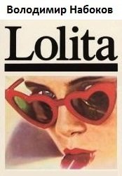

<!DOCTYPE html>
<html lang='uk'>
<meta charset='utf-8'>
<meta name='viewport' content='width=device-width, initial-scale=1'>
<meta http-equiv='X-UA-Compatible' content='ie=edge'>
<link rel='icon' href='../favicon.ico' type='image/x-icon'>
<link rel='stylesheet' href='../styles/w3_books.css'>
<link rel='stylesheet' href='../styles/external_books.css'>
<meta property='og:image' content='../images/w3schools_logo_436_2.png'>
<meta property='og:image:type' content='image/png'>
<meta property='og:image:width' content='436'>
<meta property='og:image:height' content='228'>
<meta property='og:description' content='Читати книги онлайн. Підручники, навчальні посібники, художня література. Скачати книги безплатно в форматі HTML, PDF'>
<!--web--><script async src="https://pagead2.googlesyndication.com/pagead/js/adsbygoogle.js?client=ca-pub-6358227327561384" crossorigin="anonymous"></script><!--/web-->
<!--w3--><script async src="https://pagead2.googlesyndication.com/pagead/js/adsbygoogle.js?client=ca-pub-4060216941760396" crossorigin="anonymous"></script><!--/w3--><title>НАБОКОВ Володимир Володимирович. Роман Лоліта (пер. українською Кирило Васюков). Читати книги онлайн / скачати безкоштовно</title>
<meta name='description' content='Книга Володимира Набокова &quot;Лоліта&quot; в перекладі українською мовою. Переклад: Кирило Васюков. Читати онлайн, скачати книги безплатно в форматі html, docx, epub, fb2, pdf, txt.'>
<div class='w3-container top'>
    <a class='w3schools-logo notranslate' href='../index.html'>Читати книги онлайн <span class='dotcom w3-hide-small'>- українською</span></a>
    <div class='w3-right w3-hide-small w3-wide toptext' style="font-family:'Segoe UI',Arial,sans-serif">КНИГИ ОНЛАЙН</div>
</div>
<div style='display:none;position:absolute;z-index:4;right:52px;height:44px;background-color:#5f5f5f;letter-spacing:normal;' id='googleSearch'>
    <!--W3SchoolsUA-Google-Search-->
    <script async src="https://cse.google.com/cse.js?cx=751c3d18bb8a64f00"></script><div class="gcse-search"></div>
    <!--/W3SchoolsUA-Google-Search-->
</div>
<!--Top menu-->
<div class='w3-card-2 topnav notranslate' id='topnav'>
    <div style='overflow:auto;'>
        <div class='w3-bar w3-left' style='width:100%;overflow:hidden;height:41px'>
            <a class='topnav-icons fa fa-menu w3-hide-large w3-left w3-bar-item w3-button' href='javascript:void(0);' onclick='open_menu()' title='Меню'></a>
            <a class='topnav-icons fa fa-home w3-left w3-bar-item w3-button' href='../index.html' title='W3Schools українською'></a>
            <a class='w3-bar-item w3-button' href='../books/index.html' title='Читати книги онлайн'>Книги онлайн</a>
            <a class='w3-bar-item w3-button' id='topnavbtn_tutorials' href='javascript:void(0);' onclick="w3_open_nav('tutorials')" title='Більше підручників'>ПІДРУЧНИКИ <i class='fa fa-caret-down'></i><i class='fa fa-caret-up' style='display:none'></i></a>
            <a class='topnav-icons fa w3-right w3-bar-item w3-button' href='javascript:void(0);' onclick='open_search(this)' title='Пошук на сайті'>&#128269;</a>
            <a class='w3-bar-item w3-button w3-right' target='_blank' href='https://drive.google.com/open?id=1fddM8chCC273SbiTEYVNLorbZ2qij7fp' title='Скачати книги безкоштовно з Google-диску'>КНИГИ</a>
        </div>
        <div id='nav_tutorials' class='w3-bar-block w3-card-2' style='display:none;'>
            <span onclick="w3_close_nav('tutorials')" class='w3-button w3-xlarge w3-right' style='position:absolute;right:0;font-weight:bold;'>&times;</span>
            <div class='w3-row-padding' style='padding:12px 48px'>
                <div class='w3-col l3 m6'>
                    <h3>HTML та CSS</h3>
                    <a class='w3-bar-item w3-button' href='../html/index.html'>Вивчити HTML</a>
                    <a class='w3-bar-item w3-button' href='../css/index.html'>Вивчити CSS</a>
                    <a class='w3-bar-item w3-button' href='../css/css_rwd_intro.html'>Вивчити RWD</a>
                    <a class='w3-bar-item w3-button' href='../bootstrap/bootstrap_ver.html'>Вивчити Bootstrap</a>
                    <a class='w3-bar-item w3-button' href='../w3css/index.html'>Вивчити W3.CSS</a>
                    <a class='w3-bar-item w3-button' href='../colors/index.html'>Вивчити Кольори</a>
                    <a class='w3-bar-item w3-button' href='../icons/index.html'>Вивчити Іконки</a>
                    <a class='w3-bar-item w3-button' href='../graphics/index.html'>Вивчити Графіку</a>
                    <a class='w3-bar-item w3-button' href='../graphics/svg_intro.html'>Вивчити SVG</a>
                    <a class='w3-bar-item w3-button' href='../graphics/canvas_intro.html'>Вивчити Canvas</a>
                    <a class='w3-bar-item w3-button' href='../howto/index.html'>Вивчити Як зробити</a>
                    <a class='w3-bar-item w3-button' href='../sass/index.html'>Вивчити Sass</a>
                    <div class='w3-hide-large w3-hide-small'>
                        <h3>Аналітика даних</h3>
                        <a class='w3-bar-item w3-button' href='../ai/index.html'>Вивчити Штучний інтелект</a>
                        <a class='w3-bar-item w3-button' href='../python/python_ml_getting_started.html'>Вивчити Машинне навчання</a>
                        <a class='w3-bar-item w3-button' href='../datascience/index.html'>Вивчити Науку про дані</a>
                        <a class='w3-bar-item w3-button' href='../numpy/index.html'>Вивчити NumPy</a>
                        <a class='w3-bar-item w3-button' href='../pandas/index.html'>Вивчити Pandas</a>
                        <a class='w3-bar-item w3-button' href='../scipy/index.html'>Вивчити SciPy</a>
                        <a class='w3-bar-item w3-button' href='../python/matplotlib_intro.html'>Вивчити Matplotlib</a>
                        <a class='w3-bar-item w3-button' href='../statistics/index.html'>Вивчити Статистику</a>
                        <a class='w3-bar-item w3-button' href='../excel/index.html'>Вивчити Excel</a>
                        <a class='w3-bar-item w3-button' href='../googlesheets/index.html'>Вивчити Google таблиці</a>
                        <h3>XML</h3>
                        <a class='w3-bar-item w3-button' href='../xml/index.html'>Вивчити XML</a>
                        <a class='w3-bar-item w3-button' href='../xml/ajax_intro.html'>Вивчити XML AJAX</a>
                        <a class='w3-bar-item w3-button' href='../xml/dom_intro.html'>Вивчити XML DOM</a>
                        <a class='w3-bar-item w3-button' href='../xml/xml_dtd_intro.html'>Вивчити XML DTD</a>
                        <a class='w3-bar-item w3-button' href='../xml/schema_intro.html'>Вивчити XML Schema</a>
                        <a class='w3-bar-item w3-button' href='../xml/xsl_intro.html'>Вивчити XSLT</a>
                        <a class='w3-bar-item w3-button' href='../xml/xpath_intro.html'>Вивчити XPath</a>
                        <a class='w3-bar-item w3-button' href='../xml/xquery_intro.html'>Вивчити XQuery</a>
                    </div>
                </div>
                <div class='w3-col l3 m6'>
                    <h3>JavaScript</h3>
                    <a class='w3-bar-item w3-button' href='../js/index.html'>Вивчити JavaScript</a>
                    <a class='w3-bar-item w3-button' href='../jquery/index.html'>Вивчити jQuery</a>
                    <a class='w3-bar-item w3-button' href='../react/index.html'>Вивчити React</a>
                    <a class='w3-bar-item w3-button' href='../angular/index.html'>Вивчити AngularJS</a>
                    <a class='w3-bar-item w3-button' href='../js/js_json_intro.html'>Вивчити JSON</a>
                    <a class='w3-bar-item w3-button' href='../js/js_ajax_intro.html'>Вивчити AJAX</a>
                    <a class='w3-bar-item w3-button' href='../appml/index.html'>Вивчити AppML</a>
                    <a class='w3-bar-item w3-button' href='../w3js/index.html'>Вивчити W3.JS</a>
                    <h3>Програмування</h3>
                    <a class='w3-bar-item w3-button' href='../python/index.html'>Вивчити Python</a>
                    <a class='w3-bar-item w3-button' href='../java/index.html'>Вивчити Java</a>
                    <a class='w3-bar-item w3-button' href='../c/index.html'>Вивчити C</a>
                    <a class='w3-bar-item w3-button' href='../cpp/index.html'>Вивчити C++</a>
                    <a class='w3-bar-item w3-button' href='../cs/index.html'>Вивчити C#</a>
                    <a class='w3-bar-item w3-button' href='../r/index.html'>Вивчити R</a>
                    <a class='w3-bar-item w3-button' href='../kotlin/index.html'>Вивчити Kotlin</a>
                    <a class='w3-bar-item w3-button' href='../go/index.html'>Вивчити Go</a>
                    <a class='w3-bar-item w3-button' href='../django/index.html'>Вивчити Django</a>
                    <a class='w3-bar-item w3-button' href='../typescript/index.html'>Вивчити TypeScript</a>
                    <div class='w3-hide-small'><br class='w3-hide-medium w3_hide-small'><br class='w3-hide-medium w3_hide-small'></div>
                </div>
                <div class='w3-col l3 m6'>
                    <h3>Серверна сторона</h3>
                    <a class='w3-bar-item w3-button' href='../sql/index.html'>Вивчити SQL</a>
                    <a class='w3-bar-item w3-button' href='../mysql/index.html'>Вивчити MySQL</a>
                    <a class='w3-bar-item w3-button' href='../php/index.html'>Вивчити PHP</a>
                    <a class='w3-bar-item w3-button' href='../asp/index.html'>Вивчити ASP</a>
                    <a class='w3-bar-item w3-button' href='../nodejs/index.html'>Вивчити Node.js</a>
                    <a class='w3-bar-item w3-button' href='../nodejs/nodejs_raspberrypi.html'>Вивчити Raspberry Pi</a>
                    <a class='w3-bar-item w3-button' href='../git/index.html'>Вивчити Git</a>
                    <a class='w3-bar-item w3-button' href='../githubpages/index.html'>Вивчити GitHub Pages</a>
                    <a class='w3-bar-item w3-button' href='../aws/index.html'>Вивчити AWS Cloud</a>
                    <h3>Веб-будівництво</h3>
                    <a class='w3-bar-item w3-button' href='where_to_start.html'>З чого почати</a>
                    <a class='w3-bar-item w3-button' href='../w3css/w3css_templates.html'>Веб-шаблони</a>
                    <a class='w3-bar-item w3-button' href='../browsers/index.html'>Веб-статистика</a>
                    <a class='w3-bar-item w3-button' href='../tryit/index.html'>Веб-редактор</a>
                    <a class='w3-bar-item w3-button' href='../whatis/index.html'>Веб-розробка</a>
                    <a class='w3-bar-item w3-button' href='../cybersecurity/index.html'>Кібербезпека</a>
                    <a class='w3-bar-item w3-button' href='../accessibility/index.html'>Доступність</a>
                    <a class='w3-bar-item w3-button' href='https://www.w3schools.com/typingspeed/default.html' target='_blank' rel='nofollow'>Перевірити швидкість друку</a>
                    <a class='w3-bar-item w3-button' href='https://www.w3schools.com/codegame/index.html' target='_blank' rel='nofollow'>Кодова гра</a>
                </div>
                <div class='w3-col l3 m6 w3-hide-medium'>
                    <h3>Аналітика даних</h3>
                    <a class='w3-bar-item w3-button' href='../ai/index.html'>Вивчити Штучний інтелект</a>
                    <a class='w3-bar-item w3-button' href='../python/python_ml_getting_started.html'>Вивчити Машинне навчання</a>
                    <a class='w3-bar-item w3-button' href='../datascience/index.html'>Вивчити Науку про дані</a>
                    <a class='w3-bar-item w3-button' href='../numpy/index.html'>Вивчити NumPy</a>
                    <a class='w3-bar-item w3-button' href='../pandas/index.html'>Вивчити Pandas</a>
                    <a class='w3-bar-item w3-button' href='../scipy/index.html'>Вивчити SciPy</a>
                    <a class='w3-bar-item w3-button' href='../python/matplotlib_intro.html'>Вивчити Matplotlib</a>
                    <a class='w3-bar-item w3-button' href='../statistics/index.html'>Вивчити Статистику</a>
                    <a class='w3-bar-item w3-button' href='../excel/index.html'>Вивчити Excel</a>
                    <a class='w3-bar-item w3-button' href='../googlesheets/index.html'>Вивчити Google таблиці</a>
                    <h3>XML</h3>
                    <a class='w3-bar-item w3-button' href='../xml/index.html'>Вивчити XML</a>
                    <a class='w3-bar-item w3-button' href='../xml/ajax_intro.html'>Вивчити XML AJAX</a>
                    <a class='w3-bar-item w3-button' href='../xml/dom_intro.html'>Вивчити XML DOM</a>
                    <a class='w3-bar-item w3-button' href='../xml/xml_dtd_intro.html'>Вивчити XML DTD</a>
                    <a class='w3-bar-item w3-button' href='../xml/schema_intro.html'>Вивчити XML Schema</a>
                    <a class='w3-bar-item w3-button' href='../xml/xsl_intro.html'>Вивчити XSLT</a>
                    <a class='w3-bar-item w3-button' href='../xml/xpath_intro.html'>Вивчити XPath</a>
                    <a class='w3-bar-item w3-button' href='../xml/xquery_intro.html'>Вивчити XQuery</a>
                </div>
            </div>
            <br>
        </div>
        <div id='nav_references' class='w3-bar-block w3-card-2'></div>
        <div id='nav_exercises' class='w3-bar-block w3-card-2'></div>
    </div>
</div>
<!--/Top menu--><!--Left menu-->
<div class='w3-sidebar w3-collapse' id='sidenav'>
    <div id='leftmenuinner'>
        <div class='w3-light-grey' id='leftmenuinnerinner'>
            <h2 class='left'><span class='left_h2'>Лоліта</span> (роман)</h2>
            <a target='_top' href='#p00'>Передмова</a>
            <a target='_top' href='#p01'>Розділ 1</a>
            <a target='_top' href='#p02'>Розділ 2</a>
            <a target='_top' href='#p03'>Розділ 3</a>
            <a target='_top' href='#p04'>Розділ 4</a>
            <a target='_top' href='#p05'>Розділ 5</a>
            <a target='_top' href='#p06'>Розділ 6</a>
            <a target='_top' href='#p07'>Розділ 7</a>
            <a target='_top' href='#p08'>Розділ 8</a>
            <a target='_top' href='#p09'>Розділ 9</a>
            <a target='_top' href='#p10'>Розділ 10</a>
            <a target='_top' href='#p11'>Розділ 11</a>
            <a target='_top' href='#p12'>Розділ 12</a>
            <a target='_top' href='#p13'>Розділ 13</a>
            <a target='_top' href='#p14'>Розділ 14</a>
            <a target='_top' href='#p15'>Розділ 15</a>
            <a target='_top' href='#p16'>Розділ 16</a>
            <a target='_top' href='#p17'>Розділ 17</a>
            <a target='_top' href='#p18'>Розділ 18</a>
            <a target='_top' href='#p19'>Розділ 19</a>
            <a target='_top' href='#p20'>Розділ 20</a>
            <a target='_top' href='#p21'>Розділ 21</a>
            <a target='_top' href='#p22'>Розділ 22</a>
            <a target='_top' href='#p23'>Розділ 23</a>
            <a target='_top' href='#p24'>Розділ 24</a>
            <a target='_top' href='#p25'>Розділ 25</a>
            <a target='_top' href='#p26'>Розділ 26</a>
            <a target='_top' href='#p27'>Розділ 27</a>
            <a target='_top' href='#p28'>Розділ 28</a>
            <a target='_top' href='#p29'>Розділ 29</a>
            <a target='_top' href='#p30'>Розділ 30</a>
            <a target='_top' href='#p31'>Розділ 31</a>
            <a target='_top' href='#p32'>Розділ 32</a>
            <a target='_top' href='#p33'>Розділ 33</a>
            <br><br><br>
        </div>
    </div>
</div>
<!--/Left menu--><!--CONTENT-->
<div class='w3-main w3-light-grey' id='belowtopnav' style='margin-left:220px;'>
    <div class='w3-row w3-white'>
        <div class='w3-col l10 m12' id='main'>
          <div class="adver_adup">
    <script async src="https://pagead2.googlesyndication.com/pagead/js/adsbygoogle.js?client=ca-pub-6358227327561384" crossorigin="anonymous"></script>
    <!-- adup_gorizontal -->
    <ins class="adsbygoogle" style="display:block" data-ad-client="ca-pub-6358227327561384" data-ad-slot="5050829044" data-ad-format="auto" data-full-width-responsive="true"></ins>
    <script>(adsbygoogle = window.adsbygoogle || []).push({});</script>
</div>
            <a href='index.html'></a>
<article>
    <h3><a href="nabokov-volodymyr.html">НАБОКОВ Володимир Володимирович</a></h3>
    <h1>Лоліта (роман), 1955</h1>
    <hr>
    <div class='w3-clear nextprev'>
        <a class='w3-left w3-btn' href='../index.html'>&#10094; Home</a>
        <a class='w3-right w3-btn' href='naumov-volodymyr.html'>Next &#10095;</a>
    </div>
    <hr>
    <h3>Про &quot;Лоліту&quot;</h3>
    <a href="images/nabokov_lolita.jpg" target="_blank"></a>
    <p><strong>&quot;Лолі́та&quot;</strong> (англ. Lolita, рос. Лолита) — роман Володимира Набокова. Спочатку написаний англійською та опублікований у 1955 у Парижі, пізніше перекладений самим автором російською та опублікований у 1967 у Нью-Йорку.</p>
    <p>Твір здобув світову славу завдяки інноваційному стилю ведення оповіді та своїй контроверсійній темі — стосункам головного героя й оповідача Гумберта Гумберта, чоловіка середніх літ, та його одержимості 12-річною дівчинкою Долорес Гейз та їхнім сексуальним зв&#8217;язкам.</p>
    <p>Після публікації «Лоліта» стала класичним твором, що репрезентує літературу ХХ століття. Ім&#8217;я Лоліта у попкультурі стало назовництвом для молодих дівчат, що рано починають сексуальне життя.</p>
    <p>Номер 4 у Рейтингу 100 найкращих книг усіх часів журналу Ньюсвік.</p>
    <hr>
    <h4>Екранізація</h4>
    <p>Роман було двічі екранізовано:</p>
    <ul>
        <li>1962 — <a href="https://uk.wikipedia.org/wiki/Лоліта_(фільм,_1962)">«Лоліта»</a> (режисер — Стенлі Кубрик)</li>
        <li>1997 — <a href="https://uk.wikipedia.org/wiki/Лоліта_(фільм,_1997)">«Лоліта»</a> (режисер — Едріан Лейн)</li>
    </ul>
    <hr>
    <h4>Переклади українською</h4>
    <p>Перший український переклад «Лоліти» вийшов друком у травні 2008 року. Здійснив його П. Таращук. На вимогу власника авторського права, сина автора «Лоліти» Д. Набокова, український переклад був виконаний з російської версії роману. Він супроводжується примітками П. Бабая, де, зокрема, пояснюються деякі алюзії у творі.</p>
    <p>У січні 2018 у видавництві КСД мав вийти переклад українською відомого перекладача Дмитра Дроздовського, зроблений з оригіналу англійською, а не з автоперекладу автора російською. За незрозумілих обставин КСД згодом перенесла реліз українського перекладу на жовтень 2018 року, одночасно змінивши перекладача з Дмитра Дроздовського на Єлену Даскал.</p>
    <ul>
        <li><a href="https://chtyvo.org.ua/authors/Nabokov_Vladimir/Lolita_by_Taraschuk/" target="_blank" rel="nofollow">Владімір Набоков: Лоліта (2008). Переклад з російської: Петро Таращук</a>. Передмова та примітки Павла Бабая. Художники: Б. Бублик, В. Мурликін. Харків: Фоліо. 412 с. ISBN 978-966-03-4128-9</li>
        <li>Володимир Набоков. Лоліта (2018). Переклад з англійської: Єлена Даскал. Харків: КСД. 432 стор. 2018. ISBN 978-617-12-4560-0</li>
        <li><a href="https://chtyvo.org.ua/authors/Nabokov_Vladimir/Lolita/" target="_blank" rel="nofollow">Володимир Набоков. Лоліта. Переклад з російської: Кирило Васюков</a>.</li>
    </ul>
    <hr>
    <h2>Лоліта / читати онлайн</h2>
    <p><em>(переклад українською мовою: Кирило Васюков)</em></p>
    <hr>
    <h3 id="p00">Передмова</h3>
    <p>"Лолiта. Сповiдь свiтлошкiрого вдiвця": такою була подвiйна назва, з якою автор цiєї замiтки одержав дивний текст, який вона очолює. Сам "Гумберт Гумберт" помер у в'язницi, вiд закупорки серцевої аорти, 16-го числа листопада 1959 р., за кiлька днiв до початку судового розгляду своєї справи. Його захисник, мiй родич i добрий друг Клеренс Кларк (на цей час адвокат, приписаний до Колумбiйського Дiльничного Суду), попросив мене вiдредагувати манускрипт, посилаючись на заповiт свого клiєнта, один з пунктiв якого уповноважував мого шановного кузена вжити на свiй розсуд усiх заходiв, що стосуються пiдготовки "Лолiти" до друку. На рiшення п-на Кларка, можливо, вплинув той факт, що обраний ним редактор наразi от-от удостоївся премiї iменi Полiнга за коротку працю ("Чи можна спiвчувати почуттям?"), в якiй залучено до обговорення деякi патологiчнi стани та збочення.</p>
    <p>Моє завдання виявилось простiшим, анiж ми вдвох припускали. Якщо не брати виправлення явних помилок та ретельного вилучення деяких цупких деталей, якi, всупереч старанням самого "Г.Г.", ще збереглись в текстi, як то деякi вiхи та пам'ятки (вказiвки на мiсця та людей, що їх пристойнiсть вимагала мовчазно обминути, а людянiсть - пощадити), можна вважати, що цi гiднi уваги замiтки подано в недоторканостi. Кумедний псевдонiм її автора - його власний вигад; i природно вважати, що ця маска - через яку нiбито горять два гiпнотичнi ока - мала залишитись на мiсцi згiдно з бажанням її носiя. Мiж тим як "Гейз" всього лише римує зi справжнiм прiзвищем героїнi, її перше iм'я надто близько вплiтається у найпотаємнiшу тканину книги, щоб його можна було замiнити; втiм (як читач сам допевнився), в цьому й немає фактичної потреби. Тi, котрим цiкаво, можуть знайти свiдчення про вбивство, скоєне "Г.Г.", у газетах за вересень - жовтень 1952р.; його причини та мета були б i досi таїною, якби цi мемуари не потрапили в свiтле коло моєї настiльної лампи.</p>
    <p>На догоду старомодним читачам, якi цiкавляться подальшою долею "живих зразкiв" за обрiєм "правдивої повiстi", можу навести деякi вiстки, одержанi вiд п-на "Вiндмюллера" з "Рамзделя", котрий волiв лишитись неназваним, щоб довга тiнь невтiшної та брудної iсторiї не дотяглась до того мiстечка, у якому вiн має честь проживати. Його донька "Луїза" вже студентка-другокурсниця. "Мона Даль" зараз вчиться в унiверситетi в Парижi. "Рита" нещодавно побралась iз господарем готелю на Флоридi. Дружина "Ричарда Скиллера" сконала в пологах, розвiльнившись мертвою дiвчинкою, грудня 25-го числа 1952р., у далекому на пiвнiч захiдному поселеннi Сiра Зоря. П-нi Вiвiан Дамор-Блок (Дамор - для сцени, Блок - вiд одного, першого з чоловiкiв) написала бiографiю колишнього приятеля пiд каламбурною назвою "Кумир мiй", яка на часi має вийти в свiт; критики, вже ознайомленi з манускриптом, говорять, що це найкраща її штука. Цвинтарна сторожа, яка хоча б якось згадана в мемуарах "Г.Г.", не повiдомляє, чи виходить хтось iз могили. Читачевi, який розглядає "Лолiту" просто як роман, ситуацiї та емоцiї, в ньому зображенi зосталися б дратiвливо-неясними, якби вони були знебарвленi через кепське iнакомовлення. Щоправда, на весь твiр не можна вiднайти й одного нечемного вислову, скажу бiльше: здоровань-фiлiстер, призвичаєний сучасною умовнiстю брати без будь-якої огиди цiлi всипища парканових словечок у щонайбанальнiшому американському чи англiйському романi, буде вельми шокований вiдсутнiстю таких у "Лолiтi". Та якщо, задля заспокоєння цього парадоксального ханжi, редактор посмiв би послабити або вилучити такi сцени, якi з певного погляду можуть видатися "спокусливими" (дивись iсторичне рiшення, прийняте вельмишановним суддею Джоном Вуссi, грудня 6-го числа 1933р., з приводу iншої значно вiдвертiшої книжки), довелося б взагалi вiдмовитись вiд друкування "Лолiти", адже саме тi сцени, у яких дозвiльний соромiтник мiг би угледiти свавiльну чуттєвiсть, являють собою насправдi конструкцiйно необхiдний елемент у розвої трагiчної оповiдi, яка неухильно стремить до того, що тiльки й можна назвати моральним апотеозом. Цинiк скаже, що на це претендує й професiйний порнограф, ерудит вiдкаже, що палка сповiдь "Г.Г." зводиться до бурi в пробiрцi; що кожен рiк не менш як 12% дорослих американцiв чоловiчої статi, - за скромним пiдрахунком, якщо вiрити д-ру Бiанцi Шварцман (запозичую з приватного повiдомлення), - проходить через той особливий досвiд, який "Г.Г." зображує так розпачливо; та що, пiшов би наш знедолений мемуарист того рокового лiта року 1947 до компетентного психопатолога, не сталося б i лиха. Це все так, - втiм не було б цiєї книжки.</p>
    <p>Подаруймо цьому коментаторовi, якщо вiн висловить ще раз те, на чому неодноразово наполягав, а саме, що "непристойне" найчастiше дорiвнює "незвичному". Великий витвiр мистецтва завжди оригiнальний; вiн за своєю сутнiстю мусить вражати й голомшити, тобто "шокувати". Не маю й найменшого бажання вславлювати п-на "Г.Г.". Жодного сумнiву в тому, що вiн є огидний, що вiн є ниций, що вiн слугує яскравим прикладом моральної прокази, що в ньому поєднанi лютiсть i грайливiсть, якi може й свiдчать про глибочезне страждання, але не додають приваби деяким його одкровенням. Його дивакуватiсть, звiсна рiч, важкувата. Численнi його випадковi вiдгуки про мешканцiв та природу Америки є смiшнi. Вiдчайдушна чеснiсть, якою тремтить його сповiдь, аж нiяк не позбавляє його вiдповiдальностi за диявольську витонченiсть. Вiн ненормальний. Вiн не джентльмен. Але з яким чаруванням спiвоча його скрипка пробуджує в нас нiжне спiвчуття до Лолiти, змушуючи нас зачитуватися книгою, всупереч першому почуттю вiдрази до автора.</p>
    <p>Як опис клiнiчного випадку, "Лолiтi" поза сумнiвом призначено стати поряд iз класичними творами психiатричної лiтератури, й можна ручатись, що за десять рокiв термiн "нiмфетка" буде в словниках та газетах. Як художнiй витвiр, "Лолiта" виходить за межi покаянної сповiдi, але значно важливiшим нiж її наукове значення та художня вартiсть мусимо визнати моральний вплив її на серйозного читача, адже цей болючий аналiз поодинокого випадку мiстить в собi й загальну мораль. Бездоглядна дiвчинка, зайнята собою мати, розпалений хтивiстю манiяк - усi вони не тiльки кольористi персонажi єдиної в своєму родi повiстi; вони, окрiм того, нас попереджають про небезпечнi схиблення; вони вказують на всеможливi бiди. "Лолiта" мала б змусити нас усiх - батькiв, соцiальних працiвникiв, педагогiв - iз якнайбiльшою насторогою та проникливiстю вiддатися справi виховання здоровiшого поколiння в надiйнiшому свiтi.</p>
    <p><i>Джон Рей, д-р фiлософiї,<br>Вiдуорт, Масачусетс<br>5 сiчня 1955 року.</i></p>
    <hr>
    <h3 style="text-align:right" title="Перейти на другу частину книги"><a href="nabokov_lolita_2.html">Частина 2 &nbsp;&#10095;&#10095;</a></h3>
    <h3 style="text-align:center">Частина 1</h3>
    <h3 id="p01">1.</h3>
    <p>Лолiта, свiтло мого життя, вогонь моїх чересел. Грiх мiй, душа моя. Ло-лi-та: кiнчик язика виконує шлях у три сходинки з пiднебiння вниз, щоб на третьому штовхнутися в зуби. Ло. Лi. Та.</p>
    <p>Вона була Ло, просто Ло, вранцi, п'ять футiв на зрiст (без двох вершкiв та в однiй шкарпетцi). Вона була Лола в довгих штанях. Вона була Доллi в школi. Вона була Долорес на пунктирах бланкiв. Але в моїх обiймах вона завжди: Лолiта.</p>
    <p>А попередницi в неї були хоч? Авжеж - були... Бiльше скажу: й Лолiти б не сталось, якби я не покохав колись далеким лiтом одну, первiсну дiвчинку. У деякiм князiвствi бiля моря (майже як у По).</p>
    <p>Коли ж це було, а?</p>
    <p>Приблизно за стiльки ж рокiв до народження Лолiти, скiльки менi було того лiта. Можете завжди покладатись на вбивцю щодо вигадливостi прози.</p>
    <p>Шановнi присяжнi жiночої та чоловiчої статi! Експонат Номер Один являє собою те, чому так заздрили Едгаровi серафiми - зле-обiзнанi, простодушнi, шляхетнокрилi серафiми... Залюбуйтеся-но цим клубком тернiв.</p>
    <hr>
    <h3 id="p02">2.</h3>
    <p>Я народився 1910 року, в Парижi. Мiй батько вiдзначався нiжнiстю серця, легкiстю вдачi - та повним вiнегретом з генiв: був швейцарський громадянин, напiвфранцуз-напiвiталiєць, iз Дунавським прожилком. Ось я роздам декiлька чудових, глянсо-блакитних карток.</p>
    <p>Йому належав розкiшний готель на Рив'єрi. Його батько та обидва дiди гендлювали вином, дiамантами та шовками (розподiляйте самi). У тридцять рокiв вiн одружився з англiйкою, донькою альпiнiста Джерома Дуна, онучкою двох Дорсетських пасторiв, експертiв з премудрих предметiв: палеопедологiї й Еолових арф (розподiляйте самi). Обставини та причини смертi моєї вельми фотогенiчної матерi були досить оригiнальнi (пiкнiк, блискавка); менi ж було тодi лише три роки, i крiм якогось теплого закуту в найтемнiшому минулому нiчого менi не лишилось вiд неї в улоговинах та западинах пам'ятi, за якими - якщо ви сильнi витримувати мiй стиль (пишу пiд наглядом) - сiдає сонце мого дитинства: усiм вам, мабуть, вiдомi оцi запахущi залишки дня, якi виснуть разом iз мошвою десь над квiтчастим живоплотом, i в якi впадаєш раптом пiд час прогулянки, проходиш крiзь них, край пiднiжжя пагорба, в присмерки - глуха лiтеплiнь, золотава мошва.</p>
    <p>Старша сестра матерi, Сибiлла, яка була дружиною двоюрiдного брата мого батька - жила в нашому домi якщо не як безоплатна гувернантка, то як економка. В подальшому я чув, що вона була закохана в мого батька, i як одного разу в зливу, вiн легковажно скористався її почуттям - та й забув, тiльки-но погода прояснiла. Я був надзвичайно прив'язаний до неї, всупереч суворостi - рокової суворостi - деяких її правил. Мабуть їй кортiло зробити з мене бiльш добродiйного нiж батько вдiвця. У тьотi Сибiлли були лазуровi, оточенi рожевим, очi та восковий колiр обличчя. Вона писала вiршi. Була поетично марновiрна. Казала, що знає, коли помре - а саме коли менi виповниться шiстнадцять рокiв - i так воно й сталось. Її чоловiк, досвiдчений вояжер вiд парфумерної фiрми, проводив бiльшу частину свого часу в Америцi, де накiнець заснував власний iнтерес та набув деяке майно.</p>
    <p>Я зростав щасливою, здоровою дитиною у яскравому краї книжок з малюнками, чистого пiску, апельсинових дерев, доброзичних собак, морських обрiїв та всмiхнених облич. Навколо мене велепишний готель Мiрана Палас обертався окремим усесвiтом, вибiленим крейдою космосом, посеред iншого, блакитного, величезного, що яскрився ззовнi. Вiд кухонного хлопа у переднику до короля в лiтньому строї, всi любили, всi пестили мене. Старi американки, спираючись на тростину, схилялись надi мною, як Пiзанськi вежi. Зубожiлi росiйськi княгинi не спроможнi були заплатити моєму батьковi, проте купували менi дорогi цукерки. Вiн бо, mon cher petit papa, брав мене кататись у човнi та їздити на роверi. Учив мене плавати, пiрнати, ковзати, читав менi Дон-Кiхота i Les Mis rables, i я обожнював i шанував його, i радiв за нього, коли випадало пiдслухати, як слуги перебирають його рiзноманiтних коханок - солодких красунь, котрi забавлялися мною, воркуючи надi мною та ллючи дорогоцiннi сльози над моїм веселим безматеринством.</p>
    <p>Я навчався в англiйськiй школi, що була розташована за кiлька кiлометрiв вiд дому, там я грав у "ракетс" i "файвс" (гупаючи м'ячем по стiнi ракеткою або долонею); мав якнайкращi оцiнки i пречудово уживався як з товаришами так i з наставниками. До тринадцяти рокiв (тобто до зустрiчi з моєю маленькою Аннабеллою) мав я, пригадую, тiльки два переживання ймовiрно статевi: врочиста благопристойна й винятково теоретична розмова про деякi неочiкуванi явища отроцтва, яка мала мiсце в шкiльному саду троянд з американським хлопчиком, сином вiдомої тодi кiнематографiчної акторки, котру я рiдко бачив тодi у свiтi трьох вимiрiв; та доволi цiкавий вiдгук мого органiзму на перлисто-матовi знiмки з нескiнченно нiжними тiньовими виярками у пишному альбомi Пiшона La Beaut Humaine, який я нишком одного разу витягнув з-пiд купи мармуристих волюмiв Лондон Graphic у готельнiй бiблiотецi. Пiзнiше мiй батько, iз притаманною йому зичливiстю, дав менi всi вiдомостi цього роду, якi на його думку могли менi знадобитись; це було восени 1923-го року, перед моїм вступом до гiмназiї в Лiонi (де я мав провести три зими), та саме влiтку того року батько мiй, нажаль, був вiдсутнiй - збавляв час в Iталiї разом iз Mm de K. та її дочкою - вiдтак менi нiкому було звiритись, нi з ким порадитись.</p>
    <hr>
    <h3 id="p03">3.</h3>
    <p>Аннабелла була, як i автор, змiшаного походження: в її випадку - англiйського та голландського. Об цю пору я пригадую її образ менш виразним, нiж пам'ятав його до того, як спiткав Лолiту. В зоровiй пам'ятi є два пiдходи: за першим, вдається штучно вiдтворити образ у лабораторiї мозку, не заплющуючи очей (i тодi Аннабелла ввижається менi в загальних термiнах, як то: "медового вiдтiнку шкiра", "тоненькi руки", "пiдстрижене русяве волосся", "довгi вiї", "великi барвнi вуста"); за iншим, заплющуєш очi й миттєво викликаєш на темнiй сторонi вiй об'єктивне, оптичне, вкрай точне вiдтворення улюблених рис: маленьке сяєво з природних барв (i ось так я бачу Лолiту).</p>
    <p>Тому дозвольте менi, у зображеннi Аннабелли спинитись на чемному зауваженнi, що вона була привабним дiвчатком, на кiлька мiсяцiв молодшим вiд мене. Її батьки, на прiзвище Лi (Leigh ), давнi друзi моєї тiтки, подiбно до тьотi Сибiлли, були так само вимогливi до порядностi. Вони знiмали вiллу поблизу Мiрани. Цього лисого, бурого пана Лi та грубу, напудрену панi Лi (з народження Ванесса ван Несс) я ненавидiв люто. Спочатку ми з Аннабеллою розмовляли, так би мовити, понавколу. Вона весь час набирала жменю дрiбного пiсочку та пускала його сипатись крiзь пальцi. Голови в нас були налаштованi в лад розумним європейським пiдлiткам тiєї доби й того середовища, i я не певний, чи можна було вiднайти хоча б якийсь iндивiдуальний талант у нашому зацiкавленнi численними населеними свiтами, тенiсними змаганнями, нескiнченнiстю, солiпсизмом й тому подiбними речами. Нiжнiсть та вразливiсть молодих звiрят збуджували в нас обох те ж саме гостре страждання. Вона мрiяла бути сестрою милосердя в якiйсь голодуючiй азiйськiй країнi; я мрiяв бути вiдомим шпигуном.</p>
    <p>Та знагла ми стали закоханими одне в одне - нестямно, незграбно, безстидно, нестерпно; я додав би - безнадiйно, адже наше несамовите прагнення до взаємного володiння можна було б вгамувати тiльки, якби кожен з нас насправдi увiбрав та засвоїв кожну частку тiла й душi iншого; втiм ми навiть не могли знайти мiсця, де б злучитись, як цiлком вiльно знаходять дiти хащ. Пiсля одного невдалого нiчного побачення в неї в саду (про що в наступному пiдроздiлi), єдине, що нам уможливили як зустрiчi, це лежати в досяжностi дорослих, зоровiй, якщо не слуховiй, на тiй частинi пляжу, де було найвелелюднiше. Там, на м'якому пiску, за кiлька крокiв вiд старших, ми валялися цiлий ранок у зацiпенiлiй нестямi любовної муки та зуживали всякого щасного вирiзу в тканинi простору й часу, щоб торкнутись одне одного: її рука, крiзь пiсок, пiдповзала до мене, тулилася ближче, переставляючи вузькi та смаглявi пальцi, а потiм її перламутровi колiна вiдправлялись у таку ж тривалу, обачливу подорож; iнодi випадковий вал, споруджений iншими дiтьми, молодшими, слугував нам укриттям для побiжного солоного поцiлунку; цi недосконалi дотики доводили нашi здоровi та незвиченi тiла до такого ступеня збудження, що навiть прохолода блакитної води, пiд якою ми продовжували правити свого, не в змозi була нас заспокоїти.</p>
    <p>Серед скарбiв, якi я загубив пiд час подальших мандрiв, була зроблена моєю тiткою маленька фотографiя, що закарбувала групу сидячих за столиком кав'ярнi просто неба: Аннабеллу, її батькiв та вельми статечного доктора Купера, кульгавого старця, котрий того лiта упадав за моєю тiткою Сибiллою. Аннабелла вийшла не надто гарно, адже її вловили в ту мить, коли вона схотiла пригубити свiй chocolat glac , й тiльки по худих оголених плечах можна було впiзнати її (оскiльки пам'ятаю знiмок) серед сонячної млявi, в яку поступово й незворотно переходила її краса; та я, сiвши в профiль, трохи далi вiд iнших, проступив з якоюсь драматичною рельєфнiстю: похмурий, густобровий хлопчик, у темнiй, спортивнiй сорочцi та бiлих добре пошитих шортах, який заклав ногу на ногу й дивився вбiк. Фотографiю було зроблено в останнiй день нашого рокового лiта, саме за кiлька хвилин до нашої другої та останньої спроби обiйти долю. З якогось украй прозорого приводу (iншого шансу не передбачалось, та вже нiщо не мало значення) ми вiддалились вiд кав'ярнi на пляж, де знайшли нарештi вiдлюдне мiсце, i там, у бузковiй тiнi рожевих скель, якi створили щось на кшталт яскинi, ми побiжно обмiнялися спраглими ласками, єдиним свiдком яких були кимсь загубленi окуляри. Я стояв навколiшки i вже готовий був оволодiти моєю ясочкою, як раптом два бородатих купальцi - морський дiд та його братчик - вийшли з води iз вигуками неґречного пiдбадьорення, а чотири мiсяцi по тому вона померла вiд тифу на островi Корфу.</p>
    <hr>
    <h3 id="p04">4.</h3>
    <p>Знову i знову гортаю цi мiзернi спомини i щоразу питаю в себе самого, чи не звiдти, не з мерехтiння того далекого лiта пiшла трiщина через усе моє життя. Або, можливо, гостре моє захоплення цим дитинчам було лише першою ознакою вродженого збочення? Коли стараюсь розiбратися в булих бажаннях, намiрах, дiях, я пiддаюсь певнiй зворотнiй уявi, яка живить аналiтичну здiбнiсть спромогами безграничними, а тому всякий видний менi пройдений шлях є безкiнечно посiченим роздорiжжями в очманiло складнiй перспективi пам'ятi. Проте, я певний-таки, що в чарiвний та роковий спосiб Лолiта почалася з Аннабелли.</p>
    <p>Знаю й те, що смерть Аннабелли закрiпила невдоволення того безтямного лiта i стала завадою для всякого iншого кохання протягом холодних лiт моєї юностi. Духовне й тiлесне збiгалося в нашому коханнi такою досконалою мiрою, яка й не примариться нинiшнiм пiдлiткам, якi просто дивляться на все своїми нехитрими почуттями й штампованим глуздом. Довго по її смертi я вiдчував, як її думка тече крiзь мою. Задовго до нашої зустрiчi ми мали однаковi сни. Ми зiставляли вiхи. Знаходили знаки дивної подоби. У червнi одного й того ж року (1919-го) в її дiм i в мiй дiм, в двох несумiжних країнах, спурхнула чиясь канарка. О, Лолiто, якби ти мене кохала так!</p>
    <p>Я приберiг на кiнець розповiдi про Аннабеллу опис нашого невтiшного першого побачення. Одного разу пiзно ввечерi їй вдалось обминути злiсну пильнiсть батькiв. У дiбровцi чуйних тонколистих мiмоз, позаду вiлли, ми знайшли собi мiсце на руїнах низького кам'яного муру. В темрявi, крiзь нiжнi деревця виднiли арабески освiтлених вiкон вiлли - якi тепер, злегка пiдправленi кольоровим чорнилом чуттєвої пам'ятi, я порiвняв би з гральними картами (почасти можливо тому, що неприятель грав там у бридж). Вона тремтiла й здригалась, коли я цiлував її в закуток напiввiдкритих губ i в гарячу мочку вуха. Розсип зiрок блiдо горiв над нами з-помiж силуетiв довгастого листя: ця чутлива безодня здавалась так само оголеною, якою була вона пiд своєю легкою сукенкою. На тлi неба напрочуд ясно вирiзнялось її обличчя, нiби вiд нього линуло слабке сяяння. Її ноги, її вабливi оживленi ноги, були не надто стуленi, та коли моя рука вiднайшла те, чого шукала, вираз якоїсь русалкової мрiйливостi - чи то бiль, чи то насолода - з'явилася на її дитячому обличчi. Сидячи трохи вище вiд мене, вона у самотнiй млостi тягнулась до моїх губ, причому голова її схилялася сонним, нiжним порухом, що був майже страждальницьким, а її голi колiнця хапали, стискали мою п'ясть, та знов слабнули. Її тремтячий рот, кривлячись вiд гiркоти таємничого зiлля, з легким придихом наближався до мого обличчя. Вона прагнула вгамувати бiль кохання тим, що рвучко терла свої вуста по моїх, або раптом вiдхилялась iз поривчастим злетом кучерiв, а за тим знову похмуро линула й дозволяла менi живитись її розкритими вустами, мiж тим як я, щиро готовий їй подарувати все - моє серце, горло, нутрощi - давав їй тримати в млявому кулачку берло моєї жадоби.</p>
    <p>Пам'ятаю запах якоїсь пудри - яку вона, здається, крала в iспанської покоївки матерi - солодкавий, дешевий мускусний душок; вiн зливався з її власним бiсквiтним запахом, та знагла чаша моїх почуттiв сповнила край; неждана метушня пiд ближнiм кущем завадила їй перелитись. Ми завмерли та з болiсним подрогом в жилах прислухались до шуму, що його ймовiрно зчинила лишень полююча кiшка. Але водночас, нажаль, зi сторони будiвлi пролунав голос панi Лi, що звав дочку з дико зростаючими перекатами, й доктор Купер важко прокульгав з веранди в сад. Але ця мiмозова хаща, iмла зiрок, остуда, вогонь, медова роса, й моя мука лишились зi мною, i ця дiвчинка з виплеканими морем ногами й полум'яним язиком з тiєї пори переслiдувала мене невiдчепно - допоки нарештi двадцять чотири роки по тому я не розпорошив марноття, воскресивши її в iншiй.</p>
    <hr>
    <h3 id="p05">5.</h3>
    <p>Днi моєї юностi, як погляну на них, схожi на вiдлiтаючий блiдий вихор повторних клаптикiв, немов ранкова веремiя спожитих папiрцiв, видних пасажировi американського експреса через заднє проглядове вiкно останнього вагона, за яким вони в'ються. У моїх гiгiєнiчних зчепленнях з жiнками я був практичний, насмiшкуватий та жвавий. В мої унiверситетськi роки в Лондонi i в Парижi я вдовольнявся платними кралями. Мої науковi студiї були стараннi i доскiпливi, та не дуже плiднi. Спочатку я думав стати психiатром, як багато-хто з невдах; але я був невдахою особливим; мене охопила химерна утома (треба пiти до лiкаря, - така млость); i я перейшов до вивчення англiйської лiтератури, з якої живе не один поет-пустоцвiт, перетворившись у професора з люлькою, в пiджаку з добротної вовни. Париж тридцятих рокiв цiлком пасував менi. Я обговорював радянськi фiльми з американськими лiтераторами. Я сидiв з уранiстами в кав'ярнi Des Deux Magots. Я друкував в'юнчастi етюди в малочитабельних часописах. Я вигадував пародiї - на Елiота, наприклад:</p>
    <p>Нехай фрейляйн фон Кульп тримає ще За клямку дверi, й обернеться...Нi, не зрушуся до неї, нi до Фрески. Нi до тiєї чайки...</p>
    <p>Один з моїх творiв, озаглавлений "Прустiвська тема в листi Кiтса до Бенджамiна Бейлi," викликав схвальнi посмiшки в шiстьох-семи учених, якi прочитали його. Я взявся писати "Коротку iсторiю англiйської поезiї " для видавця з великим iм'ям, а потiм почав укладати той пiдручник французької лiтератури (iз зразками порiвнянь з лiтератури англiйської) для американських та британських читачiв, який мусив займати мене протягом сорокових рокiв, i останнiй томик якого був майже готовий до друку на день мого арешту.</p>
    <p>Я знайшов службу: викладав англiйську групi дорослих парижан шiстнадцятого округу. Потiм впродовж двох зим був учителем чоловiчої гiмназiї. Iнколи я користався зi знайомств серед психiатрiв та працiвникiв з громадського догляду, щоб з ними вiдвiдувати рiзнi заклади, як наприклад сиротинцi та школи для недолiтнiх злочинниць, де на блiдих, зi злiпленими вiями отроковиць я мiг зорити з тiєю безкарнiстю, яка нам дарується в сновидiннях.</p>
    <p>А зараз я хочу висловити наступну думку. У вiкових межах вiд дев'яти до чотирнадцяти рокiв трапляються дiвчатка, котрi для деяких зачарованих пiлiгримiв, якi вдвiчi або в багато разiв є старшi за них, виказують iстотну свою сутнiсть - сутнiсть не людську, а нiмфiйну (тобто демонiчну); i цих маленьких обраниць я пропоную йменувати так: нiмфетки.</p>
    <p>Читач помiтить, що просторовi поняття я замiнюю на поняття часу. Бiльш того: менi б хотiлось, щоб вiн побачив цi межi, 9 - 14, як окоємнi обриси (дзеркалистi обмiлi, яскрiючi скелi) зачарованого острова, на якому живуть оцi нiмфетки, i який оточений широким iмлистим океаном. Спитати б: у цих вiкових границях чи всi дiвчинки - нiмфетки? Звiсно, нi. Бо ж так ми, втаємниченi, ми, самотнi мореплавцi, ми, нiмфолепти, давно б збожеволiли. Але й краса також не є критерiєм, мiж тим як вульгарнiсть (або те хоч би, що зветься вульгарнiстю в тому чи iншому середовищi) не виключає неодмiнної наявностi тих таємничих рис - тiєї казково-дивної грацiї, тiєї невловимої, мiнливої душевбивчої, закрадливої звабностi, - якi вирiзняють нiмфетку серед перевесниць, незрiвнянно бiльше залежних вiд просторового свiту одночасних явищ, анiж вiд невагомого острова зачарованого часу, де Лолiта бавиться з подiбними до неї. В серединi тих же вiкових границь число справдешнiх нiмфеток є багато меншим числа некрасивих або просто "гарненьких", чи навiть "вродливих", але цiлком звичайних, пухлявих, вайлуватих, зимношкiрих, людяних за єством своїм, таких, котрi можуть або не можуть потiм перекинутись на красивих, як кажуть, жiнок (погляньте-но на таку-собi бридку пампушку в чорних панчохах й бiлому капелюшку, яка перевтiлилась у дивну зiрку екрану). Якщо попросити нормальну людину вiдзначити якнайгарнiсiньку на груповому знiмку школярок або герль-скаутiв, вона не завжди вцiлить у нiмфетку. Треба бути художником та навiженим, забавищем нескiнченних скорбот, iз булькою гарячої отрути в коренi тiла та полум'ям над-жадання, вiчно палаючим у чуйному хребтi (о, як доводиться нам щулитись i берегтися!), аби впiзнати одразу, за невимовними прикметами - за ледь котячим обрисом вилиць, за тонкими й шовковистими членами, та iншими ознаками, перелiчити якi менi заказано вiдчаєм, стидом, сльозами нiжностi - маленького смертоносного демона у тлумi звичайних дiтей; вона ж бо, нiмфетка, стоїть серед них невпiзнана, що й сама не вiдчуває своєї казкової влади.</p>
    <p>Та ще: через примат часу в цiй бiсiвськiй справi, науковець має бути готовим взяти до уваги, що потрiбна рiзниця в декiлька рокiв (я би сказав, не менш десяти, але за звичай у тридцять або сорок - й до дев'ятдесяти в небагатьох вiдомих випадках) мiж дiвчинкою й мужчиною для того, щоб той мiг зазнати чарiв нiмфетки. Тут є питання налаштування кришталика, питання деякої вiдстанi, яку внутрiшнє око з приємним хвилюванням надолужує, й питання певного контрасту, що його розум спостигає з корчем порочної насолоди. "Коли я був дитинчам, вона дитинчам була" (усе Едгаровий перегар), моя Аннабелла не була для мене нiмфеткою: я був їй рiвним; заднiм числом я сам був фавнятком, на тому ж зачарованому островi; та нинi, вересня 1952-го року, як минуло двадцять дев'ять рокiв, гадаю, що можу розгледiти в нiй початкове рокове наслання. Ми кохалися передчасною любов'ю, яка вiдмiнна тiєю нестямою, що так часто розбиває життя зрiлих людей. Я був дужим хлопчиськом i вижив; та отрута зосталася в ранi, i ось я вже мужнiв у лонi нашої цивiлiзацiї, яка дозволяє чоловiковi упадати за дiвчиною шiстнадцятирiчною, але не за дiвчинкою дванадцятирiчною.</p>
    <p>Отож, не дивно, що моє доросле життя в Європi було жахливо двоїстим. Назовнi я мав так званi нормальнi зносини iз земнородними жiнками, у яких грудi гарбузами або грушами, всерединi ж я палав у пекельнiй печi зосередженої хтивостi, яку збуджувала в менi кожна стрiчна нiмфетка, до котрої я, будучи законослухняним боягузом, не смiв пiдступитись. Кремезнi людячi самицi, котрих менi дозволено було уживати, слугували тiльки палiативом. Я готовий повiрити, що вiдчування, якi я вилучав iз природного злучення, рiвнялись бiльш-менш тим, що їх зазнають нормальнi великi мужчини, коли спiлкуються iз нормальними великими жiнками в тому рутинному ритмi, який iздригає свiт; але негаразд є в тiм, що цьому панству не довелось, як довелось менi, спiзнати проблиск незрiвнянно бiльш пронизливої насолоди. Найбiднiший з моїх у полюцiю ведучих снiв у тисячу разiв яскравiший за перелюби, що їх наймужнiший генiй або найталановитiший iмпотент здатнi були уявити. Мiй свiт був розкраяний. Я чув присутнiсть не однiєї, а двох статей, жодна з яких не була моєю; обидвi були жiночими для анатома; для мене ж, котрий дивився крiзь призму почуттiв, "вони були так само рiзнi мiж собою, як щиголь i щогла". Всьому цьому я тепер надаю рацiю, та у двадцять - двадцять-п'ять рокiв я не так ясно знався на своїх стражданнях. Тiло добре знало, чого воно хоче, та мiй розум вiдхиляв кожну його мольбу. Мною оволодiвали то острах i стид, то нестямний оптимiзм. Мене душили суспiльнi заборони. Психоаналiсти вабили мене псевдовизволенням вiд лiбiдобелiберди. Те, що єдиними об'єктами любовного подрогу були для мене сестри Аннабелли, її повiрницi й кордебалет, менi ввижалось iнколи передвiстям божевiлля. Iнодi ж я говорив собi, що все залежить вiд точки зору, i що по сутi нема нiчого поганого в тому, що мене до нестерпу хвилюють нелiтнi дiвчатка. Дозволю собi нагадати читачевi, що в Англiї, з тих пiр, як був ухвалений закон (1933-го року) про дiтей та Молодi Персони, термiн "герль-чайлд" (тобто дiвчинка) визначається як "особа жiночої статi, яка має вiд роду бiльше нiж вiсiм та менше нiж чотирнадцять рокiв" (пiсля чого, вiд чотирнадцяти до сiмнадцяти, статут визначає цю особу як "молоду персону"). З iншого боку, в Америцi, а саме в Масачусетсi, термiн "уейвард чайлд" (непутяща дитина) стосується технiчно дiвчинки вiд семи до сiмнадцяти рокiв, яка спiлкується з порочними та нiкчемними особами". Хью Броутон, полемiчний письменник часiв Джемса Першого, довiв, що Рахаб була блудницею вже в десять рокiв. Все це вкрай цiкаво, i я припускаю, що ви вже бачите, як рот менi пiниться перед приступом - та нi, нiщо не пiниться, я просто пускаю вистрибом рiзнобарвнi блiшки щасливих думок у вiдповiдну чашечку. От ще картинки. Ось Вергiлiй, котрий (цитую старого англiйського поета) "нiмфетку оспiвав в одному тонi", хоч найвiрогiднiше вiддавав перевагу перитоновi хлопчика. Ось двi з ще недостиглих дочок короля Анхатена та його королеви Нiфертiтi, у котрих було шiсть таких - нiльських, гологолових, голеньких (нiчого крiм численних намистових рядiв), iз м'якими брунатними щенячими черевцями, iз довгими ебеновими очима, якi спокiйно вмiщалися на перинах, i цiлковито збереженi пiсля трьох тисяч рокiв. Ось зграйка десятирiчних вiдданиць, котрих примушують сiсти на фасцинiй - кiл зi слонової кiстки у храмах класичної освiти. Шлюб i спiвжиття з дiтьми трапляються ще доволi часто у декотрих областях Iндiї. Так, восьмидесятилiтнi дiди-лепчанцi сполучаються iз восьмирiчними дiвчатками, i хто-би озвався. Нарештi Данте безтямно закохався в свою Беатрiче, коли минуло лише дев'ять рокiв їй, такiй яскрiючiй, фарбованiй, звабнiй, у червоному строї з дорогим камiнням, а було це 1274-го року, у Флоренцiї, на приватному бенкетi, веселого травня мiсяця. Коли ж Петрарка безтямно укохався в свою Лаурину, вона була бiлявою нiмфеткою дванадцяти рокiв, яка бiгла крiзь вiтер, куряву й цвiтiнь, сама як летюча квiтка, серед прекрасної рiвнини, видної з Воклюзьких горбiв.</p>
    <p>Та будьмо ж бундючними й культурними. Гумберт Гумберт старанно прагнув бути гожим. Їй Богу, прагнув. Вiн ставився вкрай обережно до звичайних дiтей, до їх чистоти, вiдкритих на образи, й за жодних обставин не зазiхнув би на невиннiсть дитини, якби була хоч найвiддаленiша можливiсть скандалу. Та як билося бiдоласi серце, коли серед невинної дитячої зграї вiн помiчав дитину-демона, "enfant charmant et fourbe" - очi з iмлою, барвнi губи, десять рокiв каторги, коли даси знати їй, що дивишся на неї. Так йшло життя. Гумберт був цiлком спроможний мати злучання з Євою, проте Лiлiт була тою, про яку вiн марив. Бруньковидна стадiя у розвитку грудей рано (в 10 7/10 рокiв) наступає в черзi соматичних змiн, якi супроводжують наближення зрiлостi. А наступна вiдома нам ознака - це перша поява (в 11 2/10 рокiв) пiгментованих волоскiв. Моя чашечка геть сповнена блошицями.</p>
    <p>Морська катастрофа. Кораловий острiв. Я один iз замерзлою донькою потопленого пасажира. Серденько, адже це тiльки забава. Якi чудовнi пригоди я деколи уявляв, сидячи на твердiй лавi в мiському парку та удаючи заглибленого в химерну книжку. Навколо мирного ерудита дозвiльно пустували нiмфетки, як начебто вiн був звиклою для ока парковою статуєю або частиною свiтла й тiнi пiд старим деревом. Якось цiлковита красуня в шотландськiй спiдничцi з грюком поставила важкоозброєну ногу бiля мене на лавку, щоб занурити в мене свої оголенi руки й затягнути ремiнець роликового ковзана - i я розчинився в сонячних плямах, користуючись книжкою як фiговим листям, мiж тим як її русявi кучерi падали їй на подряпане колiно, i деревна тiнь, яку я з нею дiлив, пульсувала й танула на її литцi, сяючи так близько вiд моєї хамелеонової щоки. Iншого разу рудоволоса школярка зависнула надi мною в вагонi метро, i оранжевий пушок в неї в пахвах був одкровенням, яке залишилось на багато тижнiв у мене в кровi. Я мiг би переповiсти чимало подiбних однобiчних мiнiатюрних романiв. Закiнчення деяких з них було приправлене бiсовим зiллям. Бувало, наприклад, я помiчав з балкона вночi, за освiтленим вiкном через вулицю, нiмфетку, яка роздягалась перед прислужливим дзеркалом. В цьому усамiтненнi, в цьому вiддаленнi, привид набував неймовiрно пряної зваби, яка змушувала мене, балконного глядача, чимдуж стремiти до свого самотнього угамування. Але до бiса несподiвано нiжний узор голизни, що вiн вже прийняв вiд мене дар звеличання, ставав осяяним лампою вiдразливо голим лiктем мужчини в спiднiй бiлизнi, який читав газету при вiдкритому вiкнi гарячою, вологою, безнадiйною лiтньою нiччю.</p>
    <p>Скакання над вервечкою, скакання на однiй нозi по розкресленiй крейдою панелi. Вiкопомна старуха в чорному, яка сидiла поряд зi мною на парковiй лавцi моєї насолоди (нiмфетка пiдi мною старалась намацати скляну кульку, що закотилась) й котра спитала мене - нахабна вiдьма - чи не болить менi живiт. Ах, залиште мене в моєму квiтневому парку, в моєму мошистому саду. Нехай бавлять вони навколо мене вiчно, нiколи не дозрiваючи.</p>
    <hr>
    <h3 id="p06">6.</h3>
    <p>До речi: я часто питав себе, як велося їм потiм, тим нiмфеткам. У нашому чавунно-ґратованому свiтi причин та наслiдкiв, чи не здатний був подрог, який я викрав у них, позначитися на їх майбуттi? От, була моєю - та нiколи не дiзнається. Гаразд. Та чи не виступить це, чи не нашкодив я їй чим-небудь в її дальшiй долi, коли втягнув її образ в своє таємне насолодження? О, це було й стане предметом великих та жахливих сумнiвiв!</p>
    <p>Я з'ясував, однак, у що вони перетворюються, цi принадливi, запаморочливi нiмфетки, коли виростають. Згадую, брiв я колись надвечiр людною вулицею, навеснi, в центрi Парижа. Тоненька невелика на зрiст дiвчина жвавенько продрiбкотiла повз мене на високих пiдборках; ми водночас обернулись, вона спинилась i я пiдiйшов до неї. Голова її ледь сягала моєї нагрудної шерстi; личко було кругле, з ямками, яке так часто трапляється серед молодих французок. Менi сподобались її довгi вiї та перлинно-сiрий tailleur, що облягав її юне тiло, яке ще берегло (от це-то й було нiмфiйним вiдлунням, холодком насолоди, злетом в череслах) щось дитяче, що домiшувалось до професiйного fr tilement її маленької спритної сiднички. Я поцiкавився її цiною, й вона одразу вiдповiла з музикальною срiбною точнiстю (птах - сущий птах!) "Cent". Я був спробував поторгуватись, та вона оцiнила дикий глухий пал в моїх очах, спрямованих з такої висоти на її круглий лобик й на зачаткову капелюшку (букетик та бант): "Tant pis", проказала вона, перемигнувши й удавши, нiби простує геть. Я подумав: та всього лише три роки тому я мiг бачити, як вона вертається додому зi школи! Ця картина скiнчила справу. Вона повела мене вгору звичайними крутими сходами зi звичайним сигналом дзвiнка, що повiдомляє добродiя, який не бажає зiтнутися з iншим добродiєм, що шлях вiльний або не вiльний - сумний шлях до гидкого покоїка, який вмiщує лiжко й бiде. Як звично, вона перш за все зажадала свiй petit cadeau, i звичайно я запитав її iм'я (Monique) та вiк (вiсiмнадцять). Я був добре обiзнаний з банальними звичками повiй: вiд усiх них ми чуємо оте dixhuit - чiтке цвiрiнькання з ноткою мрiйливої облуди, яке вони видають, сердешнi, до десяти разiв на добу. Та в даному випадку було ясно, що Монiка радше вiднiмає, нiж додає собi рiк-два. Це я вивiв з багатьох подробиць її справного, нiби рiзьбленого, й на подив нерозвиненого тiла. Надзвичайно швидко роздягнувшись, вона постояла хвилинку бiля вiкна, приоповивши себе в мутний серпанок фiранки, слухаючи з дитячим задоволенням (що в книзi було б халтурою) шарманщика, який вигравав на вже набряклому присмерком подвiр'ї. Коли я оглянув її рученята й звернув її увагу на бруднi нiгтi, вона вiдказала, простодушно понурившись, "Qui, ce n'est pas pien" й пiшла була до рукомийника, та я сказав, що це дрiбницi, самi дрiбницi. Зi своїм пiдстриженим темним волоссям, свiтло-сiрим поглядом та блiдою шкiрою вона була винятково привабна. Стегна її були не ширшi нiж у хлопчика, що сiв навпочiпки. Поза тим, я без вагання стверджуватиму (i ось чому я так вдячно дляю це перебування з маленькою Монiкою в серпанково-сiрiй келiї спогаду), що серед тих вiсiмдесяти або дев'ятдесяти шльондр, якi в рiзний час на моє прохання займалися мною, вона була єдиною, що дала менi укол iстинної насолоди. "Il tait malin, celui qui a invent ce trucl ", люб'язно зауважила вона й вернула в зодягнений стан з тою високого стилю спритнiстю, з якою з нього вийшла.</p>
    <p>Я спитав, чи не дасть вона менi ще одного, бiльш iстотного побачення в той же вечiр, й вона обiцяла зустрiти мене бiля нарiжної кав'ярнi, додавши, що впродовж усього свого короткого життя нiколи ще нiкого не обдурила. Я не мiг утриматись, щоб не сказати їй, яка ж вона гарненька, на що вона вiдказала скромно: "Tu es b'en gentil de dire a", а потiм, вловивши те, що я вловив сам у дзеркалi, яке вiдбивало наш тiсний Едем, а саме жахливу гримасу нiжностi, яка скорчила менi рота, догiдлива Монiка (о, вона безсумнiвно була свого часу нiмфеткою) схотiла довiдатись, чи не стерти їй, avant qu'on se couche, нашарок фарби з губ на випадок, якщо я захочу поцiлувати її. Авжеж, захочу. З нею я дав собi волю в бiльшому ступенi, нiж з будь-якою iншою молодою гетерою, i в ту нiч моє останнє враження вiд Монiки та її довгих вiй вiдлунює чимось веселим, чого не було в iнших спогадах, пов'язаних з моїм принизливим, мiзерним та похмурим статевим життям. Вигляд її був незвичайно вдоволений, коли я дав їй п'ятдесят франкiв поза умовою, по чому вона подрiбцювала в нiчну квiтневу мряку з важким Гумбертом, який котився за її вузькою спиною. Зупинившись проти вiтрини, вона вимовила з великим смаком "Je vois m'acheter des bas!" i не дай менi Бог коли-небудь забути маленький лускаючий звук дитячих губ цiєї парижаночки на словi "bas", вимовленим нею так соковито, що "а" ледь не стало в'юнким коротким "о".</p>
    <p>Наступне наше побачення вiдбулось iншого дня, в п'ятнадцять по другiй опiвднi в моїй квартирi, та воно виявилось менш задовiльним: за нiч вона наче подорослiшала, перейшла до старшого класу, й до того ж була вельми застудженою. Заразившись вiд неї нежиттю, я скасував четверту зустрiч - а втiм i радий був перервати злет чуттiв, якi погрожували обтяжити мене нестерпними мареннями й млявим розчаруванням. Тож нехай вона залишиться гладкою тонкою Монiкою - такою, якою вона була впродовж тих двох-трьох хвилин, коли безпритульна нiмфетка проглядала крiзь дiловиту молоду повiю.</p>
    <p>Моє нетривке знайомство з нею навiяло менi низку думок, якi певно постануть доволi очевидними для читача, котрий знається на цих справах. За оголошенням в непристойному журнальчику я опинився одного дiєсприятливого дня, у конторi певної M-lle Edith, яка почала з того, що запропонувала менi обрати собi супутницю життя в зiбраннi доволi формальних фотографiй у доволi засмальцьованому альбомi ("Regardez-moi cette belle brune?" - вже у весiльнiй сукнi ). Коли ж я вiдштовхнув альбом, й незграбно, iз зусиллям, висловив свою злодiйську мрiю, вона подивилась на мене, нiби збираючись мене прогнати. Одначе, поцiкавившись, чи багато я готовий покласти, вона зволила обiцяти познайомити мене з особою, котра "здатна була б владнати справу". Наступного дня астматична жiнка, розфарбована, гомiнлива, просякнута часником, з майже фарсовою провансальською говiркою й чорними вусами над лiловою губою, повела мене до свого власного, вочевидь, помешкання й там, наперед долучивши гучне цмокання до зiбраних жмутиком кiнчикiв пальцiв, щоб пiдкреслити якiсть свого сласного як ружанець товару, еатрально вiдгорнула фiранку, за якою вiдкрилась половина, що слугувала за всiма ознаками спальнею для численної та невибагливої родини; та на сценi в той час нiкого не було, окрiм потворно вгодованої, смуглої, вiдразливо негарної дiвчини рокiв принаймнi п'ятнадцяти, iз малиновими стрiчками у важких чорних косах, котра сидiла на стiльцi й жартома пестила голомозу ляльку. Коли я вiдмовно похитав головою й спробував вибратися з пастки, звiдниця, прискорено лопочучи, почала стягувати брудно-сiру куфайку з бюста молодої велетки, а потiм, переконавшись в моєму рiшеннi вiдiйти, зажадала "son argent". Дверi вглиб кiмнати розкрилися, й два чолов'яги, виступивши з кухнi, приєднались до спору. Були вони якоїсь кривої будови, голошиї, чорнявi; один з них був у темних окулярах. Маленький хлопчик та замурзане кривоноге немовля замаячили десь за ними. З нахабною логiчнiстю, притаманною жахам, розлючена звiдниця, вказавши на мужчину в окулярах, заявила, що вiн ранiше служив у полiцiї - а тому краще, мовляв, труснути калитою. Я пiдiйшов до Марiї (адже таким було її зоряне iм'я), котра на той час преспокiйно переправила свої важкi ляжки зi стiльця в спальнi на табурет за кухонним столом, щоб там знову взятись за суп, а немовля тим часом пiдняло з пiдлоги їй належну ляльку. В тужливому запалi, що надавав певного драматизму моєму недоладному жестовi, я сунув грошi в її нiякову руку. Вона здала свiй дар екс-сищиковi, й менi дали дозвiл вiддалитись.</p>
    <hr>
    <h3 id="p07">7.</h3>
    <p>Я не знаю, чи був альбом свахи додатковою ланкою в ромашковiй гiрляндi долi - та хоч би там як, - невдовзi по тому я намислив одружитись. Я утямив, що рiвне життя, домашнiй харч, усi звичаї шлюбного побуту, профiлактична одноманiтнiсть лiжкової дiяльностi i - як знати - майбутнє зростання деяких моральних цнот, деяких чисто духовних ерзацiв, могли б допомогти менi - якщо не позбутись ганебних та шкiдливих покликiв, то принаймнi чемно з ними справлятися. Невелике майно, що я успадкував по батьковi - (нiчого значного - "Мiрану" я давно продав) на додачу до моєї вражаючої, хоч i дещо брутальної чоловiчої краси, дозволило менi зi спокiйною впевненiстю вдатись до вiдповiдних пошукiв. Добряче роздивившись, я вподобав дочку польського лiкаря: добряк лiкував мене вiд серцевої нестачi та запаморокiв. Iнодi ми разом грали в шахи; його дочка дивилась на мене з-вiд мольберта i мною позиченi їй очi або кiстянки рук встромляла в те кубiстичне глупоття, яке тодiшнi освiченi панночки малювали замiсть персикiв та овечок. Дозволю собi повторити, тихо, але поважно: я був, та ще залишився, всупереч усiм своїм поневiрянням, винятковим вродливцем, зi стриманими рухами, з м'яким волоссям i нiби похмурою, але вiд того бiльш привабною поставою великого тiла. При такiй мужностi часто буває, що в гiдних показу рисах суб'єкта вiдбито щось похмуре та розбурхане, що треба ховати. Так сталося й зi мною. Нажаль, я добре вiдав, що варто менi ляснути пальцями, щоб отримати будь-яку дорослу особу, обрану мною, я навiть звик не дуже зважати на жiнок, боячись саме того, що та чи iнша плюхне як набряклий соком плiд менi на холодне лоно. Якби я був що зветься "пересiчним французом", охочим до пишно вбраних дам, я легко би знайшов серед знавiснiлих вродливиць, якi плюскались у мою понуру скелю, iстоту значно привабливiшу, нiж моя Валерiя. Та в цьому виборi я керувався мiркуваннями, що по сутi зводились - як я надто пiзно втямив - до ницього компромiсу. I все це лише показує, яким страшенним дурепою був Гумберт у справах кохання.</p>
    <hr>
    <h3 id="p08">8.</h3>
    <p>Хоч я твердив собi, що потребую лиш сублiмованого pot-au-feu та живих пiхв, одначе те, що менi подобалось у Валерiї, це була її iмперсонiзацiя малого дiвчатка. Вона прикидалась малятком не тому, що второпала мою таємницю: таким був просто її власний стиль - i я вскочив. Насправдi-бо цiй дiвчинцi було принаймнi пiд тридцять (нiколи я не мiг встановити її точний вiк, адже навiть її паспорт вводив в оману), i вона давно вже розлучилась зi своїм дiвоцтвом за обставин, якi змiнювались за настроєм її пам'ятi. Я ж зi свого боку був наївним, як тiльки може бути наївною людина iз сексуальним ґанджем. Вона здавалась якоюсь пухнастою й грайливою, вбиралась la gamine, щедро показувала гладкi ноги, вмiла пiдкреслити бiлину пiд'єму ступнi чорним оксамитом черевичка, i приндилась, i вигравала ямками, й затрушувала коротким бiлявим волоссям в найтрафаретнiший в свiтi спосiб.</p>
    <p>По короткому обрядi в ратушi я привiв її на нову квартиру й дещо здивував її тим, що перед початком будь-яких любощiв змусив її перебратись в просту нiчну дитячу сорочку, яку я щасно вкрав зi скринi (шатної шафи) в сиротинцi. Шлюбна нiч видалась доволi кумедною, й через мої дiї дурка моя була в iстерицi. Та дiйснiсть невдовзi перемогла. Обiлявлена кучеря виявила свiй чорнявий корiнець; пушок обернувся на колючки неголеної гомiлки; рухливий вологий рот, як я його не пхав коханням, вивернув свою мiзерну подiбнiсть iз вiдповiдною частиною на заповiтному портретi її жабоглядної покiйної матiнки; i згодом замiсть блiдого вуличного пiдлiтка, в Гумберта Гумберта опинилась на руках велика, дебела, коротконога, грудаста й цiлковито безглузда баба.</p>
    <p>Такий стан тривав вiд 1935-го року до 1939-го. Єдиною чеснотою Валерiї була її сумирнiсть, i як не дивно, вiд цього було затишно в нашiй убогiй квартирцi: двi кiмнатки, димний краєвид в одне вiкно, цегляний мур - в iнше, крихiтна кухня, черевикоподiбна ванна, в якiй я почувався Маратом, дарма що не було бiлошийої дiвчинки, щоб заколоти мене. Ми провели з дружиною чимало безхмарних вечорiв - вона заглибившись в свiй Paris Soir, я - працюючи за хлипким столиком. Ми вiдвiдували кiно, велодром, змагання з боксу. До її прiсної плотi я звертався лиш зрiдка, тiльки хвилинами гострої потреби, крайнього вiдчаю. Була в бакалiйника, що по той бiк вулицi, мала донька, тiнь якої зводила мене з розуму; втiм, за допомогою Валерiї я-таки знаходив деякi законнi виходи з мого фантастичного лиха. Та що стосується домашнього харчу, то ми без слiв залишили pot-au-feu й харчувалися здебiльшого в вузькому ресторанчику з єдиним довгим столом на rue Bonaparte, де настiльна скатертина була в винних плямах, й переважав iноземний гомiн. А в будинку поряд антиквар виставив у заставленiй вiтринi препишний, барвистий - зелений, червоний, золотий i чорнильно-синiй - давнiй американський естамп, на якому був паровоз з гiгантською трубою, великими химерними лiхтарями та величезним бидлоскидальником, який надить свої фiолетовi вагони в громову степову нiч i домiшує рясний, чорний, що мерехтить iскрами, дим до кудлатих її хмар.</p>
    <p>В них щось блиснуло. Влiтку 1939-го року помер мiй американський дядечко, залишивши менi прибуток у декiлька тисяч американських доларiв за умови, що я переїду до Сполучених Штатiв й займусь справами його фiрми. Ця перспектива припала менi до серця надзвичайно. Я вiдчував, що життя моє потребує струсу. Та було дещо iнше: мольовi проточинки з'явились на плюшi подружнього затишку. В останнiй час я помiчав, як моя дебела Валерiя якось змiнилась - виказує дивне занепокоєння, iнодi щось на кшталт обурення, а це не пасувало до встановленого характеру персонажа, який вона повинна була для мене грати. Коли я повiдомив їй, що ми незабаром попливемо до Нового Йорку, вона похнюпилась i впала в задуму. Була докучлива тяганина з її документами. Вона ж бо мала кепський Нансенський паспорт i одержанню вiзи аж нiяк не сприяло швейцарське громадянство чоловiка. Я пояснював неминучiстю стояння в хвостах до префектури та великими iншими прикрощами її млявий та нечулий настрiй, на який аж нiяк не впливали мої змальовування Америки, країни рожевих дiтей та величезних дерев, де життя буде набагато кращим, нiж в нудному, сiрому Парижi.</p>
    <p>Одного ранку (її папери були вже майже впорядкованi) ми виходили з якоїсь офiцiйної будiвлi, як раптом бачу, що Валерiя, яка важко тупала поряд зi мною, починає енергiйно й мовчазно трусити своєю болонковою головою. Спочатку я не звертав на це жодної уваги, та потiм спитав, чому їй власне здається, що там всерединi щось є? Вона вiдказала (перекладаю з її французького перекладу якоїсь слов'янської площини): "В моєму життi є iнша людина".</p>
    <p>Нема чого й казати, що чоловiковi не надто сподобались такi слова. Мене, не криюсь, вони приголомшили. Прибити її тут-таки на вулицi - як би вчинив чесний мiщанин - не можна було. Роки прихованих страждань мене навчили самовладанню надлюдському. Отже я чимскорiш сiв з нею в таксомобiль, який деякий час заклично повз уздовж панелi, i в цьому порiвняно спокiйному усамiтненнi запросив її до пояснення її диких слiв. Мене душила зростаюча лють - о, не тому, що я знав якусь нiжнiсть до цiєї балаганної фiгури, яка зветься мадам Гумберт, але тому, що нiкому крiм мене не дозволено було вирiшувати проблеми законних i незаконних злучань, а тут Валерiя, моя фарсова дружина, нахабно взялася порядкувати за своїм розсудом ще й моїми вигодами й моєю долею. Я зажадав, аби вона назвала менi коханця. Я повторив питання; та вона не припиняла свого клоунського базiкання, й далi теревенячи про те, яка вона нещаслива зi мною, й хоче негайно зi мною розлучитись. "Mais qui est-ce?" загорлав я нарештi, двигнувши її кулаком по колiну, й вона, навiть не зморщившись, втупилась в мене, наче вiдповiдь була такою простою, що й пояснень не треба. За цим швидко звела плечем i вказала пальцем на м'язисту потилицю водiя. Той загальмував близько невеликої кав'яренки й представився. Не можу пригадати його кумедного прiзвища, але через стiльки рокiв вiн бачиться менi ще зовсiм ясно - кремезний русак, колишнiй полковник Бiлої Армiї, пишновусий, острижений їжаком. (Таких як вiн не одна тисяча жила з цього безтямного промислу в Парижi). Ми сiли за столик, бiлогвардiєць замовив вино, а Валерiя, поклавши на колiно промоклу серветку, говорила далi - в мене радше, нiж зi мною: у цей величний келих вона сипала слова з безупиннiстю, якої я й не чекав вiд неї, причому щомитi вибухала залпом польських або росiйських фраз у напрямi свого незворушного коханця. Становище ставало абсурдним, i воно стало абсурднiшим, коли таксомобiльний полковник, iз хазяйською усмiшкою перервавши Валерiю, почав розвивати власнi домисли й задуми. Промовляючи потворною французькою, вiн накреслив ту царину любовi та працi, в яку вiн наважився ввiйти за руку зi своєю жiночкою. Вона ж тепер зайнялася своїм виглядом, сидячи мiж ним та мною: пiдмальовувала випнутi губки, виправляла подзьобуванням пальцiв (при цьому строюючи пiдборiддя) виперед блузки й так далi, а вiн мiж тим говорив про неї, не тiльки як начебто її не було з нами, але так, як буцiм вона була сирiткою, котру наразi переводили задля її ж добра вiд одного мудрого опiкуна до iншого, мудрiшого; i хоч мiй безпорадний гнiв перебiльшував i можливо паплюжив усi враження, присягаюсь, що полковник преспокiйно радився зi мною щодо таких речей як її дiєта, регули, гардероб, i книжки, якi вона вже читала чи повинна була прочитати. "Здається менi, казав вiн, їй до вподоби Жан Крiстоф - як ви гадаєте?" О, вiн був сущий лiтературознавець, цей добродiй Таксович.</p>
    <p>Я поклав край його дзижчанню тим, що запросив Валерiю зiбрати свiй жалюгiдний скарб негайно, на що пошляк полковник заявив, що охоче знесе його в авто власноруч. Взявшись до виконання обов'язку, вiн повiз Гумбертiв, мосьє та мадам, додому, й повз весь шлях Валерiя говорила, а Гумберт Грiзний внутрiшньо радився з Гумбертом Покiрним, кого саме заб'є Гумберт Гумберт - її, чи її любого приятеля, або обох, або нiкого. Згадую, як одного разу я мав у руках пiстолет, що належав студентовi-спокласнику, в ту пору мого життя (здається, я про ту пору не згадав, та це не до потреби), коли я плекав думку насолодитись його сестрою (вкрай сяйливою нiмфеткою, з великим чорним бантом) i потiм застрелитись. Тепер же я питав себе, чи варта була Валечка (як її називав полковник) того, щоб застрелити її, задушити або втопити. Вона мала вельми чулi руки та ноги, i я вирiшив обмежитись тим, що завдам їй страшенного болю, як тiльки ми усамiтнимося.</p>
    <p>Та цьому не судилося бути. Валечка - яка вже на той час проливала потоки слiз, забарвленi розмальованою райдугою її косметики - взялася всяк-так набивати речами скриню, двi валiзи, порепану картонку, - i жадання взути гiрськi чоботи й з розгону штурхнути її в круп було, ясна рiч, нездiйсненним, допоки клятий полковник порпався поблизу. Не те, що вiн поводився нахабно, чи якось подiбно до цього: навпаки, вiн виявляв (нiби на боковiй сценi того театру, до якого мене залучили) делiкатну старосвiтську чемнiсть, при чому супроводжував усякий свiй порух неправильно вимовленими вибаченнями (же деманд пардон... еске же пуi...) i з великим тактом вiдвертався, поки Валечка здирала свої рожевi штанцi з мотузки над ванною; але мерзотник перебував, здавалось, повсюди, пристосовуючи громадь свою до анатомiї квартири, читаючи мою газету в моєму ж крiслi, розв'язуючи вузли на мотузцi, закручуючи собi цигарку, рахуючи чайнi ложечки, вiдвiдуючи уборну, допомагаючи своїй дiвцi загорнути електричну сушарку для волосся (подарунок її батька) й виносячи на подвiр'я її мотлох. Я сидiв, склавши руки, одне стегно на пiдвiконнi, гинучи з нудоти й ненавистi. Нарештi вони двоє вийшли з квартири, що дрижала, - вiбрацiя дверей, як я їх захлопнув, мала довге вiдлуння в кожному моєму нервi, що було слабою замiною того заслуженого ляпасу навiдмах по вилицi, якого б вона отримала на екранi за всiма правилами теперiшнiх кiнофiльмiв. Граючи незграбно свою роль, я попростував у ванну, аби перевiрити, чи не взяли вони мого одеколону; нi, не взяли; та я помiтив iз корчем злобної огиди, що колишнiй радник царя, добряче спорожнивши мiхур, не спустив воду. Ця врочиста калюжа зайшлої урiни з розлiзлим у нiй змоклим темно-жовтим недопалком побачилась менi найвищою образою, i я шалено крутнувся, шукаючи зброї. Насправдi ж, вочевидь, не iнакше, як росiйська мiщанська ввiчливiсть (з домiшкою мабуть чогось азiйського) подвигла доброго полковника (Максимовича! - його прiзвище раптом прикотило знов до мене), вельми пихату людину, як усi росiяни, на те, щоб спровадити iнтимну нужду з пристойним беззвуччям, не пiдкресливши малу площу чужої квартири виверганням гучноголосого водоспаду поверх власного приглушеного струмочка. Та це не спало менi на думку в ту хвилину, коли ревучи вiд лютi я нишпорив по кухнi в пошуках будь-чого поважнiшого вiд мiтли. Раптом, кинувши це, я ринувся з дому з героїчним намiром напасти на нього, покладаючись на самi кулаки. Однак, всупереч моїй природнiй силi, я зовсiм не боксер, мiж тим як низькорослий, але широкоплечий Максимович скидався на злитого з чавуну. Порожнеча вулицi, де вiд'їзд моєї дружини не був нiчим вiдзначений, окрiм стразового ґудзика, що палав у багнюцi (загубленого пiсля того, як вона берегла його три нiкому непотрiбних роки в зламанiй скриньцi), ймовiрно врятувала мене вiд роз'юшеного носа. Та байдуже: з часом помста за мене приспiла. Один з Пасадени сказав менi якось, що мiсiс Максимович, роджена Зборовська, сконала в пологах 1945 року. Вона з чоловiком потрапила якимсь чином з Францiї до Калiфорнiї; там, протягом цiлого року, за достойний оклад, вони слугували об'єктами дослiдження, що його провадив вiдомий американський етнолог. Дослiд мав на метi встановити людськi (iндивiдуальнi та расовi) реакцiї на живлення лишень бананами та фiнiками при сталому перебуваннi навкорячки. Мiй оповiдувач, за фахом лiкар, присягався менi, що бачив на власнi очi обох - огрядну Валечку та її полковника, на той час посивiлого й також сильно згрубiлого, як вони старанно плазували по полiрованiй пiдлозi уздовж ряду ясно освiтлених примiщень (в одному були фрукти, в iншому вода, в третьому пiдстилки, i т.д.) у товариствi декiлькох iнших найнятих чотириногих, набраних серед терплячих i беззахисних верств. Я тодi-таки спробував вiдшукати в антропологiчному часопису результати цих дослiджень, та напевно вони ще не були оприлюдненi. Звiсно, цим науковим плодам потрiбен час для кiнцевого дозрiвання. Маю надiю, що звiт буде iлюстрований добрими фотографiями, коли вiн з'явиться, проте не надто ймовiрно, щоб тюремнi бiблiотеки одержували подiбнi працi. Та, якою я змушений нинi користуватись, є винятковим прикладом кепського еклектизму, який керує вибором книжок у закладах, подiбних до цього. Тут є Бiблiя, авжеж, i є Дiккенс (давнє багатотомне Дiлiнгамове видання, Новий Йорк, MD CCCL XXXVII); є й "Дитяча енциклопедiя" (у якiй трапляються доволi гарненькi фотографiї сонцеволосих герль-скаутiв у трусиках), є й детективний роман Агати Крiстi "Оголошено вбивство"; але крiм того є такi дрiбнички як "Бурлака в Iталiї" Переї Ельфiнстона, автора "Знову Венецiя", Бостон, 1868, й порiвняно недавнiй (1946) Who's who in the Limelight - перелiк акторiв, режисерiв, драматургiв i знiмки статичних сцен. Проглядаючи вчора останню зi згаданих книг, я був нагороджений однiєю з тих блискавичних збiгiв, що їх логiк не зносить, а поет обожнює. Переписую найбiльшу частину сторiнки:</p>
    <p>Пiм, Роланд. Народився у Лундi, Масачусетс, 1922. Отримав освiту в Ельсиндорському театрi, Дербi, Новий Йорк. Дебютував у "Сонцi, що прорвалося". Серед багатьох iнших п'єс, у яких вiн грав, були: "В Сусiдньому Кварталi", "Дiвчина в зеленому", "Перетасованi Чоловiки", "Дивний Гриб", "На волосинцi", "Джон Ловлi", "Я марив Тобою".</p>
    <p>Куїльтi, Клер. Американський драматург. Народився в Ошан Сiтi, Нью Джерсi, 1911. Закiнчив Колумбiйський Унiверситет. Почав працювати в комерцiї, та потiм звернувся до написання п'єс. Автор "Маленької нiмфи", "Панi, яка любила блискавку" (у спiвпрацi з Вiвiан Дамор-Блок), "Темних Рокiв", "Дивного Гриба", "Любовi Батька" та iнших. Гiднi уваги його численнi п'єси для дiтей. "Маленька Нiмфа" (1940) витримала турне в 14.000 миль i давалась 280 разiв на провiнцiї в одну зиму, перш нiж дiстатись Нового Йорка. Улюбленi розваги: напiвгонковi авто, фотографування, домашнi звiрята.</p>
    <p>Квайн, Долорес. Народилась 1882-го року, в Дейтонi, Огайо. Вивчала сценiчну майстернiсть в Американськiй Академiї. Дебютувала в Отавi, 1900-го року. Дебют у Новому Йорку вiдбувся 1904-го року в "Не Розмовляй зi Стороннiми". З тих пiр загубилась в таких-ото п'єсах...</p>
    <p>Якою безпомiчною мукою краюсь на самий знак iменi мого любого кохання, навiть тут, на прiзвище якоїсь бридкої старої комедiантки! Адже й вона мабуть стала б акторкою! Народилась 1935-го року, виступала (до речi бачу, що в кiнцi попереднього параграфа в мене помилка - та прошу не виправляти, шановний видавцю) в "Убитому Драматурзi". Квайн-Швайн. Убив ти Куїл-ти. О, Лолiто моя, все що можу тепер це грати словами.</p>
    <hr>
    <h3 id="p09">9.</h3>
    <p>Тяганина з розлученням змусила мене вiдкласти вiдплиття, i мряка ще однiєї Свiтової Вiйни вже облягла земну кулю, коли, пiсля нудної зими в Португалiї, де я перенiс запалення легенiв, я нарештi досяг берегiв Америки. В Новому Йорку я охоче прийняв пропоновану долею легку службу: вона полягала головним чином у вигадуваннi та редагуваннi парфумерних оголошень. Я радо вiтав її поверхневий характер i псевдолiтературне забарвлення й займався нею абияк, коли заманеться. З iншого боку, новий, воєнних часiв унiверситет в Новому Йорку намовляв мене дописати мою порiвняльну iсторiю французької лiтератури. Перший том забрав менi десь два роки працi, причому я чи не щодня працював бiльш нiж п'ятнадцять годин. Позираючи на цей перiод, я бачу його ретельно подiленим на просторе свiтло й вузьку тiнь: свiтло належить до втiшних пошукувань у чертогах бiблiотек; тiнь - до страждальних жадань, до безсоння - словом до того, про що я достатньо вже поговорив. Обiзнаний зi мною читач легко уявить собi, як старанно, через спекотну пилюку, я виглядав - нажаль, здаля всякий раз - нiмфеток, що бавились у Центральному Парку, i як менi огиднi були декоративнi, дезодорованi секретарки й конторницi, якими один з жартунiв з нашого iнтересу так силився мене знадити. Опустимо це все. Згубний розпад душевних сил привiв мене в санаторiю на пiвтора роки; я вернув до працi - й невдовзi знов занепав.</p>
    <p>Одужання могло обiцяти бадьоре життя на вiльному просторi. Любий мiй лiкар, чарiвний цинiк з короткою темною борiдкою, познайомив мене зi своїм братом, котрий лагодився вести експедицiю в приполярнi областi Канади. Я був до неї залучений як "спостерiгач психiчних реакцiй". Час вiд часу я подiляв (втiм, не дуже успiшно) iз двома молодими ботанiками й старим теслею пухлявi принади одної з наших знавчинь з харчування, докторки Анiти Джонсон - котру невдовзi вислали собi геть лiтаком, про що згадую з задоволенням. Мету експедицiї я уявляв собi не дуже ясно. З уваги на численних метеорологiв, якi брали участь у нiй, спало б на думку, що ми простежуємо до свого барлога (десь вочевидь на островi Принца Уельського) блукаючий та хитливий пiвнiчний магнiтний полюс. Одна з груп заснувала з допомогою канадцiв метеорологiчну станцiю на П'єровiй Стрiлцi в Мельвiльському Зундi. Iнша, також заблудла група збирала планктон. Третя вивчала зв'язок мiж туберкульозом i тундрою. Берт, фiльмовий фотограф, дуже непевний в собi хлопак, з яким мене змушували деякий час посилено трудитись фiзично (вiн, як i я мав психiчнi негаразди) запевняв, що "великi люди" з нашої експедицiї, справжнi її керiвники, котрих ми нiколи не бачили, мали за мету перевiрити вплив клiматичного потеплiння на хутро полярного лиса.</p>
    <p>Ми жили в складених будах серед до-кембрiйського гранiтного свiту. В нас була сила припасiв - комплект Reader's Digest, мiшалка для морозива, хiмiчнi клозети, ковпаки з кольорового паперу, щоб справляти Рiздво. Я на подив добре подужав, попри неймовiрну порожнечу й нудоту життя. Оточений похмурою рослиннiстю арктики - дрiбним верболозом, лишайником - пронизаний i, як вважаю, прочищений вiтросвистям, я сидiв був на круглому каменi, пiд цiлковито прозорим небом (крiзь яке однак не просвiтлювало нiчого поважного) й вiдчував себе напрочуд вiдчуженим вiд свого я. Вгодованi, лиснiючi маленькi ескiмоски з личками морських свинок, риб'ячим запахом i воронячою чорнявою прямого волосся, збуджували мене навiть менше, нiж Джонсон. Нiмфетки не водяться в арктичних областях.</p>
    <p>Я дозволив бiльш тямущим людям аналiзувати дрейфування криг, друмлiни, гремлiни, кремлiни та деякий час силився нотувати те, що простодушно брав за "психiчнi реакцiї" (я помiтив, наприклад, що при пiвнiчному сонцi сновидiння бувають яскраво забарвленi, що пiдтвердив мiй друг фотограф). Крiм того, я мусив допитувати рiзних своїх товаришiв про численнi предмети, якi є: ностальгiя, побоювання невiдомих звiрiв, гастрономiчнi й статевi марення, улюбленi розваги, вподобанi радiопрограми, змiни в свiтоглядi тощо. Усiм це набридло аж так, що я кинув - й тiльки в кiнцi моєї двадцятимiсячної "приполярної каторги" (як жартома висловився один з ботанiкiв) накатав геть вигаданий та дуже кольористий рапорт; зацiкавлений читач знайде його надрукованим у Annals of Adult Psychophysics вiд 1945 чи 1946 року, а також у виданнi Arctic Explorations, що присвячений нашiй експедицiї - яка, додам на завершення, аж нiяк не стосувалась мiдних покладiв на Островi Вiкторiї й подiбних дрiбниць, як менi надалi вдалося дiзнатись вiд мого благодушного лiкаря, адже справжня мета експедицiї була, як то кажуть "таємного" кшталту, а тому дозволю собi тiльки додати, що якою б не була мета, її було цiлком довершено.</p>
    <p>Читач дiзнається з жалем, що незабаром по моїм поверненнi в цивiлiзований свiт менi випало знову боротися з затьмаренням розуму (якщо тiльки це жорстоке визначення є прийнятним для меланхолiї та вiдчуття нестерпного млоєння). Остаточним одужанням я зобов'язаний вiдкриттю, яке я зробив пiд час лiкування в дуже дорогiй санаторiї. Я вiдкрив невичерпне джерело здорової втiхи у тому, щоб розiгрувати психiатрiв, хитро потураючи їм, не даючи їм помiтити, що знаєш усi їхнi професiйнi куншти, вигадуючи їм на догоду вiщi сни в суто класичному стилi (якi змушували їх самих, визискувачiв снiв, бачити сни i прокидатися з криком), дратуючи їх фальшивими спогадами про нiбито пiдглянутi "одвiчнi сцени" батькiвського спожильства й не дозволяючи навiть вiддалено домислювати правдиве лихо їх пацiєнта. Давши хабара сестрi, я отримав доступ до архiвiв лiкарнi й там знайшов, не без смiху, фiшки, що прозивали мене "потенцiйним гомосексуалiстом" та "абсолютним iмпотентом". Ця забава менi так подобалась та дiяла на мене так сприятливо, що я зостав зайвий мiсяць пiсля одужання (при цьому чудово спав та їв з апетитом школярки). А по цьому я ще докинув тиждень лишень заради того, щоб мати задоволення позмагатися з могутнiм професором з "перемiщених осiб", чи Дi Пi (вiд "Дементiї Прекокс"), вельми знаним, котрий був вiдомий тим, що вмiв примусити хворого повiрити, що той був свiдком власного зачаття.</p>
    <hr>
    <h3 id="p10">10.</h3>
    <p>По виходi з лiкарнi, я вирiшив дошукати собi сiльце в Новiй Англiї, або якесь-таке сонне мiстечко (iльми, бiла церква), де я провiв би лiтературне лiто, живучи з короба нагромаджених у мене лiтературних замiток i купаючись в найближчому озерi. Робота над пiдручником прихопила мене знов, а участь у дядечкових посмертних пахощах я на той час уже звiв до мiнiмуму.</p>
    <p>Один з колишнiх його службовцiв, парость шляхетного роду, запросив мене оселитись на декiлька мiсяцiв у примiськiй садибi своїх збiднiлих кревних на прiзвище Мак-Ку, котрi волiли здати верхнiй поверх, де до смертi своєї чемно бiдкалася стара тiтка. Вiн сказав, що в них двi доньки, одна зовсiм маленька, а друга дванадцяти рокiв, i прекрасний садок неподалiк вiд прекрасного озера, що все це провiщає досконально досконале лiто.</p>
    <p>Ми обмiнялись листами, i я впевнив пана Мак-Ку, що я не гаджу по кутах. Нiч в поїздi була фантастична: я силився уявити собi iз всiма можливими подробицями загадкову нiмфетку, яку я навчатиму французької й пеститиму по-гумбертському. Нiхто мене не стрiнув на iграшковому вокзальчику, де я вийшов iз своєю новою коштовною валiзою й нiхто не озвався на телефонування. Проте, за деякий час в єдиний готель зелено-рожевого Рамзделя з'явився засмучений, змоклий Мак-Ку зi звiсткою, що його будинок щойно згорiв до решток - можливо внаслiдок одночасної пожежi, палаючої в менi всю нiч в жилах. Мак-Ку пояснив, що його жiнка з дочками поїхала сiмейним авто шукати притулку на якусь мизу, що належала їм, але що подруга дружини, панi Гейз, пречудова жiнка, 342 Лоун Стрiт, готова здати менi кiмнату. Стара, яка жила саме навпроти панi Гейз, позичила Мак-Ку свiй лiмузин, допотопну махину, iз прямокутним верхом, якою керував веселий маврин. Я-бо подумав собi, що коли зникла єдина причина мого приїзду саме в Рамздель, нове влаштування, запропоноване менi - саме безглуздя. Як мене обходило, що вiн має вiдбудувати по-новому житло - адже напевно все було добре застраховане. Я вiдчував обурення, розчарування й нудьгу, та єством ввiчливий європеєць, не спромiгся на вiдмову вiд того, щоб бути вiдвезеним на Лоун Стрiт цим похоронним лiмузином, та я крiм того чуяв, що в разi вiдмови Мак-Ку вигадає будь-який ще бiльш складний спосiб розпорядитись моєю персоною. Я бачив, як вiн затупцював геть, i як мiй шофер похитав головою iз легкою посмiшкою. Пiд час їзди я присягався собi, що не залишусь в Рамзделi нi за яких обставин, а здiймусь того ж таки дня в напрямку Бермудських чи то Багамських або Достобiсових островiв. Ще донедавна крiзь мiй хребет проминали деякi перелюбнi можливостi в зв'язку з кольоровими знiмками морських курортiв, та сказати правду саме Мак-Ку рiзко звiв мене з моїх планiв через свою добропорядну, але як стало вiдомо нинi, абсолютно нездiйсненну пропозицiю.</p>
    <p>До речi на рахунок рiзких зведень убiк: ми ледь не розчавили причепливого примiського собаку (з тих, що влаштовують засiдки автомобiлям), як тiльки завернули на Лоун Стрiт. Показався Гейзiвський будинок - дощатий, бiлений, жахливий, побляклий вiд старостi, радше сiрий нiж бiлий - той рiзновид житла, у якому знаєш, що знайдеш замiсть душу клiстирну кишку, що її натягують на ванновий кран. Я дав на чай шоферовi та понадiявся, що вiн негайно вiд'їде, - це б дало менi змогу непомiтно спетлити назад до готелю, щоб пiдiбрати валiзу, та вiн попросту причалив до протилежного дому, з веранди якого стара мiс Вiзавi вигукувала його. Яку було дати раду? Я натиснув дверного ґудзика.</p>
    <p>Чорношкiра покоївка впустила мене й залишила стояти на килимi, натомiсть помчала на кухню, де щось горiло, або радше пiдгорало.</p>
    <p>Передпокiй прикрашала в'язка дверних дзвiночкiв, бiлооке дерев'яне страховисько мексиканського виробництва для туристiв, i Ван Гог ("Арлезiанка") - банальний пестун вишуканої частини буржуазного класу.</p>
    <p>Праворуч, прочиненi дверi дозволяли побачити закуток вiтальнi iз додатковою мексиканською нiсенiтницею в склянiй шафi та строкатою канапою вздовж стiни. Попереду, вглиб передпокою, постали сходи, i поки я стояв витираючи хустиною чоло (тiльки зараз я зауважив, яка спека була на дворi) i дивлячись на випадково надибаний предмет - старий сiрий тенiсний м'ячик, що лежав на дубовому баулi, - пролунав з верхнього майданчика контральтовий голос панi Гейз, котра зiгнувшись над поруччям мелодiйно запитала "То мсьє Гумберт?" На додаток звiдти злетiло трохи цигаркового попелу. За тим сама панi (сандалi, темно-червонi штани, жовта шовкова блузка, трохи прямокутне обличчя - в такому порядку) зiйшла по схiдцях, цюкаючи при цьому вказiвним пальцем по цигарцi.</p>
    <p>Волiв би тутож i змалювати панi Гейз, щоб позбутись її. Сердезi було рокiв тридцять п'ять, в неї був гладкий лоб, вискубанi брови й зовсiм простi, хоча й доволi вабнi риси обличчя того кшталту, який можна визначити як слабкий розчин Марлени Дiтрих. Похляпуючи долонею по бронзовому шиньйону на потилицi, вона повела мене у вiтальню, де ми погомонiли трохи про згорiлий будинок Мак-Ку та про переваги життя в Рамзделi. Її широко розташованi аквамариновi очi мали звичку оглядати всього спiвбесiдника, старанно обминаючи тiльки його власнi очi. Її усмiшка зводилась до запитального злету однiєї бровi, й поки говорила, вона наче розгортувала кiльця свого тiла, роблячи судомнi маленькi вилазки з-вiд канапи в напрямку трьох попiльниць i камiна (у якому лежала брунатна серцевина яблука); по чому вона знов вiдкидалась, пiдклавши пiд себе одну ногу. Вона явно належала до числа тих жiнок, чиї вiдполiрованi слова здатнi вiддзеркалити жiночий гурток читання або жiночий гурток бриджу, але вiддзеркалити душу не можуть, жiнок, доконче позбавлених почуття гумору, жiнок, по сутi цiлком байдужих до десяти-дванадцяти їм вiдомих тем салонної розмови, але при цьому вельми прискiпливих щодо розмовних правил, крiзь сонячний целофан яких ясно проступають прихованi, затиснутi й не дуже смаковитi речi. Я цiлком розумiв, що якби за будь-яким неймовiрним збiгом обставин опинився би її пожильцем, вона меодично взялася б робити з мене те, що їй ввижалось пiд словом "пожилець" - i я був би втягнений в одну з тих нудних любовних пригод, якi були аж як вiдомi менi.</p>
    <p>Втiм, жодної не могло бути мови про те, щоб менi тут оселитись. Я не думав, що мiг би жити щасно в домi, де на кожному стiльцi валяється розшарпаний журнальчик, i де кепсько змiшується комедiя "функцiональних" сучасних меблiв з трагедiєю старезних гойдалок та хитких столикiв iз мертвими лампами на них. Мадам повела мене вгору й налiво, в "мою" кiмнату. Я оглянув її крiзь iмлу моєї вiдмови вiд неї, але попри цю iмлу помiтив над "моїм" лiжком репродукцiю "Крейцерової Сонати" Рене Прiне. I цю конуру для прислуги вона йменувала "напiвстудiєю"! Геть звiдси, геть негайно, подумки кричав я собi, вдаючи, що замислився над кумедно заниженою цiною, яку iз мрiйливою та грiзною надiєю поставила господиня за цiлий пансiон.</p>
    <p>Проте, старосвiтська чемнiсть змушувала мене довжити тортури. Ми перейшли через майданчик сходiв на правий бiк будинку ("Тут живу я, а тут живе Ло" - напевно покоївка, подумав я), та квартирант-коханець ледь приховав подрог, коли його, вельми витонченого мужчину, пустили вперед час глянути на єдину в домi ванну - закут (мiж майданчиком i кiмнатою вже згаданої Ло), в якому безформнi вологi речi нависали над сумнiвною ванною, позначеною знаком запитання залишеної тут волосинки, й отут спiткав я передбаченi мною звиви гумової змiї та iнший, чимось спорiднений з нею предмет: кашлато-рожеву попонку, яка манiрно вкривала дошку клозету.</p>
    <p>"Я бачу, у вас не дуже прихильне враження", сказала моя панi, зронивши на мить руку менi на рукав. Вона поєднувала зимнокровну наполегливiсть (надмiра того, що зветься, здається, "спокiйною грацiєю") з якоюсь сором'язнiстю й журбою, через що особлива ретельнiсть, з якою вона добирала слiв, ввижалась такою ж неприродною, як iнтонацiї викладача дикцiї. "Мiй дiм не дуже охайний, визнаю", правила далi мила приречена недолашка "та я запевняю (очi її слизнули по моїх губах), пановi буде добре тут, навiть дуже добре. А ну ж бо я покажу вам їдальню та сад" (останнє було вимовлене жвавiше, нiби вона вабливо майнула голосом).</p>
    <p>Я неохоче пiшов за нею знову в нижнiй поверх; пройшли через передпокiй та повз кухню, що була на правому боцi будинку, на тому ж боцi, де були їдальня й вiтальня (мiж тим як злiва вiд передпокою, пiд "моєю" кiмнатою не було нiчого крiм гаража). На кухнi мiцна молода мавринка промовила, знiмаючи свою велику глянсо-чорну торбину з клямки дверей, якi вели на заднiй ґанок: "Я тепер пiду, мiсiс Гейз". "Гаразд, Луїзо", зiтхаючи вiдказала та. "Я заплачу вам у п'ятницю". Ми проминули невеличку комору для посуду й хлiба та опинились в їдальнi, сумiжнiй з вiтальнею, якою ми донедавна милувались. Я помiтив бiлу шкарпетку на пiдлозi. Нерадо крякнувши, панi Гейз нагнулась за нею мимохiдь i кинула її в якусь шафу. Побiжно ми оглянули стiл iз червоного дерева i фруктову вазу на-посередцi, яка нiчого не мала в собi крiм однiєї сливової кiстки, яка ще лиснiла. Втiм я намацав у кишенi розклад поїздiв i непомiтно його вивудив, щоби на першу змогу ознайомитись з ним. Я все ще йшов услiд за панi Гейз крiзь їдальню, коли раптом у кiнцi її спалахнула зелень. "Ось i веранда", проспiвала моя водителька, й за тим, без найменшого попередження, блакитна морська хвиля напнулась менi пiд серцем, i з комишевого килимка на верандi, вiд сонячного кола, напiвгола, на колiнах, повертаючись на колiнах до мене, моя рив'єрська любов уважно на мене глянула з-над темних окулярiв.</p>
    <p>Це було те ж саме дитя - тi ж тонкi, медового вiдтiнку, плечi, та сама шовковиста, гнучка, оголена спина, така ж русява кучма. Чорна, бiлим поцяткована, хустина, пов'язана навколо її торса, ховала вiд моїх постарiлих горилячих очей - та не вiд погляду моєї молодої пам'ятi - напiврозвиненi груди, якi я так пестив того довiчного дня. Та буцiмто я був казковою нянькою маленької князiвни (згубленої, вкраденої, знайденої, вдягненої в циганське лахмiття, скрiзь яке її голизна всмiхається королю i своїм гончакам), я впiзнав темно-брунатну родимку в неї на боцi. Iз священним острахом й зачаруванням (король ридає з радощiв, сурми сурмлять, нянька п'яна) я знову побачив привабний запалий живiт, де мої на пiвдень спрямованi вуста мимохiдь зупинились, i цi хлоп'ячi стегна, на яких я цiлував зубчастий вiдбиток вiд пояску трусикiв - того нестямного, довiчного дня бiля Рожевих Скель. Чверть столiття з тих пiр, яку я прожив, звузилась, створила трепетне вiстря й зникла.</p>
    <p>Надзвичайно важко менi виразити з потрiбною силою цей вибух, цей подрог, цей поштовх палкого впiзнавання. В ту ж сонцем пронизану мить, у яку мiй погляд устиг оповзти укляклу дiвчинку (яка блимала з-над суворих темних окулярiв - о, маленький Herr Doktor, котрому судилось вилiкувати мене вiд усiх хвороб), поки я йшов повз неї у машкарi достиглостi (в образi поставного мужнього вродливця, героя екрану), порожнеча моєї душi встигла ввiбрати всi подробицi її яскравої звабностi й порiвняти її з рисами моєї померлої нареченої. Пiзнiше, ясна рiч, ця nova, ця Лолiта, моя Лолiта, повинна була цiлком затьмарити свiй прототип. Я тiльки прагну пiдкреслити, що одкровення на американськiй верандi було тiльки наслiдком того "князiвства бiля моря" в моєму стражденному отроцтвi. Все, що вiдбулось мiж цими двома подiями, зводилось до низки слiпих пошукувань i блукань i хибних зачаткiв радостi. Все, що було спiльного мiж цими двома створiннями, робило їх єдиним для мене.</p>
    <p>Втiм я не маю жодних iлюзiй. Мої суддi добачать у вищесказаному лише кривляння навiженого, який просто любить le fruit vert. Врештi-решт, я цiлком байдужий до цього. Знаю тiльки, що поки Гейзиха та я спускалися сходинками до зачаїлого подих саду, колiна мої були, немов вiддзеркалення колiн у хиткiй водi, а губи були наче пiсок.</p>
    <p>"Це була моя Ло" - проказала вона, - "а ось мої лiлеї."</p>
    <p>"Так," сказав я, - "так. Вони чудовнi, чудовнi, чудовнi."</p>
    <hr>
    <h3 id="p11">11.</h3>
    <p>Експонат номер два - нотатник у чорнiй обкладцi зi штучної шкiри, з карбованим золотим роком (1947) сходинками в верхньому лiвому кутi. Змальовую цей ретельний вирiб фiрми Бланк, Бланктон, Масач., наче вiн дiйсно лежав проти мене. Насправдi ж, вiн був знищений п'ять рокiв тому, i те, що ми позираємо (завдяки ласкавостi Мнемозiни, яка увiчнила його) - тiльки миттєве втiлення, кволий викидень з гнiзда Фенiкса.</p>
    <p>Виразнiсть, з якою пам'ятаю свiй щоденник, спричинена тим, що я писав його двiчi. Спочатку я використав блокнот великого формату, на вiдривних аркушах якого я робив записи олiвцем з багатьма пiдчищеннями й виправленнями; все це дещо скорочено я переписав найдрiбнiшим i найбiльш бiсiвським зi своїх начеркiв у чорний записник.</p>
    <p>Тринадцяте число травня офiцiйно об'явлене Днем Пiсним у Нью-Гемпширi, але в Каролiнах, наприклад, це не так. Року 1947 в цей день через пошесть так званої "шлункової iнфлюенци" рамздельська мiська управа вже закрила на лiто свої школи. Незадовго до того я в'їхав у Гейзiвський дiм, i щоденничок, з яким я тепер маю намiр ознайомити читача (на зразок того, як шпигун передає на пам'ять змiст повiдомлення, яке проковтнув), сягає бiльшої частини червня. Мої зауваження про погоду читач може перевiрити в числах мiсцевої газети за 1947 рiк.</p>
    <p>Четвер. Дуже гаряче. З вигiдного дозорчого пункту (у вiкнi ванної кiмнати) побачив, як Долорес знiмає бiлизну з вервечки в яблучно-зеленому свiтлi по той бiк дому. Вийшов, нiби гуляючи. Вона була в клiтчастiй сорочцi, в синiх ковбойських панталонах i полотняних тапочках. Кожним своїм рухом серед круглих сонячних блискiв вона торкалась найпотаємнiшої й суттєвої струни моєї негiдної плотi. Трохи згодом сiла бiля мене на нижню сходинку заднього ґанку та зайшлася збирати дрiбнi камiнцi, що лежали на землi мiж її ступнями - гострi, гострi камiнцi - й на додачу їм кручений уламок вiд молочної пляшки схожий на губу вищиреної тварини, й кидати їх у бляшанку, що валялась поблизу. Дзеньк. Вдруге не можеш, не можеш - що за дикi тортури - не можеш влучити вдруге. Дзеньк. Чудовна шкiра, й нiжна, й засмагла, жодного ґанджу. Морозиво з сиропом спричинює висип: надто рясне видiлення з сальних залоз, що живлять фолiкули шкiри, призводить до подразнення, а останнє приводить заразу. Та нiмфетки, хоч вони й наїдаються донесхочу всякої масної їжi, таки не прищаться. Боже, що за тортури - цей єдвабистий вилиск за скронею, який переходить у гаряче русяве волосся! А ця кiсточка, що дриґотить збоку бiля припорошеного щиколотку...</p>
    <p>"Дочка мiстера Мак-Ку? Дженнi Мак-Ку? Ах - жахна потвора! Ще й ниця. Й кульгава. Ледь не сконала вiд полiомелiту".</p>
    <p>Дзеньк. Лискучий штриховок волоскiв уздовж руки нижче лiктя. Коли вона встала, щоб внести в дiм бiлизну, я звiддаля простежив обожуваним поглядом вицвiлу ззаду блакить її закочених штанiв. З-вiд середини галявини п-нi Гейз, озброєна кодаком, неквапно зросла, немов фальшиве дерево факiра, та пiсля декотрих свiтлотехнiчних клопотань - сумний погляд угору, радий погляд униз - зважилася зняти присiлого на схiдцях збентеженого Humbert le Bel.</p>
    <p>П'ятниця. Бачив, як вона десь пiшла з Розою, темноволосою подругою. Чому мене страшенно так хвилює дитяча - та це лише дитяча - її хода? Розберемося з цим. Дещо тупувато ставить носки. Якась розхитанiсть, подовжена на кiнець кроку в русi нiг нижче колiн. Ледь позначене човгання. I все це нескiнченно молоде, нескiнченно розбещене. Гумберта Гумберта, крiм того, глибоко зворушує жаргон дiвчиська та її рiзкий високий голос. Дещо пiзнiше чув, як вона жбурляла в Розу грубуватим глупством через паркан. Усе це вiдгукувало в менi деренчливим висхiдним римом. Пауза. "А зараз менi вже час, малятко".</p>
    <p>Субота. (Можливо, в цьому мiсцi щось виправлене автором.) Знаю, що писати цей щоденник - безглуздя, та я вiдчуваю дивну пронизливу втiху; та й хто би - крiм люблячої дружини - був би в змозi розшифрувати мiй мiкроскопiчний начерк? Дозвольте ж менi об'явити зi схлипом, що нинi моя Л. брала сонячну ванну на вiдкритiй верандi, та, от горе, мати та iншi якiсь дами весь час мрояли поблизу. Звичайно, я мiг би розташуватися в гойдалцi й удавати, що читаю. Та я схотiв залишитись у себе, побоюючись, як би жахлива, запаморочна, смiхотворна й убога трясця, iздригаюча мене, не завадила менi надати своїй поставi будь-яку подобу безтурботностi.</p>
    <p>Недiля. Хитлива спека все ще з нами; благодатнiший тиждень! На цей раз я зайняв стратегiчну позицiю, з товстою недiльною газетою й новою люлькою у верандовiй гойдалцi заздалегiдь. Та дарма, вона прийшла разом з матiр'ю. Вони були в чорних купальних костюмах, складених з двох частин i таких же новеньких, як моя люлька. Моя ясочка, моя голубка спинилась бiля мене - схотiла отримати сторiнки гумористичного вiддiлу, - й вiд неї вiяло майже так як вiд iншої, рив'єрської, хiба що iнтенсивнiше, з домiшкою чогось шорсткого - то був спекотний душок, вiд якої вмить зворушилась моя чоловiча сила; та вона вже висмикнула з мене жадану частину газети й вiдступила до свого килимка поряд iз своєю тюленеподiбною матiнкою. Там краса моя вляглась долiлиць, являючи менi, незлiченним очам широко розкритим в менi у зрячiй кровi, свої випнутi лопатки, й персиковий пушок уздовж увiгнутого хребта, й пухлявiнь обтягнутих чорним вузьких сiдниць, i пляжний виворiт отрочеських ляжок. Третьокласниця мовчки насолоджувалась зелено-червоно-синiми серiями малюнкiв. Щонайпривабливiшої нiмфетки й не снилось зелено-червоно-синьому Прiапу. Iз висохлими губами, крiзь рiзнобарвнi шари свiтла її позираючи, збираючи в фокус своє жадання й ледь погойдуючись пiд прикриттям газети, я знав, що якщо як слiд зосередитись на цьому сприйняттi, то одразу досягну найвищої точки моєї жебрацької втiхи. Як хижак йде на рухливу, а не застиглу здобич, я хотiв, однак, щоби це вбоге торжество спiвпало з одним iз розмаїтих рухiв, якi читаюча дiвчинка зрiдка виконувала, поскубуючи собi хребет i показуючи ледь пiдтушовану пахву, але товста Гейз раптом усе зiпсувала тим, що обернулась до мене й попросила дати їй закурити, пiсля чого загомонiла про шарлатанський роман якогось популярного пройди.</p>
    <p>Понедiлок. Delectatio morosa.</p>
    <p>"Я проводжу нестерпнi днi в хандрi й тузi..."</p>
    <p>Ми (матiнка Гейз, Долорес та я) мали поїхати по снiданку на Очкове озеро й там купатись i валятися на пiску; але перламутровий ранок виродився в полудневе дощiв'я, i Ло геть розприндилась.</p>
    <p>Встановлено, що середнiй вiк статевого дозрiвання в дiвчат Нового Йорка й Чикаго - тринадцять рокiв i дев'ять мiсяцiв; iндивiдуально цей вiк хитається мiж десятьма (або менше) й сiмнадцятьма. Маленькiй Вiрджинiї ще не стукнуло чотирнадцять, коли нею оволодiв Едгар. Вiн давав їй уроки алгебри. Уявляю собi. Провели медовий мiсяць у Санкт-Петербургу на захiдному узбережжi Флориди. "Мосьє По-По" як один з учнiв Гумберта Гумберта в паризькiм лiцеї називав поета Пое.</p>
    <p>Я маю всi отi риси, якi, за думкою експертiв iз сексуальних зацiкавлень дiтей, збуджують вiдповiдний трепет у дiвчат: чиста лiнiя нижньої щелепи, м'язиста п'ясть руки, глибокий голос, широкi рамена. Крiм того, я, кажуть, схожий на якогось чи то актора, чи то гугнявця з гiтарою, котрим марить Ло.</p>
    <p>Вiвторок. Дощик. Нiяких озер (лишень калюжi). Матiнка поїхала за покупками. Я знав, що Ло десь поблизу. Внаслiдок таємних маневрiв я надибав її в спальнi матерi. Витягувала перед дзеркалом вiко, намагаючись позбутися смiтинки, що впала в лiве око. Клiтчаста сукенка. Хоч я й обожую цей її п'янливий каштановий запах, все ж менi здається, що їй було б слiд iнодi вимити волосся. На мить ми двоє попливли в теплiй зеленi дзеркала, де вiдбивалась верхiвка тополi разом з нами й небом. Потримав її владно за плечi, за тим ласкаво за скронi й повернув її до свiтла.</p>
    <p>"Воно ось тут", сказала вона, "я вiдчуваю"...</p>
    <p>"Швейцарська сеселянка кiкiнчиком язика"...</p>
    <p>"...Вилизала б?"</p>
    <p>"Влсне. Спробать?"</p>
    <p>"Авжеж, спробуйте".</p>
    <p>Нiжно я провiв трепетним жалом по її коловоротному солоному очному яблуку.</p>
    <p>"От гарно", сказала вона, мигаючи, "все вийшло".</p>
    <p>"Зараз друге око".</p>
    <p>"Та ви нетямущий", почала вона "там геть - ". Але тут помiтила зiбранi в жмутик губи, якi наближалися, й поступливо вiдказала: "Окей".</p>
    <p>Нахилившись до її теплого, призведеного, рудаво-рожевого обличчя, похмурий Гумберт приклав губи до її бiйного вiка. Вона всмiхнулася, й зачепивши мене сукнею, стрiмко вийшла з кiмнати. Я вiдчував нiби моє серце б'ється всюди водночас. Нiколи в життi - навiть коли я пестив ту дiвчинку на Рив'єрi - нiколи.</p>
    <p>Нiч. Нiколи я не знавав таких терзань. Я волiв би описати її обличчя, її рухи - а не можу, тому що, коли вона поблизу, моя пристрасть до неї заслiплює мене. Хай йому чорт - я не звик до товариства нiмфеток! Коли ж заплющую очi, бачу саму лиш застиглу частину її образу, рекламний дiапозитив, проблиск звабливої гладкої шкiри зiсподу ляжки, коли вона, сидячи й пiднявши високо колiно пiд клiтчастою спiдничкою, зав'язує шнурок чобiтка. "Долорес Гейз, не муонтре па вуа жямб" (це промовляє її мати, яка думає, що знає по-французьки).</p>
    <p>Будучи a mes heures поетом, я присвятив мадригал чорним, як сажа, вiям її блiдо сiрих, позбавлених всiлякого виразу очей, та п'ятьом асиметричним веснянкам на її задертому носику, та бiлявому пушку на її коричневих членах; але я розiрвав його й не можу його нинi пригадати. Тiльки в банальнiших висловах (повертаємось тут до щоденника) вдалося б менi змалювати риси моєї Ло: я мiг би, наприклад, сказати, що волосся її темно-русяве, а губи червонi, мов облизаний барвистий льодяник, причому нижня чарiвливо припухла - ах, бути б менi пишучою дамою, перед якою б вона позувала голою при голому свiтлi. Та я лишень Гумберт Гумберт, довгастий, кiстлявий, з шерстю на грудях, з густими чорними бровами й дивним акцентом, i цiлим смiтником, повним зогнилих чудовиськ, пiд сховом неквапної хлоп'ячої усмiшки. Та й вона зовсiм не схожа на тендiтну дiвчинку з дамського роману. Мене зводить з розуму двоїсте єство моєї нiмфетки - всякої, либонь, нiмфетки: ця сумiш у Лолiтi нiжної мрiйливої дитячостi i якоїсь страшкої вульгарностi, що притаманна кирпатiй звабностi журнальних малюнкiв, яка нагадує менi мутно-рожевих недолiтнiх покоївок у нас в Європi (якi тхнуть дробленою ромашкою й потом), i тих дуже молоденьких блудниць, котрих перевдягають у дiтей в провiнцiйних домах розпусти. Та на додаток - на додаток цьому менi чується невимовна, непорочна нiжнiсть, що прозирає крiзь мускус i гидоту, крiзь сморiд i смерть. Боже мiй, Боже мiй... I нарештi - що найдивовижнiше - вона, ця Лолiта, моя Лолiта, так вiдокремила давню мрiю автора, що над усе i попри все iснує тiльки - Лолiта.</p>
    <p>Середа. "Змусьте-но маму повезти нас (нас!) на Очкове озеро завтра". Ось дослiвно фраза, яку моя дванадцятирiчна пасiя проговорила пристрасним шепотом, зiтнувшись зi мною в сiнях - я виходив, вона вбiгала. Вiддзеркалення пообiднього сонця дрижало слiпуче-бiлим дiамантом в оправi з незчисленних райдужних голок на круглiй спинi запаркованого авта. Вiд листя пишного iльма падали м'якi переливчастi тiнi на дощату стiну будинку. Двi тополi брижилися й погойдувались. Вухо розрiзняло безформнi звуки далекого вуличного руху. Чийсь дитячий голос кликав: "Нансi! Нан-сi!". В домi Лолiта поставила свою улюблену платiвку "Малятко Кармен", яку я завжди називав "Гаманна Кармен", на що вона фуркала, позiрно глузуючи з моєї позiрної дотепностi.</p>
    <p>Четвер. Вчорашнього вечора ми сидiли на вiдкритiй верандi - Гейзиха, Лолiта i я. Згущалися теплi присмерки, переходячи в повну млостi нiч. Стара бовдурка щойно скiнчила розповiдати менi змiст кiнофiльму, що його вона й Лолiта дивились пiвроку тому. Дуже занепалий вже боксер нарештi знайомиться з добрим священиком (котрий сам колись, у мiцнiй своїй юностi, був боксером i по досi мiг кулаком звалити грiшника). Ми сидiли на перинах, покладених на пiдлогу; Ло була межи мадам i мною (сама втиснулась - звiрятко моє). В свою чергу я пустився в прекумедну розповiдь моїх арктичних пригод. Муза вимислу простягла менi гвинтiвку, i я стрелив у бiлого ведмедя, який сiв та охнув. А втiм я гостро вiдчував близькiсть Ло, й поки я говорив i жестикулював у поблажливiй темрявi, я користувався невидними цими жестами, щоби торкнути то руку її, то плече, то ляльку-балерину з вовни й серпанку, яку вона смикала i все саджала менi на колiна; й нарештi, коли я вповнi оплутав мою жарiючу ясочку цими тенетами безплотних любощiв, я посмiв погладити її по нозi, по аґрусовим волоскам уздовж голiнки, i я смiявся на власнi жарти, й трiпотiв, i ховав трепет, i разiв зо два вiдчув спритними вустами тепло її близьких кучерiв, утикаючись в неї зi смiшними апарте в великих дужках i пестячи її iграшку. Вона також дуже багато юрзала, тож накiнець мати їй рiзко сказала припинити вертiння, а її ляльку знагла шпурнула в темряву, i я все похихотував i обертався до Гейзихи через ноги Ло, причому моя рука повзла вгору по худенькiй спинi нiмфетки, мацаючи її шкiру крiзь тканину хлоп'ячої сорочки.</p>
    <p>Та я знав, що все безнадiйно. Мене млоїло вiд жадання, я страждав вiд тiсняви одягу, i був навiть радий, коли спокiйний голос матерi об'явив у темрявi: "А зараз ми вважаємо, що Ло час у лiжко". "А я вважаю, що ви свинюки", сказала Ло. "Гаразд, отже завтра не буде пiкнiка", сказала Гейзиха. "Ми живемо в вiльнiй країнi", сказала Ло. Пiсля того як сердита Ло, вигукнувши так зване "Бронксове хурра" (масний звук гидавої вiдрази), пiшла собi, я по iнерцiї надалi перебував на верандi, в той час як Гейзиха викурювала десяту за вечiр папiроску й скаржилась на Ло.</p>
    <p>Ло, бачте, вже виказувала злiснiсть, коли їй був усього один рiк i вона, бувало, iз лiжка жбурляла iграшки через бокову сiтку так, що бiднiй матерi цiєї пiдлої дитини доводилось їх пiдбирати. Нинi, в дванадцять рокiв, це просто бич Божий, зi слiв Гейзихи. Єдине, про що мрiє Ло - це дригати пiд джазову музику або гарцювати в спортивних дiйствах, високо пiднiмаючи колiна й жонглюючи палицею. Оцiнки у неї поганi, та все ж вона виявилась лiпше пристосованою до шкiльного побуту, на новому мiсцi, нiж у Пiскi (Пiскi був їхнiм рiдним мiстом у середнiй частинi Сполучених Штатiв; рамздельський же будинок належав покiйнiй свекрусi, в Рамздель вони переїхали близько двох рокiв тому). "Чому Ло була нещасною в тiй першiй школi? " "Ах, сказала вдова, хiба я не знаю. Я бiдна сама пройшла через це в дитинствi: жахливi цi хлопчаки, котрi викручують тобi руку, навмисно влiтають у тебе зi стосом книжок, смикають за волосся, боляче щипають за груди, прагнуть задрати тобi спiдницю. Звiсно, вередливiсть є супутньою обставиною нормального розвитку, та Ло переходить всякi межi. Вона похмура й вигадлива. Поводиться зухвало й задирливо. Днями Вiола, iталiєчка в її класi, скаржилась, що Лолiта її штрикнула в зад самописним пером. Знаєте, сказала Гейзиха, чого б менi хотiлось? Якби ви, monsieur, випадком ще були тут восени, я б вас попросила допомогти їй готувати уроки - менi здається ви знаєте буквально все - географiю, математику, французьку". "Все, все", вiдказав monsieur. Ага, пiдхопила Гейзиха, отже ви ще будете тут?" Я готовий був крикнути, що я лишився б тут довiку, якби я мiг сподiватись зрiдка понiжити обiцяну ученицю. Але я не довiряв Гейзисi. Тому я тiльки мугикнув, потягнувся й, не бажаючи бiльше слiдувати за її розважливiстю (le mot juste), пiшов незабаром до себе в кiмнату. Та вдовиця, певно, не вважала, що день скiнчився. Я спочивав на своєму холодному лiжку, тиснучи до обличчя долоню з духмяною тiнню Лолiти, коли почув як моя невтомна володарка крадеться до дверей i крiзь них шепоче: "тiльки хочу знати, чи ви закiнчили "Погляд i подих"?" (iлюстрований журнал, позичений менi днями). З кiмнати дочки пролунав крик Ло: журнал був у неї. Хай йому чорт - не дiм, а прокатна книгарня.</p>
    <p>П'ятниця. Цiкаво, що сказав би статечний директор унiверситетського видавництва, у якому виходить мiй пiдручник, якби я в ньому навiв вислiв Ронсара про "маленьку шкаралатну щiлину" або рядки Ремi Белло: "той горбик малий, нiжним мохом вкритий, а посеред межу червону врито" й так далi. Боюся, знов захворiю на нервовий розлад, якщо зостанусь жити в цьому домi, пiд сталим натиском нестерпної спокуси, бiля моєї ясочки - моєї та Едгарової ясочки - "моєї долi, нареченої моєї". Чи втаємничила її вже мати-природа в Таїну Менархiї? Почуття опуклостi. "Прокляття", як називають це iрландки... Iнакомовно: "падiння з даху" або "гостює бабуся". "Панi Матка (цитую з часопису для дiвчат) починає будувати товстий м'який передiл - знадобиться, якщо всерединi ляже дитинка". Крихiтний вар'ят у своєму оббитому повстю покої для буйних.</p>
    <p>Мiж iншим: якщо коли-небудь я здiйсню всерйоз убивство - вiдзначте це "якщо" - позов повинен би бути сильнiшим нiж той, що я його вiдчув до Валерiї. Ретельно вiдзначте, що я тодi дiяв доволi нескладно. Коли вам захочеться - якщо захочеться - смажити мене на електростiльцi, майте на увазi, будь ласка, що тiльки напад запаморочення мiг надiлити мене тiєю примiтивною енергiєю, без якої не можна перетворитись на звiра (можливо, що вся ця частина пiдправлена в порiвняннi з щоденничком). Iнодi я ввi снi пориваюсь на вбивство. Та знаєте, що трапляється? Тримаю, примiром, пiстолет. Цiлюсь, наприклад, у спокiйного ворога, який виявляє байдуже зацiкавлення до моїх дiй. О так, я вправно тисну на собачку, але одна за одною кулi мляво викочуються на пiдлогу з дурнуватого дула. В таких моїх снах у мене лиш одне бажання - приховати невдачу вiд ворога, котрий, одначе, поступово обурюється.</p>
    <p>Сьогоднi за обiдом стара єхидна, з-пiд лоба блимнувши косим по-материнському несмiшливим поглядом на Ло (я щойно скiнчив змальовувати в грайливий спосiб чудовнi вусики щiточкою, якi майже вирiшив вiдпустити), сказала: "Краще не треба, iнакше хтось украй зомлiє". Ло вмить вiдсунула свою тарiлку з вареною рибою, ледь не перекинувши через це склянку з молоком, i кинулась геть з кiмнати. "Пановi не стало б надто нудно, проговорила Гейзиха, завтра поїхати з нами на озеро купатись, якщо Ло вибачиться за свiй вибрик?"</p>
    <p>Деякий час по тому в мою кiмнату донеслось лунке дверне грохкання й iншi звуки, якi виринали з якихось надр, якi здригались, де в суперниць була буремна чвара.</p>
    <p>Вона не вибачилась. Виїзд скасовано. А втiм могло б бути забавно.</p>
    <p>Субота. Ось уже декiлька днiв, як залишаю дверi напiввiдчиненими, коли в себе працюю; та тiльки сьогоднi пiдступ удався. Iз багатьма вивертами, шльопаючи й човгаючи туфлями (з метою приховати збентеження, що от вiдвiдала мене без виклику), Ло ввiйшла та, покрутившись там i тут, почала розглядати жахливi вiзерунки, якими я замазав аркуш паперу. О нi - то не було продовженням натхненної паузи есеїста мiж двома параграфами; то був гидкий тайнопис (якого вона зрозумiти не могла) мого рокового жадання. Її русявi кучерi схилились над столом, за яким я сидiв, i Хумберт Хриплий обiйняв її однiєю рукою - жалюгiдне наслiдування кревностi. Тримаючи аркуш i далi вивчаючи його ледь-ледь близькозорими очима, моя наївна маленька гостя повiльно напiвприсiла менi на колiно. Її вабливий профiль, ледь вiдкритi вуста, тепле волосся були за якiсь три вершки вiд мого вищиреного рiзця, й крiзь грубу тканину хлоп'ячого вбрання я вiдчував жар її тiла. Раптом я ясно зрозумiв, що можу поцiлувати її в шию чи в куточок рота з повною безкарнiстю - зрозумiв, що вона менi це дозволить i навiть заплющить при цьому очi за всiма правилами Холiвуда. Це так само просто, як подвiйна порцiя вершкового морозива iз гарячим шоколадним соусом. Не можу пояснити моєму вченому читачевi (брови якого, ймовiрно, так посунулись вгору, що вже доїхали до потилицi через усю лисину) яким чином я це второпав; можливо звiриним чуттям я вловив найменшу змiну в ритмi її подиху, адже вона не стiльки розглядала мою мазню - о моя прозора нiмфиня! - скiльки чекала з тихим цiкавством, щоб сталось саме те, чого до смертi жадав чарiвливий квартирант. Виплiд нашого часу, жадiбна до кiножурналiв, обiзнана в знятих близьким планом, млiючих, сповiльнених кадрах, вона, певно, не знайшла б нiчого дивного в тому, щоб дорослий друг, поставний красень - Пiзно! Весь будинок раптом залунав вiд голосу балакучої Луїзи, яка звiтувала панi Гейз, котра щойно вернулась, про якесь померле звiрятко, яке вона й омас (сусiднiй водiй) знайшли в пiдвалi - й, звичайно, моя Лолiтонька не могла знехтувати цiкавим випадком.</p>
    <p>Недiля. Вона мiнлива, вона примхлива, вона кiстява, вона сповнена терпкої грацiї шпаркого пiдлiтка. Вона нестерпно приваблива з голови до нiг (вiддаю всю Нову Англiю за перо популярної романiстки!) починаючи з готового банта й заколок у волоссi й закiнчуючи невеликим шрамом на нижнiй частинi стрункої литки (де її копнув роликовим ковзаном хлопчина в Пiскi), саме над межею бiлої вовняної шкарпетки. Вона щойно вiдправилася з мамцею до Гамiльтонiв - святкування дня народження подруги, мабуть. Паперова сукня в клiтину з широкою спiдницею. Грудки, здається, вже добре сформувались. Як ти поспiшаєш, моя принадо!</p>
    <p>Понедiлок. Дощовий ранок. "Ces matins gris si doux...!"</p>
    <p>На менi бiла пiжама з лiловим вiзерунком на спинi. Я схожий на одного з тих опуклих павукiв перлястого кольору, яких бачиш у старих садах. Сидить у центрi лискучого павутиння й помалу смикає ту чи iншу нитку. Моє ж мереживо простягається крiзь цiлий будинок, а сам я сиджу в крiслi, нiби хитрий чарiвник, i прислухаюсь. Де Ло? У себе? Нишком смикаю шовковинку. Нi, вона вийшла звiдти; я щойно чув уривчастий трiск туалетного ролика, що обертався; та закинуте мною слухове волоконце не простежило крокiв з ванної назад до своєї кiмнати. Можливо, вона все ще чистить зуби (єдине гiгiєнiчне дiяння, яке Лолiта виконує з правдивою ревнiстю). Нi. Дверi ванної щойно гримнули; отже, треба понишпорити далi по дому в пошуках дивної здобичi. А ну ж бо пущу шовкову нитку на нижнiй поверх. В такий спосiб допевняюсь, що її нема на кухнi, що вона, наприклад, не зачиняє з грюкотом дверцята рефрижератора, не шипить на ненависну матiр (котра, гадаю, насолоджується третьою з ранку вуркiтливою, стримано-веселою розмовою по телефону). Що ж, будьмо далi нащупувати й сподiватись. Як промiнь, впливаю у вiтальню й знаходжу, що радiо мовчить (мiж тим як мамця досi ще розмовляє з мiсiс Чатфiльд чи мiсiс Гамiльтон, дуже приглушено, всмiхаючись, рожевiючи, прикриваючи долонею вiльної руки слухавку, вiдкидаючи й натякаючи, що не зовсiм заперечує забавнi чутки про квартиранта, ах, даруйте, i все це шепчучи так щиросердно, як нiколи не робить вона, ця карбована панi, в звичайнiй розмовi). Отже, моєї нiмфетки просто немає вдома! Спурхнула. Райдужна тканина виявилась лишень сiрим за давнiстю павутинням, оселя порожня, оселя мертва. Раптом - крiзь напiввiдчиненi дверi тонесенький смiх Лолiти: "Не кажiть мамi, але я з'їла весь ваш бекон". Та коли я вискакую на майданчик, її вже нема. Лолiто, де ти? Таця з моєю ранковою кавою, дбайливо приготованою господинею, ще чекає, щоб я її внiс з порога у лiжко, i дивиться на мене, беззубо ощирившись. Лоло! Лолiто!</p>
    <p>Вiвторок. Знову хмари зашкодили пiкнiковi на - недосяжному - озерi. Чи це лиходiє Рок? Учора я примiряв перед дзеркалом нову пару купальних трусикiв.</p>
    <p>Середа. Сьогоднi Гейзиха в таiйорi, в черевиках на низьких пiдборах об'явила про намiр їхати в мiсто купити дарунки для приятельки подруги й запросила мене приєднатись, тому що я, мовляв, так добре знаюсь на тканинах i парфумах. "Оберiть вашу улюблену спокусу", проворкотiла вона. Як мiг ухилитись Гумберт, який був володарем парфумерної фiрми? Вона впроторила мене в тупик - мiж переднiм ґанком i автомобiлем. "Покваптесь!", крикнула вона, коли я став надто ретельно складати своє велике тiло, щоб влiзти в авто (все ще вiдчайдушно вигадуючи, як би врятуватись). Вона вже завела мотор i пристойними для дами словами почала проклинати вантажiвку, яка задкувала i розверталась, i котра щойно привезла ледащiй бабцi навпроти новеньке крiсло на колесах; та ось рiзкий голосок моєї Лолiти пролунав з вiкна вiтальнi: "Гей ви! Куди ви? Я теж їду!" - "Не слухайте!", звизгнула Гейзиха (причому невмисно зупинила мотор). А втiм, на бiду моєї прекрасної автомедонки, Ло вже смикала дужку дверки, щоб улiзти з мого боку. "Це нечувано", - почала Гейзиха, та Ло вже втиснулась, аж затремтiвши вiд задоволення: "Посуньте-но ваш зад", звернулась вона до мене. "Ло!" скрикнула Гейзиха (скосивши на мене очi в надiї, що я прожену нечему). "Ло-барахло", вiдказала Ло (вже не вперше), зiрвавшись назад, як i я зiрвався через те, що автомобiль ринувся вперед. "Вкрай неприпустимо", сказала Гейзиха, буремно переходячи на другу швидкiсть, "щоб так нахабнiло дiвча. Й було б таким нав'язливим. Адже воно добре знає, що зайве. Й до того потребує ванни".</p>
    <p>Суглобами пальцiв моя правиця линула до синiх ковбойських штанiв дiвчиська. Вона була босонiж, нiгтi на ногах берегли слiди вишневого лаку, й упоперек одного з них, на великому пальцi, тягнулася стяга пластиру. Боже мiй, чого б я не дав, щоб тутож, негайно, припасти вустами до цих тонкокостих, довгопалих, мавпячих нiг! Раптом її рука ковзнула в мою, й без вiдома нашої дуеньї я всю дорогу до крамницi тримав i гладив, i тискав цю лапку. Крильця носа в нашої марленоподiбної шоферки лиснявiли, втративши або спаливши свою порцiю пудри, й вона, без упину, вела вишуканий монолог з приводу мiського руху, i в профiль посмiхаючись, i в профiль приндячись, i в профiль блимаючи фарбованими вiями; я же молився - нажаль, безуспiшно - щоб ми нiколи не доїхали.</p>
    <p>Менi вже нема чого додати, крiм того, що, по-перше, зiбравшись додому, велика Гейзиха звелiла маленькiй сiсти позаду, а по-друге, що вона вирiшила залишити обранi мною парфуми для мочок своїх власних витончених вух.</p>
    <p>Четвер. Ми сплачуємо бурею й градом за тропiчний початок мiсяця. В одному з томiв Енциклопедiї для Юнацтва я знайшов карту Сполучених Штатiв i аркуш тонкого паперу з початим дитячою рукою абрисом цiєї карти; а на зворотному боцi, проти нескiнченних окреслень Флориди, виявилась мiмеографiчна копiя класного списку в Рамздельськiй гiмназiї. Цей лiричний витвiр я вже знаю напам'ять.</p>
    <p>Анджель, Грацiя<br>
    Аустин, Флойд<br>
    Байрон, Маргарита<br>
    Бiель, Джек<br>
    Бiель, Мерi<br>
    Бук, Данiїл<br>
    Вiльямс, Ральф<br>
    Вiндмюллер, Луїза<br>
    Гавель, Мабель<br>
    Гамiльтон, Роза<br>
    Гейз, Долорес<br>
    Грац, Розалiна<br>
    Грiн, Луцинда<br>
    Гудейль, Дональд<br>
    Дункан, Вальтер<br>
    Камель, Алiса<br>
    Кармiн, Роза<br>
    Кауан, Джон<br>
    Кауан, Марiон<br>
    Кларк, Гордон<br>
    Мак-Крiстал, Вiвiан<br>
    Мак-Ку, Вiрджинiя<br>
    Мак-Фатум, Обрей<br>
    Мiранда, Антонiй<br>
    Мiранда, Вiола<br>
    Найт, Кеннет<br>
    Розато, Емiль<br>
    Скотт, Дональд<br>
    Смiт, Гезель<br>
    Тальбот, Едвiн<br>
    Тальбот, Едгар<br>
    Уен, Лулi<br>
    Фальтер, Тед<br>
    Фантазiя, Стелла<br>
    Флейшман, Мойсей<br>
    Фокс, Джордж<br>
    Чатфiльд, Фiлiс<br>
    Шерва, Олег<br>
    Шерiдан, Агнеса<br>
    Шленкер, Лєна</p>
    <p>Поема, суща поема! Так дивно й солодко було знайти цю "Гейз, Долорес" (її!) в живiй альтанцi iмен, пiд почесною вартою троянд, яка стоїть нiби казкова царiвна мiж двома фрейлiнами! Прагну проаналiзувати лоскiт захоплення, що я його вiдчув у становому хребтi на знак того iменi серед iнших iмен. Що тут хвилює мене - до слiз (гарячих, опалових, густих слiз, що їх проливають поети й закоханi) - що саме? Нiжна анонiмнiсть пiд чорним мереживом мантiлiї ("Долорес")? Абстрагованiсть пересуву в позицiї iм'я та прiзвища, яка чимось нагадує пару довгих шкiрянок або маску? Чи в цьому словi "маска" криється розв'язка? Або завжди є насолода в мереживнiй таїнi, в струменiючiй вуалi, крiзь яку очi, знайомi тiльки тобi, обранцевi, мимохiдь усмiхаються тiльки тобi одному? А крiм того, я можу так яскраво уявити собi решту цього барвистого класу навколо моєї димчасто-рожевої, долоружової голубки. Бачу Грацiю Анджель та її стиглi прищики; Джиннi Мак-Ку та її вiдсталу ногу; Кларка, змореного онанiзмом; Дункана, смердявого блазня; Агнесу з її погризеними нiгтями; Вiолу з вугруватим обличчям i пружним бюстом; гарненьку Розалiну; темноволосу Розу; принадливу Стеллу, що дає себе торкати чужим мужчинам; Вiльямса, розбишаку та крадiя; Флейшмана, котрого жалiю, як всякого вiдкидька. Та ось серед них - вона, закинута в їхню юрбу, смокчуча олiвець, ненависна для навчальниць, яку з'їдають очi всiх хлопчакiв, спрямованi на її волосся та шию, моя Лолiта.</p>
    <p>П'ятниця. Мрiю про яку-небудь жахливу катастрофу. Про землетрус. Про грандiозний вибух. Її матiр негарно, але миттєво й остаточно вилучена разом з iншими людьми на багато миль навколо. Лолiта пiдвиває в моїх обiймах. Звiльнений, я владарюю нею серед руїн. Її здивування. Мої пояснення. Наочнi приклади поруч з тваринними звуками. Все це дозвiльнi, кепськi вигадки. Не будь Гумберт полохливим, вiн мiг потiшитись нею в мерзеннiший спосiб (скориставшись її вiдвiдинами - вчора, наприклад, коли вона знову була в мене, показуючи свої малюнки - зразки шкiльного мистецтва). Гумберт Смiливий мiг би принадити її хабаром без будь-якого ризику. Людина ж простiша - й бiльш практична - розсудливо задовольнилась би комерцiйними ерзацами, та для цього треба знати, куди звертатись, а я не знаю. Попри мiй мужнiй вигляд, я дуже несмiливий. Моя романтична душа вся здригається вiд якоїсь липкої остуди на саму думку, що можна вскочити в брудну жахливу iсторiю. В пам'ятi моїй брутальнi морськi чудовиська, що горлають "Mais allez-y, allez-y!", Аннабелла, яка пiдстрибує на однiй нозi, щоб натягнути трусики; та я, в гидкiй лютi, намагаючись її затулити.</p>
    <p>Те ж число, але пiзнiше, багато пiзнiше. Я запалив свiтло - схотiв занотувати сон. Походження його для мене ясне. За обiдом Гейзиха зволила об'явити, що оскiльки метеорологiчне бюро обiцяє сонце на кiнець тижня, ми поїдемо на озеро в недiлю по церквi. Лежачи в лiжку й перед сном розпалюючи себе мрiями, я обмiрковував остаточний план, як би найкраще скористатись майбутнiм пiкнiком. Я вповнi усвiдомлював, що мамця Гейз ненавидить мою голубку за її захоплення мною. Я намислив так провести день на озерi, щоб уласкавити й мамцю. Вирiшив, що буду розмовляти тiльки з нею, та у сприятливу хвилину скажу, що залишив годинничок або темнi окуляри ген там в перелiску - й негайно заглиблюсь у хащу з моєю нiмфеткою. Тут дiйснiсть зблякла, й похiд по окуляри на Очковому озерi перетворився на тиху маленьку оргiю з дивовижно досвiдченою, веселенькою й поступливою Лолiтою, яка поводила себе так, як мiй розум знав, що вона аж нiяк не спроможна була себе вести в дiйсностi. На свiтанку я проковтнув снодiйну пiгулку й побачив сон, який став не стiльки продовженням, скiльки пародiєю мого марення. Я побачив iз багатозначною яснiстю озеро, яке нiколи ще не вiдвiдував: воно було застуджене iмлою смарагдового льоду, в якiм ескiмос з щербатим од вiспи обличчям марно прагне зробити кайлом ополонку, хоч уздовж щебiнкових його берегiв цвiли iмпортнi олеандри й мiмози. Не маю сумнiву, що доктор Бiанка Шварцман нагородила б мене повною торбою австрiйських шилiнгiв, якби я додав цей <strong>лiбiдосон</strong> до її <strong>лiбiдосьє</strong>. Нажаль, остання його частина була вiдверто еклектичною. Гейзиха й Гейзонька їхали верхи навколо озера, i я теж їхав, сумлiнно пiдскакуючи незграбою, хоч мiж ногами замiсть кобили було саме лише пружне повiтря - невеличкий недогляд, виплiд неуважностi режисера сну.</p>
    <p>Субота. Серце менi досi ще калатає. Я й досi ще звиваюсь i тихенько мигичу вiд згадуваної невправностi.</p>
    <p>Вигляд зi спини. Смужка золотавої шкiри мiж бiлою майкою й бiлими трусиками. Перегнувшись через пiдвiконня, вона зриває машинально листя з тополi, сягаючої вiкна, захоплена стрiмкою бесiдою з хлопчиком-газетярником (здається, Кеннет Найт), котрий стоїть внизу, щойно пустивши згорнутий "Рамздель Джорнал" лунким, точно розрахованим кидком на сходинку нашого ґанку. Я почав до неї пiдкрадатись "покалiченою караморою", як висловлюються пантомiмiсти. Мої кiнцiвки були вигнутi поверхнями, мiж якими - радше нiж на яких - я повiльно пiдповзав, уживаючи якийсь нейтральний спосiб пересування: Пiдбитий павук Гумберт. Я доклав Бог знає скiльки часу, щоб дiстатись до неї. Я її бачив нiби через звужуваний кiнець люнети й до її пружного задка наближався, немов паралiтик iз безкiстними, викрученими членами, який просувається з жахливим напруженням волi. Нарештi я опинився якраз позаду неї; але тут менi з'явилась нещасна думка - виказати лже-пустування - труснути її за комiр, мо', щоб приховати свою дiйсну гру, й вона коротко й верескливо сказала: "Вiдчепiться!" (що було надбрутально) та з корчем ощирившись Гумберт Сумирний вiдступив, мiж тим як нице дiвчисько й надалi верещало, схиляючись над подвiр'ям.</p>
    <p>А тепер послухайте, що сталося потiм. По снiданку я напiвлежав у низькому садовому крiслi, силячись читати. Раптом двi спритнi долоньки лягли менi на очi: це вона пiдкралася ззаду, нiби повторюючи в чергуваннi балетних сцен, мiй ранковий маневр. Її пальцi, що стремiли загорнути сонце, просвiчували кармiном, i вона судомно реготала й здригалась так i сяк, поки я закидав руку то в бiк, то назад, не виходячи при цьому з лежачого стану. Я проїжджав рукою по її швидким i нiби реготливим ногам, i книжка зслизнула з мене, наче санчата, й мiстрiс Гейз, прогулюючись, пiдiйшла й поблажливо проказала: "Та ви шльопнiть її добряче, коли вона заважає вам у ваших роздумах. Як я люблю цей сад", мовила вона далi без знака оклику. "Це сонце, хiба це не рай (знак запитання також вiдсутнiй)". I з зiтханням удаваного блаженства нестерпна панi опустилась на траву й задивилась на небо, спираючись на розкиненi за спиною руки, й раптом старий сiрий тенiсний м'яч плигнув через неї i з дому долинув трохи бундючний голос Лолiти: "Pardonne, maman. Я не в тебе цiлила". Звiсно, нi, моя гаряча, шовковиста привабо!</p>
    <hr>
    <h3 id="p12">12.</h3>
    <p>На цьому кiнчались записи в щоденнику.</p>
    <p>З них випливає, що попри всю винахiдливiсть диявола, схема була щодня тiєю ж: вiн починав з того, що спокушав мене, а потiм суперечив менi, кидаючи мене з тупим болем в самому коренi мого складу. Я знав точно, що я хотiв зробити i як це зробити, не порушивши цноти маленької дiвчинки. Врештi-решт я вже мав деякий досвiд за довгi роки поводження з власною манiєю. Менi випадало назирком володiти смугастими вiд свiтлотiнi нiмфетками в публiчних парках; траплялось впроторюватись з обачливiстю ницього ласолюбця в той тiснiший теплiший кiнець мiського автобуса, де обвисала на ременях зграя школярок. Та тепер, упродовж майже трьох тижнiв, на всi мої жалюгiднi хитрощi ставились перепони. Виною цих перепон була здебiльшого Гейзиха (котра, хай вiдзначить читач, радше побоювалась, як би Лолiта не отримала задоволення вiд спiлкування зi мною, нiж того, щоб я мав насолоду вiд Лолiти). Дика пристрасть, що розрослась у менi на цю нiмфетку - на першу в життi нiмфетку, до якої я, нарештi, мiг дошкарябатись незграбними, ниючими, боязкими пазурами - мене б безсумнiвно загнала знов у санаторiю, якби диявол не втямив, що йому треба дати менi невеличку слажду, якщо вiн бажає, щоб я йому ще прислужився забавищем.</p>
    <p>Читач також помiтив ще й таке: цiкавий мiраж озера. Було б логiчним з боку мiстера Мак-Фатума (як хочу найменувати мого диявола) приготувати менi невеличкий дарунок на обiцяному бережку, в передбаченому сосняку. Та насправдi в задумцi Гейзихи крилася пастка: вона не попередила мене, що Розонька Гамiльтон (прегарненька смаглявка) також поїде на пiкнiк i що нiмфетки шептатимуться на вiдстанi й бавитимуться на вiдстанi, й веселитимуться цiлком окремо вiд нас - мiж тим, як мiстрiс Гейз та її вродливий пожилець чемно вестимуть розмову в напiвроздягненому виглядi далеко вiд цiкавих очей. Очi все ж пiдглядали i язики теревенили.</p>
    <p>Що за дивовижна штука - життя! Ми прагнемо наставити проти себе як раз тi сили рока, якi ми хотiли б власкавити. Перед моїм приїздом моя господиня передбачала покликати стару дiву, на iм'я Фален (її мати колись служила в Гейзихи в сiм'ї кухаркою), щоб та оселилася з Лолiтою i мною, мiж тим як сама господиня, конторниця за натурою, знайшла б собi службу в великому мiстi. Вона в'явила собi весь устрiй дуже ясно: в'їжджає сутулий, в окулярах гер Гумберт зi своїми середньоєвропейськими скринями й починає порохнявiти в надрах дому, затулившись стосом ветхих книг; нiким не люблена негарна донька перебуває пiд суворим наглядом мiс Фален, котра вже раз, 1944 року, вже мала Ло пiд своїм канючим крилом (Ло згадувала те лiто з подрогом обурення), а мiстрiс Гейз служить в елегантнiй фiрмi. Та доволi нескладна подiя зашкодила виконанню плану: мiс Фален зламала собi стегно в Саваннi (Джорджiя) в самий день мого прибуття до Рамзделя.</p>
    <hr>
    <h3 id="p13">13.</h3>
    <p>Недiльний день, пiсля вже зображеної суботи, стався таким же погiдним, як передрiкало метеорологiчне бюро. Виставивши на стiлець, що стояв за дверима, тацю з залишками мого ранкового снiданку (його повинна була моя добра квартировласниця прибрати, коли їй буде зручно), я пiдкрався до балюстради подесту в своїх пошарпаних нiчних туфлях (єдине, що маю пошарпаного), прислухався й з'ясував наступне.</p>
    <p>Був знову скандал. Мiстрiс Гамiльтон повiдомила телефоном, що в її дочки "температура". Мiстрiс Гейз повiдомила свою дочку, що, вочевидь, пiкнiк доведеться вiдкласти. Запальна маленька Гейз повiдомила велику холодну Гейзиху, що якщо так, то вона не поїде з нею до церкви. Мати сказала: "Чудово" й поїхала сама.</p>
    <p>На подест я вийшов одразу пiсля голiння, з милом у вухах, все ще в бiлiй пiжамi з волошковим (не бузковим) узором на спинi. Я негайно витер мильну пiну, надухмянив волосся на головi й у пахвах, одягнув фiалковий шовковий халат, i нервово собi приспiвуючи, подався вниз у пошуках Лолiти.</p>
    <p>Хочу, щоб мої вченi читачi взяли участь у сценi, що я її важуся знов розiграти; хочу, щоб вони розглянули кожну деталь й самi впевнились у тому, якою обережнiстю, якою цнотливiстю просякнутий весь цей мускатно-солодкий епiзод - якщо до нього поставитись iз "неупередженою симпатiєю", як висловився в приватнiй розмовi зi мною мiй адвокат. Отже, почнемо. Передi мною - нелегке завдання.</p>
    <p>Головна дiюча особа: Гумберт Муркотун. Час дiї: недiльний ранок у червнi. Мiсце: залита сонцем вiтальня. Реквiзит: стара строката тахта, iлюстрованi журнали, грамофон, мексиканськi цяцянки (покiйний Гарольд Е. Гейз - царствiє небесне добряку! - зачав мою ясочку пiд час сiєсти, в кiмнатi з блакитними стiнами, в весiльну подорож до Вера Круц, i по всьому домi були тепер сувенiри, включно з Долорес). На нiй було в той день чудове ситцеве платтячко, яке я вже раз бачив, рожеве, в темно-рожеву клiтину, з короткими рукавами, з широкою спiдницею й тiсним лiфом, i на завершення кольорової композицiї, вона яскраво нафарбувала губи й тримала в жменi розкiшне, банальне, едемськи-рум'яне яблуко. Тiльки шкарпетки й шльопанки були невихiднi. Її бiла недiльна торбинка лежала кинутою бiля грамофона.</p>
    <p>Серце менi закалатало барабанним боєм, коли вона пiдупала на канапу поряд зi мною (спiдниця повiйно видулась, впала) й стала грати глянсовим плодом. Вона кидала його вгору, в сонячний пил, й хапала його, роблячи хлюпкий, полiрований, порожнiй звук.</p>
    <p>Гумберт Гумберт перехопив яблуко.</p>
    <p>"Вiддайте!", заблагала вона, показуючи мармуристу рожевiсть долонь. Я повернув "Золоте Сiм'ячко". Вона його схопила й вкусила, i моє серце було як снiг пiд тонкою шкаралатною шкiрочкою, i з мавпячою спритнiстю, такою притаманною цiй американськiй нiмфетцi, вона вихопила в мене журнал, який я машинально розкрив (шкода, що нiхто не закарбував на плiвцi цiкавий узор, вензелеподiбний зв'язок наших одночасних чи перетинаючих один одного рухiв). Тримаючи в однiй руцi спотворений плiд, що аж нiяк не був їй на завадi, Лолiта стала хутко й бурно гортати журнал, шукаючи картинку, яку хотiла показати Гумбертовi. Нарештi знайшла. Удаючи зацiкавлення, я так близько притулив до неї голову, що її волосся торкнулось моєї скронi й оголена її рука мимохiдь зачепила мою щоку, коли вона зап'ястком витерла губи. Через iмлисте мереживо, крiзь яке я дивився на зображений в журналi знiмок, я не одразу реагував на нього, i її колiнця нетерпляче потерли одне одне й зiтнулись. Знiмок проступив крiзь iмлу: вiдомий маляр-сюрреалiст навзнак на пляжi, а поряд iз ним теж навзнак, гiпсовий злiпок з Венери Мiлоської, напiвприхований пiском. Напис промовляв: Найдивовижнiше за тиждень фото. Я миттєво вiдняв у неї гидкий журнал. Наступної митi, роблячи вигляд, нiби прагне ним знов оволодiти, вона вся навалилась на мене. Впiймав її за худорляву п'ясть. Журнал злинув на пiдлогу, немов полохлива курка. Лолiта викрутилась, вiдсахнулася й опинилась у кiнцi канапи правобiч од мене. За тим, цiлком запросто, зухвала дитина простягла ноги через мої колiна.</p>
    <p>На цей час я вже був у станi збудження, що межує з божевiллям, але в мене була також i хитрiсть безумства. Як i ранiше сидячи на канапi, я знайшов спосiб за допомогою цiлої серiї над-обережних рухiв, пiдiгнати мою замасковану хiть до її наївних нiг. Було нелегко вiдтягти увагу дiвчинки, поки я ладнався як слiд. Швидко говорячи, вiдстаючи вiд власного дихання, здоганяючи його, вигадуючи раптовий зубний бiль, щоб пояснити перерву в белькотаннi - й нестомно фiксуючи внутрiшнiм оком манiяка свою далеку вогняну цiль, я крадькома посилив те чарiвне тертя, яке нищило в iлюзорному, якщо не в матерiальному, сенсi фiзично непереборну, але психологiчно вельми нестiйку перепону (тканину пiжами й полу халата) мiж вагою двох засмаглих нiг, якi налягли впоперек нижньої частини мого тiла, та прихованою пухлиною непозiрної пристрастi. Серед мого белькотання я випадково надибав щось механiчно прийнятне для повторення: я став декламувати, злегка їх кривлячи, слова з глупої пiсеньки, що була модною того року - о Кармен, Карменситонько, згадай-но там... i гiтари, i бари, i фари, тратам - автоматична дурня, вiдновленням i спотворенням якої - тобто особливими вабами кривомови - я причаровував мою Кармен i весь час смертельно трусився, що яке-небудь стихiйне лихо завадить менi, раптом забере з мене золотий тягар, на вiдчуваннi якого зосередилось усе моє єство, i цей острах змушував мене працювати спочатку надто поспiшно, що не сприяло поступовi свiдомої насолоди. Фанфари i бари, тарабари i бари поступово переймалися нею: її голосок пiдхоплював i виправляв покручений мною мотив. Вона була музикальною, вона була сповнена яблучної солоднечi. Її ноги, простягнутi через моє живе лоно, злегка ковзали; я гладив їх. Так напiвлежала вона, розвалившись у правому вiд мене кутi дивана, школярка в коротких бiлих шкарпетках, поглинаюча свiй прадавнiй плiд, спiваюча крiзь його сiк, пускаюча туфлю, потираюча п'ятку в сповзаючiй з щиколотку шкарпетцi об купу старих журналiв, нагромаджених лiвобiч од мене на канапi - i кожний її рух, кожне ковзання i коливання допомагали менi ховати й удосконалювати таємну дотичну взаємодiю - мiж чудом i чудовиськом, мiж моїм буремним звiром i красою цього крихкого тiла в цiй дiвочiй ситцевiй сукенцi.</p>
    <p>Пiд побiжними кiнчиками пальцiв я вiдчував волоски легенько настовбурченi вздовж її голiнок. Я втрачав себе в їдкому але здоровому спекоттi, котре як лiтнє марево сповивало Доллiньку Гейз. Ах, хай залишиться вона так, хай навiки залишиться... Та от, вона потягнулась, щоб жбурнути серцевину винищеного яблука в камiн, причому її молода вага, її безстиднi безвиннi стегна та пухкий задок, злегка перемiстились по вiдношенню до мого напруженого, повного муки, працюючого нишком лона, й раптово мої чуття зазнали таємничої змiни. Я перейшов у певну площину буття, де нiщо не мало значення, крiм вiдвару щастя, скипаючого всерединi мого тiла. Те, що почалося з насолодного розтягу моїх потаємних коренiв, стало гарячим свербiнням, яке тепер дiйшло стану досконалої надiйностi, впевненостi й безпеки - стану, не iснуючого в будь-яких iнших галузях життя. Встановлена глибока, пекуча насолода вже була на шляху до останньої судоми, отже можна було сповiльнити ходу, щоб утривалити блаженство. Реальнiсть Лолiти було благополучно скасовано. Зумовлене сонце пульсувало в пiдставних тополях. Ми з нею були самi, мов у чудовному вимислi. Я зорив її рожеву, в золотавiй iмлi, її, iснуючу тiльки за димкою пiдвладного менi щастя, вiдчуваючу його й чужу йому, й сонце мiнилось в неї на вустах, i вуста її все ще, вочевидь, складали слова про "гаманцеву Кармен", якi вже не сягали моєї свiдомостi. Тепер усе було готово. Нерви насолоди були оголенi. Корпускули Крауза вступали в фазу шаленства. Найменшого натиску досить було б, щоб зiрвалась райська буря. Я вже не був Гумберт Густопсовий, сумноокий дог, котрий охопив чобiт, який зараз вiдштовхне його. Я був вищий кумедних невдач, я був недосяжний для кари. В саморобному своєму сералi я був дужим, сяючим турком, умисно, повiльно, з ясним розумiнням свободи, який вiдкладає ту мить, коли вiн зволить оволодiти наймолодшою, найкрихкiшою зi своїх рабинь. Виснучи над краєм цiєї сластолюбної хланi (вельми майстерний стан фiзiологiчної рiвноваги, який можна порiвняти з деякими технiчними кунштами в лiтературi та музицi), я все повторював за Лолiтою безладнi, безтямнi слова - Кармен, карбон, кармiн, камiн, амiнь, - як той, хто промовляє й смiється ввi снi, а втiм моя щаслива рука кралась угору по її сонячнiй нозi до межi дозволеної тiнню чемностi. Переддень вона з розмаху влетiла в велику незграбну скриню, що була в передпокої й тепер я казав задихано: "Поглянь, поглянь, що ти наробила, ах поглянь!" - адже, клянуся, був жовтавий синець на її звабнiй нiмфетовiй ляжцi, що її моя волохата лапа масувала й поволi охоплювала - позаяк панталончики в неї були взiрця вкрай зачаткового, нiщо, здавалось, не могло перешкодити моєму м'язистому великому пальцю дiстатись гарячого виярка її пахвини - як-от бува лоскочеш i пестиш реготливе пискля - ось так i тiльки так, i у вiдповiдь iз нагло верескливою ноткою в голосi вона вигукнула: "Ах, пусте!", й стала кандзюбитись i звиватися, й закинула голову, й прикусила волого лиснiючу нижню губу, напiводгорнувшись вiд мене, й мої стогнучi вуста, панове присяжнi, майже торкнулись її голої шиї, в той час як я розчавлював об її лiву сiдницю останнiй подрог найтривалiшого екстазу, що його коли-небудь зазнавала iстота людська або бiсiвська.</p>
    <p>Одразу ж по цьому (нiбито ми до цього борюкались, а тепер мiй затиск послабився), вона скотилася з тахти та скочила на ноги - точнiше, на одну ногу - для того, щоб ухопити слухавку оглушливо гучного телефону, який, можливо, вже вiк дзвонив, поки менi було вимкнуто слух. Вона стояла й клiпала вiями, з палаючими щоками, з розпатланими кучерями, i очi її ковзали по менi, так само як вони ковзали по меблях, i поки вона слухала й говорила (з матiр'ю, котра наказувала їй з'явитись до Чатфiльдiв, якi запросили обох на снiданок - причому нi Ло, нi Гум не знали, що нестерпна клопотуха мала на думцi); вона собi постукувала по краю телефонного столика туфлею, яку тримала в руцi. Слава тобi Боже, дiвчисько нiчого не помiтило.</p>
    <p>Витягши барвисту шовкову хустку, на якiй її блукаючий погляд за мить зупинився, я витер пiт з чола й, купаючись у блаженствi визволення з мук, впорядкував свої вельможнi ризи. Вона все ще говорила по телефону, торгуючись iз матiр'ю (Карменситонька хотiла, щоб та за нею заїхала), коли все гучнiше виспiвуючи, я змайнув по сходах i став наповнювати ванну бурхливим потоком паруючої води.</p>
    <p>Тут дозволю собi до купи навести слова вищезгаданої модної пiсеньки, або, принаймнi, те з неї, що менi запам'яталось - я здається нiколи не знав її по-справжньому. Так от:</p>
    <p>О Кармен, Карменситонько, згадай-но там<br>
    Таратам - таратунне струмлiння фонтана,<br>
    I гiтари, i бари, i фари, тратам,<br>
    I твої усi зради, гiтано!</p>
    <p>I там мiсто в огнях, де з тобою ходив,<br>
    I останню ту чвару тарам - таратая,<br>
    I ту кулю, котрою тебе я убив,<br>
    Кольт, який - таратори - тримаю...</p>
    <p>(Вихопив, певно, невеликий кольт i всадив кулю кралi в лоб.)</p>
    <hr>
    <h3 id="p14">14.</h3>
    <p>Я поснiдав у мiстi - давно не був таким голодним. Коли вернувся, дiм був ще безлолiтним. Я провiв день у мрiях, у задумах, у блаженному засвоюваннi мого ранкового переживання.</p>
    <p>Я пишався собою: я викрав мед оргазму, не розбестивши недолiтньої. Жодної шкоди по всьому. Фокусник налив молока, патоки, пiнистого шампану в нову бiлу торбинку молодої панночки - раз, два, три й торбинка зосталась неушкодженою. Так, з великою майстернiстю я узнiс свою гидку, жагучу мрiю; i все ж Лолiта збереглась - i я зберiгся. Тамта iстота, якою я так шалено всолодився, була не нею, а моїм створiнням, iншою, в'явленою Лолiтою - можливо, реальнiшою, нiж справжня; перекриваючою й вбираючою її; пливучою мiж мною i нею; позбавлений волi та притомностi - й навiть всякого власного життя.</p>
    <p>Дiвчисько нiчого не вчуяло. Я нiчого не вдiяв їй. I нiщо не могло зашкодити менi повторити дiю, котра зачепила її так само мало, як начебто вона була фотографiчним зображенням, яке мерехтить на екранi, а я - сумирним горбаком, мастурбуючим у пiтьмах. День поволi спливав, мовчазний i достиглий, та високi, набряклi соком дерева, здавалось, також були втаємниченi.</p>
    <p>Бажання знову притертись до неї починало ще сильнiше, нiж ранiше, краяти мене. "Нехай вона скоро верне" - молився я про себе, звертаючись до земного Бога - "i нехай, поки мамця на кухнi, повториться сцена тахти - будь ласка! - я так мерзенно її жадаю!"</p>
    <p>Нi, "мерзенно" не те слово. Радiсть, яку збуджувало в менi передчуття повторних утiх, була не мерзенною, а жалюгiдною. Жалюгiдною - адже попри невгамовний жар чуттєвого поклику, я мав намiр, з найвiдвертiшим шалом i передбачливiстю, вiдгородити чистоту цiєї дванадцятирiчної дитини.</p>
    <p>А тепер помилуйтеся нагородою, яку я отримав за страждання. Лолiта не вернулась з матiр'ю - пiшла з Чатфiльдами в кiно. Стiл до обiду був настеленим на двох, з особливою вишуканiстю: горiли настiльнi свiчки (скажiть будь ласка). В оцiй манiрнiй аурi, Гейзиха легенько торкала срiбло з обох бокiв тарiлки, нiби торкаючись клавiш, i всмiхалась до порожньої своєї тарiлки (дотримувала дiєту), й запитувала, чи подобається менi салат (зроблений за рецептом, вичитаним з дамського журналу). Хотiла також знати, чи до смаку менi холодна яловичина. Мовляла також, що день провела аж як приємно. Прекрасна людина - ця мiстрiс Чатфiльд. Фiлiда (дочка) їде завтра в лiтнiй табiр для дiвчат. На три якихось тижнi. Вирiшено Лолiту вiдправити туди ж у найближчий четвер. Замiсть того, щоб чекати до липня, як було намiчено спочатку. Перебуватиме там довше Фiлiди. До самого початку шкiльних занять. Гарненька перспектива, бiдне моє серце!</p>
    <p>Ах, як це мене приголомшило! Адже це значило, що мою ласочку вiднiмають у мене саме тодi, коли я потай зробив її своєю. Щоб пояснити похмурий настрiй, яким я пойнявся, менi довелось послатись на той самий зубний бiль, який я симулював уранцi. Зуб, певно, був корiнний, величезний, з наривом завбiльшки компотної вишнi.</p>
    <p>"В нас тут у мiстi", сказала Гейзиха, "є пречудовий дантист. Вiн власне наш сусiд, доктор Куїльтi, кревний вiдомого драматурга. Ви гадаєте, минеться? Та як собi зичите. Восени їй буде посаджено на переднi зуби "чiпку", як мовляла моя мати. Можливо, це приборкає нашу Лолiтоньку. Боюсь, вона вам страшенно заважала всi цi днi. Та я передбачую два-три доволi буряних деньки, до того як вона поїде. Вона спершу рiшуче вiдмовилась їхати, та, правду казати, я залишила її в Чатфiльдiв, через те, що не наважуюсь з нею бути вiч-на-вiч, поки вона в такому настрої. Кiно, можливо, її заспокоїть. Фiлiда - чудне дiвча, й немає жодної причини Лолiтi недолюблювати її. Правда, мосьє, я на всю душу спiвчуваю вашому зубному болю. Було б аж як розумнiшим дозволити менi дiстатися Айвора Куїльтi завтра вранцi, якщо буде ще болiти. Та ви знаєте, я вважаю, що лiтнiй табiр настiльки кориснiший для дiвчиська - настiльки свiдомiший, як я завжди кажу, анiж байдикувати на примiському газонi, й цупити в матерi губний олiвець, та заважати сором'язному джентлмену працювати, та ще й закочувати сцену з усякого мiзерного приводу".</p>
    <p>"Та ви цiлком упевненi", проказав я нарештi (вигадавши кволе, невтiшно кволе заперечення), що вона там не буде нещасна?"</p>
    <p>"Нехай тiльки спробує бути нещасною. Втiм, життя там зовсiм не складається з самих розваг. Керує табором Шерлi Хольмс - чули напевно - написала книжку, називається "Школярки бiля багаття". Табiрне життя допоможе Долорес Гейз розвиватись в багатьох сенсах - у сенсi здоров'я, характеру, освiти, й особливо в сенсi усвiдомлення вiдповiдальностi перед iншими. Хочете, вiзьмемо цi свiчки й перейдемо на веранду? Чи може ваша ласка лягти в лiжечко та вжити що-небудь для полегшення болю?"</p>
    <p>Вжити що-небудь для полегшення болю...</p>
    <hr>
    <h3 id="p15">15.</h3>
    <p>Наступного дня вони вiдправились у мiсто купувати потрiбнi для табiрного життя речi. Всiляка обновка дiяла на Лолiту чарiвно. За обiдом вона, здавалось, вернула до своєї звичайної насмiшливої норми. Одразу ж по обiдi вона пiшла до себе, щоб зануритись у книжки-комiкс, придбанi для дощових днiв у "Кульбабi" - чи "Ку", як скорочено називали табiр; вона так ґрунтовно переглянула їх до вiд'їзду, що потiм не взяла їх з собою.</p>
    <p>Я вiдправився також в своє лiгвище й сiв писати листи. Мiй план тепер був поїхати на море, а далi, на початок навчального року, вiдновити своє перебування в Гейзiвському домi, бо я вже знав, що не можу жити без цiєї дiвчинки.</p>
    <p>У вiвторок вони знову ходили за покупками, й менi було доручено пiдiйти до телефону, якщо начальниця табору подзвонила б за їх вiдсутнiсть. Дiйсно, вона подзвонила, й кiлька тижнiв по тому в нас з нею була нагода пригадати нашу приємну бесiду. В цей вiвторок Ло обiдала в себе в кiмнатi. Погарикавши знову з матiр'ю, вона з годину проридала й тепер, як бувало й ранiше, не хотiла з'явитись перед мене з заплаканими очима; при надзвичайно нiжному кольорi обличчя, риси її пiсля бурних слiз розпливались, припухали - й ставали хворобливо спокусливими. Її помилкове уявлення про мої естетичнi вподобання надзвичайно засмучувало мене, адже я просто обожнюю цей вiдтiнок ботiчеллєвої рожевостi, цей яскравий обвiд уздовж запалених вуст, цi вологi, скуйовдженi вiї, а крiм того, її соромлива примха мене, звiсна рiч, позбавляла багатьох спромог пiд фальшивим видом потiшання...</p>
    <p>Проте, справа була не такою простою, як я вважав. Коли ввечерi мадам Гейз та я сидiли в темрявi на верандi (нахаба-вiтер загасив її полум'янi свiчки), вона з невеселим смiшком сказала: "Правду сказати, я об'явила Лолiтi, що її найлюбший Гумберт уповнi схвалює таборовий проект, i ось вона вирiшила вчинити справжнiй скандал з приводу, що ми буцiмто з вами бажаємо позбутись її. Та дiйсна причина в iншому: я їй сказала, що завтра ми з нею обмiняємо на щось простiше деякi занадто фасончастi нiчнi речi, якi вона примусила мене їй купити. Моя примхливиця бачить себе зiрочкою екрану; я ж бачу в нiй здорового, дужого, та на подив некрасивого пiдлiтка. Все це, гадаю, лежить у коренi наших потерпань".</p>
    <p>В середу менi вдалось на декiлька секунд залучити Лолiту: це трапилось на площадцi сходiв, де зодягнена в натiльну куфайку й бiлi, забрудненi ззаду зеленим, трусики, вона рилася в скринi. Я проказав щось навмисно дружнє й кумедне, та вона лиш на це презирливо пирхнула, не дивлячись на мене. Зловтiшний, вмираючий Гумберт незграбно погладив її по куприку, й дiвчисько вдарило його, якнайболючiше, однiєю з чобiтних колодок покiйного пана Гейза. "Зрадливий мерзотнику", сказала вона, мiж тим як я почалапав униз сходинками, потираючи плече з виглядом великої образи. Вона не зласкавилась обiдати з Гумчиком та матiнкою: вимила волосся й уклалась в лiжко разом зi своїми кепськими книжиськами; а в четвер нечула мати повезла її в табiр "Ку".</p>
    <p>Як писали автори дужчi за мене: "Читач легко може уявити..." й так далi. Втiм, я, мабуть пiдштовхну копняком у зад цю хвалену уяву. Я знав, що закохався в Лолiту навiки, знав i те, що вона навiки зостанеться Лолiтою: 1-го сiчня їй стукне тринадцять рокiв. За два десь роки вона вже не буде нiмфеткою й обернеться на "молоду дiвчину", а там на "коледж-герл" - тобто "студентку" - гидкiшого за що важко що-небудь вимислити. Слово "навiки" стосувалося тiльки моєї пристрастi, тiльки тiєї Лолiти, котра несхитно вiдбивалась у моїй кровi. Лолiту ж, пiдвздошнi кiсточки якої ще не випнулись, Лолiту досяжну сьогоднi для мого обiймання й вдихання, для мого слуху й зору, Лолiту рiзко-голосу й блискуче-русяву, з вирiвняним спереду й хвилястим з бокiв, а ззаду локонами звисаючим, волоссям, Лолiту, в якої шийка була така гаряча й липка, а лексикончик такий вульгарний - "огидно", "пресмачно", "перший сорт", "типчик", "дрипчик" - цю Лолiту бiдний Катулл мусив був утратити навiки.</p>
    <p>Як же в такому разi менi прожити без неї два мiсяцi - лiтнi, безсоннi? Цiлих два мiсяцi, витягнутих з двох позосталих рочкiв нiмфетства! Либонь - я розважав - перебратись менi в похмуру, старомодну панну, вайлувату мадемуазель Гумберт, та поставити свiй намет бiля табору "Ку" в надiї, що його червонi вiд сонця нiмфетки зажебонять: "Ах, зволiймо прийняти до свого гурту цю втiкачку з глибоким голосом!" та й потягнуть до свого багаття сумовиту, всмiхнену несмiливицю Berthe au Grand Pied. Берта роздiлить койку з Долорес Гейз!</p>
    <p>Дозвiльнi, сухi сни. Двом мiсяцям краси, двом мiсяцям нiжностi, судилось бути навiки розтрiньканими, i я не мiг вдiяти з цим нiчого, mais rien.</p>
    <p>Одну краплю рiдкiсного меду цей четвер все ж таки зберiгав для мене в своїй жолудевiй чашi. Панi Гейз повинна була вiдвезти дочку в табiр рано-вранцi, й коли рiзнi звуки, пов'язанi з вiд'їздом, долинули мене, я скотився з лiжка й висунувсь у вiкно. Внизу пiд тополями авто вже торохкотiло. На тротуарi стояла Луїза, притуливши до очей руку, наче маленька мандрiвниця вже вiддалялась у низький блиск ранкового сонця. Цей жест виявився передчасним. "Поквапся!" крикнула Гейзиха, що сидiла за кермом. Моя Лолiта, котра вже вполовину влiзла в автомобiль i взялась була захлопнути дверку, опустити за допомогою гвинтової ручки вiконне скло, помахати Луїзi й тополям (анi її, анi їх Лолiтi не суджено було знову побачити), перервала течiю долi: вона глянула вгору - й кинулась назад у дiм (причому мати шалено горлала їй навздогiн). Мить по тому я почув ходу моєї коханої, яка бiгла сходами вгору. Серце менi збiльшилось в об'ємi так сильно, що аж трохи не затулило весь свiт. Я пiдтягнув пiжамнi штани й розiпнув дверi; водночас добiгла до мене моя Лолiта, тупаючи, пихкаючи, вбрана в свою найтонкiшу сукню, й ось вона вже була в моїх обiймах, та її безвиннi вуста танули пiд хижим тиском темних чоловiчих щелеп - о, моя трiпотлива привабо! Наступної митi я почув її - живу, незґвалтовану - з грюкотом збiгаючу вниз. Течiя долi вiдновилась. Втягнулась золотава голiнка, автова дверка захлопнулась - привiдкрилась i захлопнулась мiцнiше - i водiйниця воза, рiзко правлячи кермом, супроводжуючи гнуттям гумово-червоних губ свою гнiвну нечутну промову, умчала мою привабу; мiж тим як не помiчена нiким, окрiм мене, мiс Вiзавi, хвора стариця, яка мешкала навпроти, спокволу, але ритмiчно махала зi своєї виноградом оповитої веранди.</p>
    <hr>
    <h3 id="p16">16.</h3>
    <p>Западина моєї долонi ще сповнена була гладкого, як слонова кiстка, вiдчуття ввiгнутої по-дитячому спини Лолiти, клавiшної слизькостi її шкiри пiд легкою сукнею, яку моя мнуча рука змушувала їздити вгору й униз, поки я тримав дiвчинку. Я кинувся в її неприбрану кiмнату, вiдкрив дверi шафи й заринувся в купу її ношеної бiлизни. Особливо закарбувалась одна рожева тканина, потерта, подрана, злегка пахнуча чiмсь їдким уздовж шва. Саме нею я оповив велике, напружене серце Гумберта. Вогняний хаос уже пiдступав у менi до краю - однак менi довелося все кинути й поспiшно оговтатись, тому що в цю мить дiйшов до моєї свiдомостi бархатистий голос служницi, яка тихо кликала мене зi сходiв. Вона мала, за її словами, доручення до мене, й увiнчавши моє автоматичне "дякую" зичливим "нема за що", добра Луїза залишила дивно-чистий, без марки й помарки, лист в моїй тремтячiй руцi.</p>
    <p><i>"Це - визнання: я вас кохаю"</i> - так починався лист, i впродовж одної покривленої секунди я прийняв цей iстеричний начерк за кривулi школярки:</p>
    <p><i>"Днями, в недiлю, пiд час служiння (до речi хочу здоганити вам, негарному, за вiдмову прийти подивитись на чудовнi новi розписанi вiкна нашої церкви), так, у цю недiлю, так недавно, коли я запитала в Господа Бога, що менi робити, менi було сказано вчинити отак, як дiю тепер. Iншого виходу немає. Я вас кохаю з першої хвилини, як побачила вас. Я палка та самотня жiнка, й ви є любов мого життя.</p>
    <p>А тепер, любий мiй, найдорожчий мiй, mon cher, cher Monsieur, ви це прочитали; ви тепер знаєте. А тому, проситиму вас, будь ласка негайно поскладати речi й вiд'їхати. Це вам наказує квартировласниця. Вiд'їжджайте! Геть! Departez! Я повернуся надвечiр, якщо робитиму вiсiмдесят миль туди й назад - без аварiї (втiм, кому яке дiло?) й не хочу вас застати. Будь ласка, прошу пана, вiд'їжджайте вмить, одразу ж, навiть не читайте цiєї кумедної записки до кiнця. Вiд'їжджайте. Щасти вам.</p>
    <p>Становище, mon cheri, є надзвичайно простим. Я абсолютно впевнена, що я для вас не значу нiчого, рiвно нiчого. О так, ви залюбки базiкаєте зi мною (й кепкуєте з мене, бiдашної); ви полюбили нашу гостинну оселю, мною вподобанi книжки, мiй чудовний сад i навiть витiвки моєї шумної доньки; та я для вас - нiщо. Так? Так. Цiлковите нiщо. Та, якщо, по прочитаннi мого "визнання", ви дiйшли б думки, як європеєць та смерковий романтик, що я достатньо приваблива для того, щоб вам скористатися з мого листа й закрутити зi мною "iнтрижку", тодi, знайте, це буде злочинно - бiльш злочинно, нiж було би насильство над викраденою дитиною. Бачте-но, коханий, якщо б ви намислили зостатись, якби я вас застала тут (чого, звичайно, не станеться, й тому можу так фантазувати), самий факт вашого зоставання мiг би бути витлумачений тiльки в один спосiб: що ви для мене хочете стати тим же, чим я хочу стати для вас - супутником життя - i що ви готовi поєднати назавжди своє життя з моїм i бути батьком моєї дiвчинки.</p>
    <p>Дозвольте менi, ще трiшечки помарити й помандрити думкою, мiй найкоштовнiший; адже я знаю, що ви вже розiрвали цей лист, i його скравки (нерозбiрливо) в водоверть клозету. Мiй найкоштовнiший, mon tres, tres cher яку гору любовi я звела для тебе протягом цього магiчного червня мiсяця! Знаю, як ви стриманi, як багато в вас "британського". Можливо, що цю вашу старосвiтську замкненiсть, ваше почуття пристойностi пошкоробить прямота бiдної американочки! Ви, котрий приховує свої найсильнiшi пориви, маєте взяти мене за безсоромну дурку за те, що розкриваю так широко своє нещасне зранене серце. В минулi роки я зазнала багато розчарувань. Мiстер Гейз був прекрасна людина, надiйна та цiльна, ба, нажаль, вiн був на двадцять рокiв старший за мене, отже - та не будьмо базiкати про минуле. Мiй любий, твоя цiкавiсть повинна бути вповнi задоволена, якщо ти знехтував моїм проханням i дочитав лист до гiркого кiнця. Втiм, це неважливо. Знищ його та вiд'їжджай. Не забудь лишити ключi в себе на столi. Та хоча б якусь адресу, щоб я могла повернути двадцять доларiв, якi ти заплатив за решту мiсяця. Прощай, любий мiй. Молися за мене - якщо ти коли-небудь молишся".</p>
    <p>Ш. Г.</i></p>
    <p>Вищенаведене - це те, що я пам'ятаю з листа, i згадую я це дослiвно (включаючи покрученi французькi термiни). Лист був принаймнi вдвiчi довшим. Я випустив лiричне мiсце - котре я тодi бiльш чи менш проскочив - стосовно брата Лолiти, вмерлого двох рокiв вiд роду, коли їй було чотири роки: висловлювалось припущення, що я дуже б його полюбив. Що ж iще там було, зачекайте. Так, припускаю, що слова "в водоверть клозету" (куди лист насправдi пiшов) - мiй власний прозаїчний внесок. Вона, ймовiрно, благала мене роздмухати якийсь-там спецiальний вогонь для спалення її послання.</p>
    <p>Вiдраза - таке було перше моє почуття у вiдповiдь, i до нього приєдналось бажання чкурнути. За цим прослiдувало щось на кшталт вiдчуття спокiйної дружньої руки, яка опустилась менi на плече й запросила мене не квапитись. Я послухавсь. Я вийшов з одубiння й побачив, що й досi перебуваю в кiмнатi Лолiти. Реклама на всю сторiнку, видрана нею з глянсового журналу, була пришпилена до стiни над постiллям, мiж пикою виконавця милозвучних пiсеньок i довгими вiями кiноакторки. На цьому кольоровому знiмку зображений був темноволосатий молодик. У поглядi його iрландських очей було щось змарнiле. Вiн "моделював" халат (такогось дому) й тримав перед собою за обидва кiнцi мостоподiбну тацю (iншої фiрми) з ранковим снiданком на двi персони. Надпис вибраний був з церковного гiмну, витвору священика омаса Мореля: "Ось iде вiн, герой у звитязi". Слiд було, вочевидь, домислити, що ґрунтовно звитяжена молода дружина (не показана на знiмку) сидiла мiж перин двоспальної постелi, готова взяти свiй кiнець тацi, та яким чином її постiльний партнер пiдлiзе сам до неї пiд цей мiсток без катастрофи, було неясно. Рука Лолiти провела жартiвну стрiлку в напрямку спустошеного молодика й приписала великими лiтерами: "Г.Г."; дiйсно, попри невелику рiзницю в вiцi, подiбнiсть була вражаючою. Пiд цiєю картиною була iнша - така ж кольорова фотографiя. На нiй вiдомий драматург робив самозабутнiй затяг папiроскою "Дромадер". Вiн, мовляв, завжди курив "дромцi". Вiн лише злегка походив обличчям на Г.Г. Нижче було Лолiтчине дiвоче лiжко, всiяне лубковими журнальцями. Емаль зiйшла де-не-де з залiзних штанг узголiв'я, зоставивши кулястi проплiшини на бiлому фонi. Упевнившись в тому, що Луїза собi пiшла, я забрався в лiжко Лолiти й перечитав лист.</p>
    <hr>
    <h3 id="p17">17.</h3>
    <p>Панове присяжнi! Не можу присягнути, що деякi дiї, стосовно так мовити - даруйте за вислiв - синицi в долонi, не в'являлись i ранiше моєму розумовi. Розум не втримав їх в якiй-небудь логiчнiй формi. Не можу присягнути, повторюю, що я цих уявлень не плекав часом (якщо дозволите вжити й такий вислiв) в iмлi замрiяння, в темрявi наслання. Траплялось, не могло не трапитись (я-бо добре знаю Гумберта!), коли я немов би сторонньо розглядав виникаючу iдею побратися з перезрiлою вдiвонькою - (скажiмо, з Шарлоттою Гейз), а саме з такою, котра б не залишила жодної рiднi на весь свiт, широкий, сiрий - з єдиною метою забрати її маленьку доньку (Ло, Лолу, Лолiту). Я навiть готовий сказати моїм мучителям, що можливо раз якось я й кинув холодний погляд оцiнювача на кораловi зуби Шарлотти, на її бронзувате волосся й перебiльшене декольте, смутно пробуючи вмiстити її в раму правдоподiбної мрiї. Роблю це визнання пiд тортурами, можливо тортурами уявними - та вiд цього жахливiшими. Хотiлося б зробити тут вiдступ i розповiсти вам детальнiше pavor nocturnus який мене ганебно терзав i терзає по ночах, коли застрягає в мозку випадковий термiн вiд безладного читання мого отроцтва - наприклад, peine forte et dure (який генiй катiвнi вигадав це!) або страшнi, таємничi, вкрадливi слова "травма", "травматичний факт" та "фрамуга". Втiм моя повiсть достатньо корява й без вiдступiв.
    <p>Знищивши лист i вернувшись до себе в кiмнату, я деякий час розмiрковував, куйовдив собi волосся, дефiлював у своєму фiалковому халатi, стогнав крiзь затиснутi зуби - й раптом... Раптом, панове присяжнi, я вiдчув, що крiзь саму цю гримасу, яка кривила менi рота, усмiшечка з Достоєвського зорiє як далеке й жахливе свiтання. В нових умовах покращеної видноти я став уявляти собi всi тi пестощi, якими мимохiдь мiг би обсипати Лолiту чоловiк її матерi. Менi б вдалось до знемоги притиснутись до неї десь тричi на день - кожного дня. Розвiялися б усi мої турботи. Я став би здоровою людиною.
    <p>"Легко i обережно на колiнах<br>
    Тебе тримати й батькiв поцiлунок<br>
    На нiжнiй щiчцi карбувать" -</p>
    <p>Так колись сказав англiйський поет. О начитаний Гумберт!</p>
    <p>За тим, з усеможливими пересторогами, просуваючись подумки нiби навшпиньки, я уявив Шарлотту як подругу життя. Та невже я не змiг би змусити себе подати їй в лiжко цей огидливо розрiзаний на двi порцiї помплiмус, цей безцукровий брекфаст?</p>
    <p>Гумберт Гумберт, упрiваючи в променi бiлого свiтла та зносячи покрики й штурхани пiтнiючих полiцiянтiв, готовий тепер ще дещо "показати" (quel mot!) в мiру того як вiн розгортає навиворiт сумлiння й видирає з нього найпотаємнiшу пiдбiйку. Я не для того мав намiр женитись на бiднiй Шарлоттi, щоб знищити її в який-небудь кепський, мерзенний i ризикований спосiб, як примiром убивство за допомогою п'яти сулемових пiгулок, розчинених в чарцi передобiднього хересу або чогось подiбного; та в мiй лункий i неясний мозок таки цюкала думка, що була тонко спорiднена з фармацевтикою. Навiщо обмежувати себе тiєю скромно прикритою насолодою, яку я раз був уже скуштував?</p>
    <p>Передi мною iншi перелюбнi образи виходили на сцену, погойдуючись i всмiхаючись. Я бачив себе, що вiн дає сильний снодiйний засiб i матерi й доньцi водночас, для того, щоб пестити другу всю нiч позаборонно. Дiм повнився храпом Шарлотти, Лолiта ледь дихала ввi снi, нерухома, нiби намальований олiйно портрет отроковицi. "Мамо, клянуся, що Кеннi мене нiколи не торкавсь!" "Ти або брешеш, Долорес, або це був нiчний перевертень". Утiм, я постарався б не обвагiтнiти малятко.</p>
    <p>Так Гумберт Перевертень марив i чаклував - i полум'яне сонце бажання й рiшучостi (iз цих двох i створюється живий свiт) пiднiмалось вище, мiж тим як на почергованих балконах почергованi сибарити пiднiмали келих за минулi й майбутнi ночi. За тим, кажучи метафорично, я розбив бокал у дрiзки й смiливо в'являв себе (адже на той час я був п'яний вiд видiнь та вже не дооцiнював природної своєї сумирностi), як поступово я перейду на шантаж - о, зовсiм легкий, димчастий шантажик - i змушу велику Гейзиху дозволити менi спiлкуватися з маленькою, пригрозивши бiднiй обожнюючiй мене дамi, що кину її якщо вона заборонить менi бавити з моєю законною пасербицею. Словом, перед такою сенсацiйною офертою (як кажуть комерсанти), перед отак широкими й розмаїтими перспективами, я був поступливий як Адам на попередньому прогляданнi малоазiйської iсторiї, заснятої як мiраж у вiдомому плодовому саду.</p>
    <p>А тепер занотуйте наступне важливе зауваження: художнiй сторонi своєї натури я дав затулити мою корiнну поряднiсть. Тим бiльшого зусилля волi менi було потрiбно, щоб в цих записках настроїти їх на хамський лад того щоденника, котрий я вiв ще за днiв, коли панi Гейз була для мене лишень завадою. Цього щоденника вже не iснує; та я взяв за обов'язок перед мистецтвом зберегти його iнтонацiї, якими б фальшивими й брутальними вони не здавались менi тепер. На щастя, моя розповiдь досягла того пункту, де я можу припинити гудити бiдну Шарлотту задля ретроспективної правди.</p>
    <p>Бажаючи звiльнити бiдну Шарлотту вiд двох-трьох годин серцевого завмирання на звивистiй дорозi (й вiдвернути, можливо, автове зiткнення, яке б розбило нашу неоднакову мрiю), я дуже завбачливо, та безуспiшно спробував з нею зв'язатись телефоном: подзвонив у табiр "Ку", та виявилось, що вона ось уже годину як вiд'їхала. Впавши замiсть неї на Лолiту, я сказав з подрогом i п'янливiстю вiд влади над роком - що одружуся з її матiр'ю. Менi довелось сказати це ще раз, бо щось заважало їй поставитись з повною увагою до моїх слiв. "От так чудово", проговорила вона зi смiхом. "Коли весiлля? Постривайте-но мить - тут у мене цуценя - цуценя зайнялося моєю шкарпеткою. Алло - ". Вона додала, що вочевидь розваг у неї буде багато... I я зрозумiв, поклавши слухавку, що двох годин у дитячому таборi було досить, щоб новi враження цiлком витiснили з голови маленької Лолiти образ чарiвного пана Гумберта. Втiм, тепер це не мало значення. Дiстану її знову по викiнченню чемного термiну пiсля вiнчання. "Букет вiнчальний на могилi зiв'януть ледве би устиг", як висловився б поет. Та я не поет. Я лишень сумлiнний iсторiограф.</p>
    <p>Замислившись, я оглянув вмiст кухонного холодильника й, знайшовши його надмiру аскетичним, вiдрядився до мiста й набрав найбiльш запахущих i масних продуктiв якi були. Купив окрiм того спиртних напоїв високої якостi, та ще й кiлька сортiв вiтамiнiв. Я майже не сумнiвався, що з допомогою цих збуджувальних засобiв, та власних своїх ресурсiв я буду в змозi вiдвернути деякий, так би мовити, конфуз, який мiг би трапитись вiд нестачi почуттiв, коли прийде час явити могутнє й нетерпляче полум'я. Знову й знову винахiдливий Гумберт викликав подобизну Шарлотти, яким вона вбачалась у шпаринi мужеської уяви. Тiло її було плеканим i струнким, нiхто цього не заперечував, i я мiг би, напевно, пiдпертись думкою, що вона нiби старша сестра Лолiти - якщо тiльки менi не в'являлись надмiру реально її важкi стегна, округлi колiна, розкiшнi груди, ледь загрубла рожева шкiра шиї ("ледь загрубла" в порiвняннi з шовком i медом) та всi iншi риси того плачевного й нидкого, йменованого: "вродлива жiнка".</p>
    <p>Сонце завершило свiй звичайний обхiд дому. День дозрiв i став схилятись до вечора. Я спорожнив повну склянку спиртного. Й ще одну. Й ще. Улюблений мiй напiй, джинанас - сумiш джина й ананасового соку - завжди подвоює мою енергiю. Вирiшив пiдстригти занедбану галявку в нашому саду. Une petit attention. Вона була засмiчена кульбабою, i чийсь клятий собака - не зношу собак - спаплюжив кам'янi плити, на яких колись стояв кам'яний годинник. Майже всi кульбаби вже перетворились iз сонць у мiсяцi. Джин i Лолiта грали менi в жилах, i я ледь не впав через складенi стiльцi, якi хотiв прибрати. Червоносмужнi зебри! Буває така вiдрижка, яка звучить овацiєю - принаймнi моя так звучала. Старий паркан позаду саду видiляв його вiд сусiдських викидiв i бузковиння; та жодного перетину не було мiж переднiм краєм нашої галявки (там де вона положисто бiгла вздовж однiєї сторони старого будинку) й вулицею. Тому я мiг визирати (з посмiшкою людини доброзичливих прагнень) повернення Шарлотти: цей зуб слiд було вирвати одразу. Впадно налягаючи на ручну газоно-косарку, що тягла мене вперед - при чому посiченi травинки, пiдстрибуючи, й нiби цвiрiнькаючи, виблискували при низькому сонцi, - я не зводив очей з видного менi вiдрiзка примiської вулицi. Вона загиналась до нас з-пiд склепiння надвеликих тiнястих дерев, а потiм швидко збiгала дедалi стрiмкiше вздовж цегляного, виноградом сповитого будинку старушки Вiзавi та її розложистої галявини (значно охайнiшої нiж наша), щоб нарештi сховатись за нашим ґанком, не видним менi з того мiсця, де я радiсно поригував i трудився. Кульбаби впали. Соковитий трав'яний дух змiшувався з ананасовим. Двi дiвчинки, Марiон i Мабель, за чиїми походеньками туди-сюди я, часом, стежив машинально (та хто мiг замiнити мою Лолiту?), пройшли в напрямку проспекту (звiдки спускалась наша Лоун-Стрiт): одна йшла штовхаючи ровер, iнша йдучи живилась з паперового мiшечка, й обидвi розмовляли в повний голос, з сонячною дзвiнкiстю. Симпатичний омсон, атлетичний маврин, що служив у старушки насупроти садiвником та шофером, широко всмiхнувшись менi здаля, крикнув, i знову крикнув, коментуючи крик жестом, що я, мовляв, незвично енергiйний у цей день. Бовдур-пес, що належав нашому сусiдовi, збагатiлому лахмiтнику, кинувся навздогiн синьому возу - не Шарлоттиному. Та з двох дiвчаток, що була вродливiшою (Мабель, здається), в коротких штанцях, в бюстотримальнику з бретельками, якому нема чого було втримувати, й така барвноволоса (нiмфетка, клянусь Паном!) пробiгла назад зминаючи в долонях нiкчемний паперовий мiшечок, i зникла з поля зору зеленого цього цапа, зайшовши за фронтон вiлли п-на та п-нi Гумберт. Автомобiль сiмейного типу вискочив з листвяного затiнку проспекту, й надалi тягнучи деяку його частину на собi, поки цей узор не розбiгся по його даху, за край якого тримався лiвою рукою, висунутою з вiкна, напiвголий водiй воза; вiн промайнув iдiотським алюром, а поряд мчав собака вiдставного лахмiтника. Потiм була нiжна пауза, i за тим, iз деяким трепетом у грудях я узрiв повернення Синього Седана. Вiн слизнув пiд гору й зник за рогом будинку. Я вирiзнив мигцем її спокiйний, блiдий профiль. Менi спало на думку, що допоки вона не пiднiметься на другий поверх, вона не знатиме поїхав я чи нi. Хвилину по тому, з виразом великого страждання на обличчi, вона виглянула на мене з вiконця Лолiтчиної кiмнатки. Я так хутко взбiг сходами, що встиг досягти кiмнатки, до того як вона вийшла з неї.</p>
    <hr>
    <h3 id="p18">18.</h3>
    <p>Коли наречена - вдовиця, а жених - вдiвець; коли вона прожила в "нашому славному мiстечку" менше двох рокiв, вiн - не бiльше мiсяця; коли мосьє не в змозi чекати, щоб скiнчилась дурна тяганина, а мадам вiдступає йому з поблажливим усмiхом; тодi весiлля буває за звичай доволi "непишним". Молода може обiйтись i без тiари помаранчевого квiття, тримаючи на мiсцi коротку фату, й без бiлої орхiдеї, закладеної в молитовник. Дочка молодої, мабуть, внесла б до шлюбної церемонiї Г. i Г. живого малинового блиску; та я вiдчував, як ризиковано було б з мого боку виказати припертiй до стiнки Лолiтi надто багато ласки, i тому я погодився, що не слiд вiдривати дiвчинку вiд її любого "Ку".</p>
    <p>Моя так звана "палка та самотня" Шарлотта була в щоденному життi практичною й гомiнливою. До цього ж, я встановив, що хоча вона не могла стримати нi поривiв серця в повсякденному життi, анi крикiв на ложi кохання, вона була жiнкою з принципами. Як тiльки вона стала бiльш або менш моєю коханкою (не дивлячись на збуджувальнi засоби, її "нервовий, нетерплячий cheri" - героїчний cheri, правду сказати - не уникнув деяких початкових обтяжень, за якi вiн, утiм, уповнi її нагородив найпримхливiшим асортиментом старосвiтських любощiв), люба Шарлотта вчинила менi допитаннячко стосовно моїх взаємин з господом богом. Я мiг би вiдповiсти, що в цьому сенсi я був вiльний вiд будь-яких упереджень; замiсть цього я сказав - вшановуючи благiстне спiльне мiсце - що вiрю в одуховленiсть космосу. Розглядаючи нiгтi, вона запитала ще, чи нема в моєму родi стороннього домiшку. Я вiдповiв стрiчним питанням - чи схотiла б вона-таки вийти за мене, якби дiд матерi мого батька виявився, скажiмо, арабом. Вона сказала, що це не мало б жодного значення, та що якби вона коли-небудь довiдалась, що я не вiрю в нашого християнського бога, вона б покiнчила з собою. Вона об'явила це так урочисто, що я аж похолов. Тодi-то я збагнув, що вона жiнка з принципами.</p>
    <p>О, вона була вкрай добропорядною мiщанкою! Промовляла "вибачте", якщо випадало найменшiй вiдрижцi перебити її плавну мову, вимовляла в англiйському envelope (конверт) перший склад у нiс на французький лад, i в розмовi зi знайомою дамою називала мене "мiстер Гумберт". Я подумав, що вона вiдчує задоволення, якщо, входячи в мiсцеве суспiльство, я притягну за собою романтичну тiнь. У день нашого весiлля з'явилось маленьке iнтерв'ю зi мною в свiтськiй рубрицi рамздельської газети, зi свiтлиною Шарлотти: одна брiв пiднята, а прiзвище з похибкою: Гейзер. Попри це лихо, реклама зiгрiла порцеляновi ствiрки її серця й викликала глузливий дренькiт моїх змiїних брязкiток. Тим, що вона брала участь у роботi церковно-благодiйних гурткiв, i тим ще, що вона встигла перезнайомитись iз найпихатiшими матусями Лолiтчиних колежанок, Шарлоттi за пiвтора року пощастило впасти, якщо не в першорядне, то в усякому разi в прийнятне мiсцеве товариство, але нiколи ще не випадало їй потрапити в цю дивовижну газетну рубрику, й потрапила вона туди завдяки менi, п-вi Едгару Г. Гумберту (цього "Едгара" я докинув вiд самого лише зухвальства), "письменнику й дослiднику". Репортер, брат мого Мак-Ку, нотуючи це, спитав, що саме я написав. Вiдповiдi моєї не пам'ятаю, та вийшло в нього так: "декiлька праць про Верлена, Рембодлера й iнших поетiв". В iнтерв'ю було також вiдзначено, що ми з Шарлоттою були знайомi вже кiлька рокiв та що я доводився дальнiм родичем її першому чоловiковi. Я натякнув, що мав з нею роман тринадцять рокiв тому, та в газетi цього не з'явилось. Шарлоттi я сказав, що свiтську рубрику сяйвинки похибок тiльки скрашують.</p>
    <p>Будьмо ж продовжувати сю дивовижну повiсть. Коли я мусив був зiбрати плоди мого пiдвищення з пожильцiв до спожильця, чи я зазнав лише гiркоту й нехiть? Нi. Гумберт не мiг не визнати легкого свербiння марнослави, ледве вловимого замилування, навiть певного мережива красивої каятьби, яка йшла по крицi його змовницького кинджала. Я б нiколи не подумав, що досить недоладна, хоча й доволi поважна, панi Гейз, з її слiпою вiрою в мудрiсть своєї релiгiї та свого книжкового клубу, кривляннями дикцiї, жорстким, холодним, презирливим ставленням до повабної, голорукої, пухнастенької дванадцятирiчної дiвчинки - може обернутись на таке зворушливе, безпорадне створiння, як тiльки покладу на неї руки - що трапилось на порозi Лолiтчиної кiмнатки, в яку вона вiдступала, з уривчастим бурмотiнням: "нi, нi, будь ласка, нi..."</p>
    <p>Змiна пiшла на користь її вигляду. Її усмiх, який був до тих пiр штучним, вiднинi зробився сяєвом цiлковитого обожнювання, - сяєвом, сповненим чогось м'якого й вологого, в якому я з подивом добачав схожiсть з чарiвливим, безтямним, загубленим поглядом Лолiти, поглинаючої якусь нову сумiш сиропiв в молочному барi або занiмiлої вiд милування моїми коштовними, завжди вiдмiнно випрасуваними речами. Я, як зачарований, позирав обличчя Шарлотти, коли вона, дiлячись материнськими клопотаннями з iншою дамою, робила американську гримасу жiночої резиґнацiї (з закочуванням очей i звисанням одного краю рота), бiльш дитячий варiант якої я бачив був на обличчi Лолiти. Ми випивали щось - вiскi або джин перед тим як лягти спати, й це допомагало менi уявляти доньку, поки я пестив матiр. Ось - бiле черево, в якому моя нiмфетка лежала згорнутою рибкою 1934-го року. Це ретельно пофарбоване волосся, таке для мене неживе на дотик i нюх, давало iнодi (у свiтлi лампи, в двоспальному лiжку з чотирма колонками по кутах) вiдтiнок, якщо не м'якiсть, Лолiтчиних кучерiв. Я все повторював собi, мiж тим як орудив моєю тiльки-но сфабрикованою, натурального росту дружиною, що в бiологiчному сенсi вона являє собою максимально доступне менi наближення до Лолiти; що в Лолiтчиному вiцi, Лоттонька була школяркою не менш спокусливою, нiж тепер її донька, - й чим буде коли-небудь донька самої Лолiти. Я змусив дружину витягти - з-пiд цiлої колекцiї чобiт (у покiйного пана Гейза була, як виявилось, трохи не патологiчна жадоба до взуття) - тридцятирiчний альбом; щоби я мiг побачити, якою була на вид Лотта дитиною; й попри неправильнiсть освiтлення, та недоладнiсть одягу, я спромiгся угледiти першу неясну чернетку Лолiтчиного образу, її нiг, маслачкiв, задертого носика. Лотелiта! Лолiтхен!</p>
    <p>Так, через огорожi часу, я запускав порочний погляд в чужi каламутнi вiконця. I коли шляхом мiзерних, шпарких, наївно-жадiбливих любощiв, ця жiнка з царственними сисцями й огрядними стегнами, готувала мене до того, щоб я мiг виконати нарештi свiй щонiчний обов'язок, я-бо й тут ще силився впасти на духмяний слiд нiмфетки, несучись iз шаленим гавкотом крiзь пiдсад дрiмучого лiсу.</p>
    <p>Просто не можу вам сказати, яка лагiдна, яка зворушлива була моя бiдна дружина! За ранковою кавою, у гнiтючому затишку кухнi, з її хромовим блиском, великим календарем (дарунком каструльної фiрми) й гарненьким куточком для першого снiданку (обладнаним пiд стильний кафетерiй, де Шарлотта й Гумберт нiбито вуркотiли вдвох студентськими днями), вона сидiла в червоному капотi, обпершись на пластикову поверхню столика, пiдперши щоку кулаком i втулившись у мене з нестерпною нiжнiстю, поки я поглинав шинку та яєчню. Хоч Гумбертове обличчя й сiпало часом вiд невралгiї, в очах її воно змагалося з сонячним свiтлом i листвяними тiнями, якi брижились на бiлому рефрижераторi. Мою похмурнiсть, моє роздратування вона брала за мовчазнiсть любовi. Мiй невеликий прибуток вкупi з її ще меншими статками справляв на неї враження блискучого державства, i це не тому, що отримуваної суми було тепер достатньо для середньо-буржуазних потреб, а тому що навiть мої грошi яскрiли для неї чарами моєї мужностi, тож вона в'являла собi наш спiльний поточний рахунок у виглядi одного з тих бульварiв на-пiвднi-о-пiвдень, з густою тiнню вздовж одного краю й гладким сонцем уздовж iншого, й отак до самого кiнця перспективи, де височiють рожевi гори.</p>
    <p>П'ятдесятиденний термiн нашого спiвжиття Шарлотта встигла напхати багаторiчною дiяльнiстю. Бiдненька зайнялась усякими речами, вiд яких їй доводилось ранiш вiдмовлятись, або якi нiколи особливо її не цiкавили, немов би (щоб протягти цю серiю прустiвських iнтонацiй) тим самим, що я женився на матерi любої менi дитини, я помiг дружинi вернути собi уповнi юнiсть за довiренiстю. З самозабуттям типовiшої "молодої ґаздинi", вона заповзялась "сублiмувати домашнє вогнище". Я напам'ять знав кожну щiлину цього "вогнища" - знав з того часу як сидячи за столом, я наносив на уявлену мапу Лолiтчин маршрут через весь дiм; я душею давно вже зрiднився з ним - з його незугарнiстю й неприбранiстю, й, тепер прямо вiдчував як нещасний щулиться в передчуттi ванни з екрю та охри i тютюново-рудої замазки, яку Шарлотта готувала йому. Вона, слава Богу, до цього не дiйшла, проте витратила величезну кiлькiсть енергiї, миючи штори, навощуючи жалюзi, набуваючи новi штори й новi жалюзi, повертаючи їх у крамницю, замiщуючи їх iншими й так далi, як постiйна змiна свiтла й темряви, усмiшки й хмуряви, сумнiву й жалю. Вона поралась iз кретоном i коленкором; вона змiнювала масть канапи - священної тiєї канапи, на якiй незабутнього того ранку в менi трiснув, сповiльненим темпом, каламарчик райського блаженства. Вона розподiляла меблi й була рада дiзнатись iз трактату про домашнє господарство, що "цiлком дозволено роз'єднати пару канапових комодикiв i сполученi з ними лампи". Йдучи за авторкою книжки "Твiй Дiм - це Ти", вона зненавидiла хирлявi маленькi стiльцi й тонконогi стольчики. Вона вiрила, що кiмната з широким розмахом вiконного скла та надлишком розкiшних лакованих площин являє собою зразок кiмнати мужеського типу, мiж тим як жiночий тип визначав себе легкiшими вiконницями й тонкiшим дерев'яним оздобком. Романи, за читанням яких я застав її при моєму в'їздi, тепер були витiсненi iлюстрованими каталогами й посiбниками по впорядкуванню дому. Фiрмi, розташованiй у Фiладельфiї, Бульвар Рузвельта, будинок 4640-й, вона замовила до нашого двоспального лiжка особливий "штофом пiдбитий пружинчастий матрац, модель 312-а", - хоча старий здавався менi досить пружним i витривалим для всього того, що йому доводилось витримувати.</p>
    <p>Походженням вона була з середнього Заходу, як i її перший чоловiк, та перенiсшись у манiрний Рамздель, перлину одного зi схiдних штатiв, прожила там надто недовго, щоб по-справжньому заприязнитись iз всiма пристойними людьми. Вона злегка знала жовiального дантиста, який мешкав у чомусь на кшталт напiврозваленого дерев'яного замка, позаду нашого саду. Вона познайомилась на чаї в прицерковному клубi з бундючною дружиною вiдставного лахмiтника, котрому належало страшне бiле будовище в так званому "колонiальному" стилi на розi проспекту. Подеколи вона "вiзитувала" стареньку Вiзавi; та матрони родовитiшi за тих, котрих вона навiдувала або спотикала на "садових" учтах, чи займувала довгими розмовами телефоном - вишуканi дами, як то п-нi Шерiдан, п-нi Мак-Крiстал, панi Найт та iншi, якось рiдко заглядали до моєї зневаженої свiтом Шарлотти. Єдине з ким у неї склались iстинно дружнi взаємини, позбавленi й заднiх думок i практичних задумiв, це подружжя на прiзвище Фарло, яке повернулося з дiлової подорожi в Чилi як раз у час, щоб бути присутнiми на нашому весiллi, разом iз Чатфiльдами, подружжям Мак-Ку й деякими iншими (та не з панi Лахмiтницею або з iще бундючнiшою панi Тальбот). Джон Фарло був похилого вiку, спокiйний, спокiйно-атлетичний, спокiйно-щасливий гендляр спортивними товарами, з конторою в Паркiнгтонi, за сорок миль вiд нас; це вiн надав менi амунiцiю для горезвiсного Кольта й навчив ним користуватись (якось пiд час недiльної прогулянки в приозерному борi); вiн також був "почасти адвокатом" (як сам казав з усмiхом) i свого часу впорядкував деякi Шарлоттинi справи. Джоана, його молодява дружина, яка була йому двоюрiдною сестрою, довгонога дама, в окулярах, з розкосою оправою; в неї були два палевих бульдоги, двi гострi грудки й великий червоний рот. Вона писала пейзажi й портрети - живо пам'ятаю, як за келишком коктейлю менi випало нахвалити зроблений нею портрет маленької племiнницi, Розалiни Грац, грацiйної, рожевої красунi в герл-скаутському строї (берет зеленої вовни, зелений в'язаний пасок, чудовнi кучерi по плечi), й Джон витяг з рота люльку й сказав, шкода, що Доллi (моя Доллiта) та Розалiна так недружньо ставляться одна до одної в школi; зрештою, вiн має надiю, й ми всi пiдтакнули, що вони лiпше зiйдуться, коли вернуться, кожна зi свого лiтнього табору. Ми поговорили про школу. Вона мала свої недолiки й свої чесноти. "Авжеж, серед наших торговцiв забагато iталiйцiв - проказав розсудливий Джон - проте ми по цей день були звiльненi вiд жи - ". Джоана миттєво урвала його: "Як би було добре, якби нашi дiвчата збавляли це лiто разом!" Та раптом я уявив Лолiту по поверненнi з табору - засмалену, теплу, сонну, паморочну - й готовий був заридати вiд хотi й нестерпу.</p>
    <hr>
    <h3 id="p19">19.</h3>
    <p>Хочу дописати ще кiлька слiв про п-нi Гумберт, допоки пишеться (скоро настане тяжка катастрофа). Я завжди був свiдомий того, що в її характерi є деяка частка владностi, та аж нiяк не думав, що вона може виявитись так дико ревнивою до всього, що в моєму життi не стосувалось її. В неї розпалилась люта, зажерлива цiкавiсть до мого минулого. Вона вимагала, щоб я воскресив усiх жiнок, котрих кохав, аби змусити мене поглузувати з них, розчавити їх, та зректися їх, вiдступницьки й до кiнця, через що знищити моє минуле. Вона змусила мене дати звiт про мiй шлюб з Валерiєю, котра, звiсно, була надзвичайно кумедною; та до цього менi довелось вигадати, або безсоромно розцвiтити довгий ряд коханок, аби Шарлотта могла зловтiшно милуватись ними. Їй на догоду менi довелось представити цiлий iлюстрований каталог, надавши цим дамам тонких вiдмiн, згiдно з традицiєю американських об'яв, якi, використовуючи для своїх цiлей групу школярiв, розподiляють їх за правилами витонченої расової пропорцiї, а саме завжди вмiщують серед бiлолицьої дiтлашнi одного - й тiльки одного - проте бо цiлковитого любчика - круглоокого, шоколадного кольору малюка, майже, та не зовсiм точно посеред першого ряду парт. Представляючи їй моїх дам, я змушував їх усмiхатись i погойдуватись - й усi вони, млосна русявка, темпераментна мавринка, рудава розпусниця, були вишикуванi як на парадi в веселому домi. Чим очевиднiшими й вульгарнiшими вони менi вдавалися, тим бiльше подобався панi Гумберт мiй водевiль.</p>
    <p>Нiколи в життi я не робив i не вислуховував такої сили визнань. Вiдвертiсть та немайстернiсть, з якими вона обговорювала те, що називала своїм "любовним життям", починаючи з перших затяжних поцiлункiв i закiнчуючи подружньою вiльною боротьбою, являли в моральному сенсi рiзкий контраст до моєї безпардонної брехнi; та в технiчному сенсi, обидвi серiї були подiбнi, адже на кожну впливав той самий матерiал (радiомелодрами, психоаналiз, дешевi романчики), з якого я витягав свої дiючi особи, а вона - свою мову та стиль. Я неабияк потiшився з декотрих незвичайних статевих причуд, властивих почтивому Гарольду Гейзу за словами Шарлотти, котра знайшла мiй регiт непристойним; кажучи ж узагалi, її розкриття душi виявилось таким же малоцiкавим, як було б розтинання її тiла. Нiколи не бачив я здоровiшої жiнки - попри дiєтичнi голодування.</p>
    <p>Про мою Лолiту вона говорила рiдко - рiдше, наприклад, нiж про тую дитину чоловiчої статi, ясноволосу, зi змазаними рисами, фотографiя якої була єдиною прикрасою нашої спальнi. Вiддаючись безбарвному маренню, вона зволила передбачити, що душа умерлого маляти повернеться на землю в образi дитини, яку вона народить в теперiшньому своєму шлюбi. Й хоча я не вiдчував особливого поклику до того, щоб поповнити родовiд Гумберта злiпком з плоддя Гарольда (Лолiту, хоч i з солодким почуттям кровозмiсу, я звик вважати своєю дитиною), менi спало на думку, що тривалi пологи, з ґрунтовним цiсаревим розтином та рiзними iншими ускладненнями, в затишному пологовому притулку, отак майбутньою весною, уможливлять менi бути собi наодинцi з моєю Лолiтою кiлька тижнiв поспiль - i загодовувати знеможену нiмфетку снодiйними порошками.</p>
    <p>Ах, як вона ненавидiла дочку! Особливо злiсним менi вбачалось те, що вона цiлком намарно, але з величезною стараннiстю, вiдповiла на кепськi запитання в книжцi, що її вона мала, ("Знай свою дитину"), виданої в Чикаго. Цю дурню було розтягнено на кiлька рокiв: матуся повинна була робити щось на кшталт iнвентарю по виповненню кожного року з життя дитини. На день дванадцятої рiчницi народження дитини, 1-го сiчня 1947 року, Шарлотта Гейз, до замiжжя Беккер, пiдкреслила наступнi епiтети, десять з чотирнадцяти (в рубрицi "характер дитини"): агресивний, буйний, млявий, негативiстичний (пiдкреслено двiчi!), недовiрливий, нетерплячий, перебiрливий, пронозливий, дратiвливий, похмурий. Вона не звернула жодної уваги на решту з тридцяти прикметникiв, серед яких були такi як "веселий", "злагiдний", "енергiйний" тощо. Це було просто нестерпно! З лютiстю, яку iншого разу я нiколи не примiчав у м'якiй натурi моєї люблячої дружини, вона атакувала й обертала на втечу всiлякi маленькi приналежностi Лолiти, якi забирались в рiзнi кути дому й там завмирали, як загiпнотизованi зайчата. Моїй благовiрнiй не могло й наснитись, що одного разу, недiльного ранку, коли шлунковий розлад (що стався внаслiдок моїх спроб покращити її соуси) зашкодив менi пiти з нею до церкви, я зрадив їй з однiєю з лолiтчиних бiлих шкарпеток. А що за безецне ставлення до листiв моєї квiтоньки, моєї ясочки!</p>
    <p><i>"Любi Мамочко та Гумочко,</p>
    <p>Сподiюсь, ви здоровi. Дуже дякую за цукерки. Я (викреслено i написано знову) я загубила моє нове светро в лiсi. Останнiм часом погода була свiжою. Менi дуже тут.</p>
    <p>Любляча вас Доллi"</i></p>
    <p>"Яка ж бо дурепа", сказала панi Гумберт, "пропустила слово пiсля "дуже". Це светро було з чистої вовни. Та я, знаєш, просила б тебе радитись зi мною, перш нiж посилати їй цукерки".</p>
    <hr>
    <h3 id="p20">20.</h3>
    <p>За кiлька миль вiд Рамзделя було в лiсi озеро - так зване Очкове озеро (вже згадане мною); ми туди їздили щодня протягом одного надмiру спекотного тижня наприкiнцi липня. Я тепер змушений зобразити з доволi марудними подробицями останнє наше спiльне купання там, якось у вiвторок, тропiчним ранком.</p>
    <p>Залишивши вiз в спецiально вiдведеному для цього мiсцi, неподалiк вiд шосе, ми просувались до озера стежкою, прокладеною крiзь сосновий лiс, коли Шарлотта сказала, що Джоана Фарло, в гоньбi за рiдкiсними свiтловими ефектами (Джоана належала до старої школи живопису) в недiлю бачила, як Леслi Томсон купався "в чому мати народила" (як поглузував Джон), о п'ятiй годинi ранку.</p>
    <p>"Вода", сказав я, "мабуть була прехолодною".</p>
    <p>"Не в цьому суть справи", вiдказала логiчна, хоча й приречена горличка. "Вiн, бачиш-бо, недоумкуватий. Та признаюсь", - продовжувала вона (з тiєю притаманною їй ретельнiстю фразування, яка вже починала дiяти на моє здоров'я), "я конче вiдчуваю, що наша Луїза закохана в цього кретина".</p>
    <p>Вiдчувати. "Ми вiдчуваємо, що Доллi вчиться не так добре, як могла би..." та iнше (зi старого шкiльного вiдгуку).</p>
    <p>Гумберти рушили далi, в сандалях i халатах.</p>
    <p>"Знаєш, Гуме, в мене є одна завзята мрiя", проказала ледi Гум, схиляючи голову - нiби соромлячись цiєї мрiї або шукаючи ради в рудої землi. "Менi б так хотiлось дiстати справжню треновану служницю на зразок тiєї нiмкенi, про яку говорили Тальботи; й щоб жила в нас".</p>
    <p>"Нема мiсця", вiдповiв я.</p>
    <p>"Та що ти!", сказала вона зi своєю вдавано-загадковою усмiшкою, "cheri, на бога, ти недооцiнюєш спромог гумбертового дому. Ми б помiстили її в кiмнатi Ло. Я й так мала намiр зробити кiмнату для гостей з цiєї нори. Це найхолоднiша й найгидавiша конура в усьому домi".</p>
    <p>"Про що власне ти говориш?" спитав я, причому шкiра моїх маслакiв пiдтяглась (якщо я спромiгся це вiдзначити, то лише тому, що шкiра моєї дочки робила те ж саме, коли вона те ж саме вiдчувала: здивування, вiдразу, роздратування).</p>
    <p>"Тебе, можливо, зупиняють якi-небудь романтичнi асоцiацiї?", поцiкавилась моя дружина - натякаючи на наш перший поцiлунок.</p>
    <p>"Та ну їх", вiдповiв я, "я просто хочу збагнути, де ти помiстиш дочку, коли дiстанеш свого гостя чи покоївку".</p>
    <p>"О!" сказала панi Гумберт, замрiяно всмiхаючись, дляючи це "О!", й у той же час здiймаючи одну брiв i нiжно видихаючи повiтря. "Боюсь, що маленька Ло тут цiлковито, цiлковито нi до чого. Маленька Ло вiдправляється пiсля табору прямо в пансiонат - добрий пансiонат iз суворою дисциплiною й потужною програмою релiгiйної освiти. А за тим - Бердслей-Коледж. Усе це у мене дуже точно розроблене, можеш не турбуватись".</p>
    <p>Вона додала, що вона, Гумбертша, має подолати свої звичнi лiнощi й написати сестрицi старої Фален, яка викладала в пансiонатi Св. Алгебри. З'явилось мiж соснами слiпуче озеро. Я сказав, що забув у возi темнi окуляри й одразу дожену її.</p>
    <p>Я завжди думав, що ламання рук - жест вигаданий або ж, можливо, смутний вiдгук якогось середньовiчного ритуалу; та коли я тепер заглибився в лiс, щоб впасти у вiдчай i страшнi роздуми, саме цей жест ("Поглянь, боже, на цi кайдани!") краще за все мiг би виразити без слiв мiй настрiй.</p>
    <p>Будь Шарлотта Валерiєю, я би знав як в даному разi дiяти - так, "дiяти" таки прийнятне слово; в добрий старий час менi досить було почати викручувати товстiй Валечцi крихку п'ясть (ту, яку вона ушкодила при падiннi з велосипеда) для того, щоб вона миттєво змiнила свою думку; та в вiдношеннi Шарлотти все це було немислимо. Зимнокрова американська Шарлотта на мене наводила страх. Менi не поталанило оволодiти її волею через її кохання. Я не смiв нiчого зробити, що могло б порушити мiй образ, який вона створила, щоб йому вклонятись. Я пiдлещувався до неї, поки вона була грiзною дуеньєю моєї ясочки, й дещо вiд цього плазування збереглося й тепер у моєму ставленнi до неї. Я мав тiльки один козир - те, що вона нiчого не знала про моє потворне захоплення її дiвчинкою. Її злостило, що я подобався дiвчинцi; та моїх власних почуттiв вона вгадати не могла. Валерiї я би сказав: "Послухай-но, товста дурепо, c'est moi qui d cide, що є добре для Долорес Гумберт". Шарлоттi ж я навiть не смiв сказати (з догiдливим спокоєм): "Вибач мене, горличко, та я не згодний з тобою. Даймо дiвчинцi ще один шанс. Я готовий вчити її вдома рiк або два. Ти сама колись мовила". Рiч у тiм, що я не мiг нiчого сказати Шарлоттi про дiвчинку без того, щоб не викрити себе. Ах, ви не можете собi уявити (як i я нiколи не уявляв собi), якi вони, цi жiнки з принципами! Шарлотта, котра не помiчала фальшу буденних умовностей, правил поведiнки, патентованої їжi, книжок, i людей, на яких вона молилась, негайно вирiзнила б неправильну iнтонацiю, якi б слова я не промовив з метою втримати Лолiту бiля себе. Вона була як музикант, котрий може бути в життi геть непутящим, позбавленим iнтуїцiї та смаку, проте диявольськи-точний слух якого прочує найменшу ноту в оркестрi. Щоб розбити силу її волi, менi було б потрiбно розбити їй серце. Якби я розбив їй серце, мiй образ у ньому розбився б також. Якщо б я їй сказав: "Або я роблю з Лолiтою, що хочу - й ти помагатимеш менi тримати справу таємно, - або ж ми в цю мить розлучаємось", вона б сполотнiла, немов перетворившись на матове скло, й неспiшно вiдповiла б: "Гаразд: чого б ти тепер не додав, чого б не взяв назад - це кiнець". I так воно й було б.</p>
    <p>От, значить, в яку халепу я втрапив. Пам'ятаю, як я дiйшов до майданчика для паркування i як, накачавши з фонтанчика жменю на смак iржавої води, ковтнув її так жадiбно, як нiбито вона могла менi дати чарiвну мудрiсть, юнiсть, свободу, крихiтну наложницю. Потiм посидiв - у фiалковому своєму халатi, гойдаючи ногами, на скраю одного зi змайстрованих нашвидкуруч пiкнiкових столикiв пiд широкошумними соснами. Осторонь, двi дiвчинки в трусиках i лiфчиках вийшли з-вiд полисками мережаної буди клозету з позначкою: Для жiнок. Жуюча гумку Мабель (чи дублерка Мабелi) спроквола, дозвiльно, залiзла верхи на ровер, а Марiон, трусячи волоссям аби вiдiгнати мух, сiла ззаду, широко ставлячи ноги; й вихляючи, вони спроквола, дозвiльно злилися зi свiтлом i тiнню. Лолiта! Батько й донька, що зникають у танучiй цiй глушинi. Найприроднiшим розв'язанням завдання було б: знищити панi Гумберт. Та як?</p>
    <p>Жодна людина не здатна самотужки виконати iдеальний злочин; одначе, випадок є здатний на це. Кримiналiсти пам'ятають, наприклад, вiдоме вбивство певної мадам Лякур в Арлi, на пiвднi Францiї, наприкiнцi минулого столiття. Невпiзнаний бородань саженного росту, котрий, можливо, мав з цiєю дамою таємний любовний зв'язок, пiдiйшов до неї на велелюднiй вулицi, кiлька днiв по тому, як вона вийшла за полковника Лякура, й тричi встромив їй кинджал у спину, тодi як полковник, бульдожого типу коротань, i далi виснув на плечi вбивцi. На дивовижний i прекрасний збiг, наразi в цю мить, коли злочинець став роздiймати щелепи сердитого маленького чоловiка (мiж тим як збiглась юрба), - якийсь замрiяний iталiєць в будинку найближчому до мiсця подiї цiлком випадково пустив у дiю вибуховий снаряд, iз яким порпався; й миттєво вулиця постала пекельним хаосом диму, падаючих цеглин, та людей, що рятувались. Одначе, вибух нiкому не завдав шкоди (якщо не рахувати того, що нокаутував вiдважного полковника Лякура); а мстивий коханець кинувся бiгти, коли кинулась бiгти решта людей, пiсля чого прожив довге й щасливе життя.</p>
    <p>Погляньмо тепер, що буває, коли зловмисник пробує сам улаштувати iдеальне усунення.</p>
    <p>Я спустився до Очкового Озера. Закуток, де ми та ще кiлька "пристойних" родин (Фарло, Чатфiльди) облюбували мiсце для купання, являв собою невеликий затон; моя Шарлотта вподобала його за тe, що це було майже як "приватний пляж". Публiчний же пляж - зручний з усiх бокiв для купальцiв (або топельцiв, як Рамздельський Листок мав нагоду висловитись) - був у лiвому (тобто схiдному) очку озера й не проглядався з нашого затончику. Сосняк, що був справа вiд нас, далi замiнювався болотом, пiсля чого, пробiгши пiвколом, берег знову вдягався бором на другому боцi захiдного очка.</p>
    <p>Я опустився на пiсок поряд з дружиною так тихо, що вона здригнулась.</p>
    <p>"Ходiмо в воду?" спитала вона.</p>
    <p>"За хвилинку. Дай менi обмислити одну комбiнацiю". Я думав далi. Збiгла хвилина з лишком. "Гаразд. Ходiмо".</p>
    <p>"А я брала участь у цiй комбiнацiї?"</p>
    <p>"Ще й як!"</p>
    <p>"Ото ж бо!" сказала Шарлотта, входячи в воду. Вода невдовзi дiйшла їй до гладких, вкритих гусячою шкiрою ляжок; за тим, простягши перед собою складенi долонi, щiльно стиснувши вуста, з несподiвано опростiлим в оправi гарного гумового шолому обличчям, Шарлотта ринулась уперед з гучним сплеском.</p>
    <p>Ми повiльно пливли в озерному яскрiннi.</p>
    <p>На протилежному березi, принаймнi за тисячу крокiв од нас (якби можна було ступати водою), я вирiзняв крихiтнi силуети двох осiб, ретельно працюючих на своєму вiдрiзку берега. Я точно знав, хто вони: вiдставний полiцiянт польського походження й вiдставний водопровiдник, котрому належала бiльша частина лiсу на тому боцi озера. Я також знав, чим вони зайнятi - побудовою, для власної кепської розваги, дерев'яної пристанi. Добiгаючий нас стук здавався на подив значнiшим, нiж пасувало б до їх карликових рук та iнструментiв; можна було подумати, що завiдуючий звуковими ефектами не домовився з пупенмайстром, зокрема тому що величезний трiскiт кожного мiнiатюрного удару запiзнював по вiдношенню до його зорового втiлення.</p>
    <p>Коротка ясно-пiщана смужка "нашого" пляжу - вiд якого ми тепер дещо вiддалились, дiставшись глибокої води - бувала пустою в буднi. Нiкого не було навкруг, окрiм цих двох зосереджено працюючих фiгурок на тому березi, ще й темно-червоного приватного лiтака, який високо продзинчав i зник у блакитi неба. Кращої декорацiї не можна було й придумати для швиденького булькаючого людиновбивства, та ось найтонша пуанта: уживач закону й водопровiдник перебували в самий раз достатньо близько, щоб бути свiдками пригоди, й у самий раз достатньо далеко, щоб не роздивитися злочину. Вони перебували достатньо близько, щоб почути, як розгублений купалець, який борсається у водi, розпачливо реве, закликаючи на помiч будь-кого, хто би врятував його потопаючу дружину; й вони були надто далеко, щоб вирiзнити (якби вони подивились вперед час), що зовсiм не розгублений купалець наразi скiнчає затоптувати дружину пiд воду. Цiєї стадiї я ще не досяг; я тiльки хочу пояснити простоту дiї, чiткiсть постановки! Ось-бо, значить, Шарлотта просувалася вплив з незугарною стараннiстю (була вона вельми посередньою ундиною), але й не без декотрої врочистої насолоди (бо ж її водяник був бiля неї); i спостерiгаючи це все з самодостатньою яснiстю майбутнього спомину (як, знаєте-бо, коли дивишся на речi, прагнучи їх побачити такими, якими їх згадуватимеш у подальшому) - лиснючу бiлявiнь її вологого обличчя, вельми слабо засмаглого, всупереч усiм її старанням, i блiдi вуста, й голе опукле чоло, й тiсний чорний шолом, i повну вологу шию - я знав, що менi тiльки треба злегка вiдстати, набрати бiльше повiтря в легенi, за тим вхопити її за кiстку й стрiмголов пiрнути пiд воду з мертвим бранцем. Кажу "мертвим", адже раптовiсть, переляк i недосвiдченiсть змусили б бiдашну ундину вмить заковтнути повне вiдро смертоносної озерної води; я ж мiг би витримати принаймнi з хвилину пiд водою, не закриваючи при цьому очей. Роковий рух майнув передi мною, як хвiст падучої зiрки, по чорнявi намисленого злочину. Так, у мовчазному зловiсному балетi, танцор тримає партнерку за нiжку, йдучи стрiлою в чудно пiдроблену пiдводну iмлу. Я би виплив за ковтком повiтря, ще й доти тримаючи її пiд водою, а за тим пiрнав би й далi стiльки разiв, скiльки стало б потрiбно, й тiльки коли над нею остаточно впала б куртина, я би дозволив собi покликати на помiч. I коли, хвилин за двадцять, тi двi особи з iншого берега, рiвномiрно збiльшуючись, наблизились би весловим човном з одним свiжопофарбованим боком, бiдашна панi Гумберт, жертва м'язової судоми чи серцевого нападу, або й того й iншого разом, уже стояла б на головi в чорнильному мулi, сажнiв за п'ять пiд реготливою гладдю Очково-змiїного Озера.</p>
    <p>Як просто, чи не так? Та ось нумо ж, панове мої, я був абсолютно неспроможний змусити себе це виконати!</p>
    <p>Вона пливла поряд зi мною, як довiрливий неповороткий тюлень, i вся логiка пристрастi кричала менi у вуха: "Не чекай!" А я, панове мої, не мiг i не мiг! Мовчки я завернув до берега, й статечно, сумлiнно, вона повернула також, i захриплий вiд крику диявол i доти повторював свою раду, й доти ще я не мiг змусити себе втопити це нещасне, слизьке, велетiле створiння. Крик дедалi глухнув у мiру того, як я усвiдомлював сумовиту iстину, що нi завтра, нi в п'ятницю анi в який iнший день чи нiч, не наставлю себе на її вбивство. О, я мiг уявити, що страшенними ляпанцями порушую симетрiю валеччиних грудей, або ще якось iнакше завдаю їй бiль, - й так само ясно мiг побачити себе, який вганяє кулю в черево її коханця, так, щоб вiн охнув i сiв. Та Шарлотту вбити я не мiг - особливо коли, як таке, становище не було, можливо, таким безнадiйним, яким воно в'являлось на перший подрог того жахливого ранку. Впiймав би я її за сильну ногу, що вiдбивалась, побачив би я її здивований погляд, почув би її страшний голос, пройшов би таки через це випробування, її привид переслiдував би мене все життя. Мабуть, якби ми жили в 1447-му роцi, а не в 1947-му, я обминув би своє сумирне єство, пiдсипавши їй класичну отруту з порожнього агату на перснi, напоївши її роковим солодким зiллям. Та в нашу буржуазну еру, коли всi тицяють носа в чужi справи, це не минулося б менi так, як зiходило в пооббиваних парчею глухих чертогах минулого. В наш час вбивця має бути хiмiком. Нi, нi, я не був анi тим, анi iншим. Панове присяжнi, милостивi мостi-панове й такi ж милостивi мосьпанi! Бiльшiсть звинувачуваних у порушеннях моральностi, котрi сумливо прагнуть хоч би якихось трепiтких, солодко-стогнучих, фiзичних, та не неодмiнно злучанням обмежених стосункiв iз дiвчинкою-пiдлiтком - це все нешкiдливi, нiкчемнi, пасивнi, несмiливi чужинцi, лишень одного благаючi вiд суспiльства - а саме, щоб воно їм дозволило слiдувати цiлком взагалi невинним, аберативним, як то кажуть, хибкостям i вiддаватись у приватний спосiб маленьким, приємно жагучим i неприємно вологим актам статевого збочення без того, щоби полiцiя або сусiди войовно кидались на них. Ми не статевi нелюди! Ми не ґвалтуємо, як це роблять бравi жовнiри. Ми нещаснi, сумирнi, добре вихованi люди з собачими вiчми, котрi достатньо приладнались, щоб стримувати свої пориви в присутностi дорослих, та готовi вiддати багато, багато рокiв за одну можливiсть торкнутись нiмфетки. Пiдкреслюю - ми в жодному сенсi не людобойцi. Поети не вбивають. О, моя бiдашна Шарлотто, не дивись на мене з ненавистю iз твого вiчного раю посеред вiчної алхiмiчної сумiшi асфальту, гуми, металу й камiння - ба, слава богу, не води, не води!</p>
    <p>Все ж я був на волосинку вiд лиха, кажучи зовсiм об'єктивно. I тепер розкривається суть моєї притчi про iдеальне вбивство. Ми всiлись на свої волохатi рушники, просто сонця, жадiбного до нас. Вона глянула навколо, вивiльнила бретельки й лягла навзнак, щоб дати промiнню поласувати її спиною. Сказала, що кохає мене. Глибоко зiтхнула, простягла руку до близького халата й намацала в кишенi пачку цигарок. Перейшла в сидячий стан, закурила. Вивчила своє праве плече. Нагородила мене, вiдкривши димного рота, ґрунтовним поцiлунком. Раптом позаду вiд нас з-пiд кущiв покотились пiщаним схилом три камiнцi.</p>
    <p>"От лихi очi, мерзотнi цi дiти", проговорила Шарлотта, пiдтримуючи на грудях об'ємистий чорний лiфчик i повертаючись знову навзнак. "Менi доведеться поговорити про це з Петром Крестовським".</p>
    <p>На виходi стежки пролунав шурхiт, звуки крокiв, i з'явилась Джоана Фарло з мольбертом та iншим приладдям.</p>
    <p>"Ти налякала нас", сказала Шарлотта. Джоана пояснила, що була там понад схилом, у сховку зеленi, й звiдти "шпигувала за природою" (шпигунiв за звичай розстрiлюють), старалась домалювати пейзаж - та нiчого мовляв не вийшло, таланту забракло (то була суцiльна правда).</p>
    <p>"А ви, Гумберте, ви коли-небудь пробували малювати?"</p>
    <p>Шарлотта, яка трохи ревнувала мене до Джоани, спитала, чи прийде Джон?</p>
    <p>Так, прийде. Вiн збирався снiдати сьогоднi вдома. Привiз її по дорозi в Паркiнгтон, i скоро вже пiдбере. Який прекрасний ранок! Вона завжди почувала себе зрадницею по вiдношенню до Мелампiя та Кавали, коли залишала їх прив'язаними вдома в такi дивнi днi. Сiла на бiлий пiсочок помiж Шарлоттою й мною. Її довгi брунатнi ноги були для мене приблизно так само привабливi, як ноги гнiдої лошицi. Вона показувала ясна, коли всмiхалась.</p>
    <p>"Я ледь не включила вас у своє озеро", сказала вона. "Мiж iншим, я помiтила щось, чого ви не достежили. Ви (звертаючись до Гумберта) забули зняти наручний годинник, так, сер, забули".</p>
    <p>"Уотерпруф (противологi), тихо промовила Шарлотта, склавши вуста по-риб'ячому. Джоана поклала мою п'ясть собi на колiно й полюбувалась Шарлоттиним даруночком; за тим поклала руку Гумберта знов на пiсок, долонею догори.</p>
    <p>"Ти бозна-що могла звiдти вгледiти", зауважила Шарлотта не без кокетування.</p>
    <p>Джоана зiтхнула. "Раз, у вечiр", сказала вона, "я бачила двох дiтей, чоловiчої та жiночої статi, котрi ось на цьому мiсцi, дiяльно скуплювались. Їх тiнi були як гiганти. I я здається говорила вам про Леслi омпсона, котрий купається голотiль на свiтаннi. Я тепер усе чекаю, що пiсля чорного атлета з'явиться жирна котлета Айвор Куїльтi (наш дантист), без нiчого. Вiн, мiж iншим, неймовiрний оригiнал - цей старий. Коли я була в нього востаннє, вiн менi розповiв вкрай непристойну iсторiю про племiнника. Виявляється - "</p>
    <p>"А ось i я", - пролунав голос Джона.</p>
    <hr>
    <h3 id="p21">21.</h3>
    <p>Звичка бути мовчазним, коли я гнiвався, або радше, холодна й нiби луската сторона мого гнiвного мовчання, наганяла, було, на Валерiю неймовiрний страх: "Я не знаю, про що ти думаєш, коли ти такий-от i це мене зводить з розуму", скаржилась вона. Я силив покарати Шарлотту мовчанням - та вона хоч там як i надалi щебетала або брала мовчальця за пiдборiддя. Дивовижна жiнка! Бурмочучи, що менi доводиться як нiяк писати наукову працю, я забирався в свою колишню кiмнату; Шарлотта ж усе життєрадiснiше прикрашала наше пожилля, вуркотiла в слухавку, писала листи. З-вiд мого вiкна, крiзь глянсовий перелив тополевої листви, я мiг бачити її, яка йшла через вулицю й задоволено кидала лист до мiс Фален.</p>
    <p>Тиждень вогкої, похмурої погоди, який настав за нашими щойно зображеними вiдвiдинами мовчазних пiскiв Очкового Озера, був одним з найчорнiших в моєму життi. За тим промайнули два-три неясних променi надiї - перед остаточним спалахом сонця.</p>
    <p>Я збагнув, що в мене є добрий мозок, що вiн працює досконало й менi слiд цим скористатись. Хай я не смiв втручатись у плани дружини на Лолiту (яка ставала з кожним днем теплiша й смаглявiша пiд ясним небом безнадiйної далi), але ж я мiг вiднайти якийсь основний спосiб для затвердження загального свого авторитету, який я мiг би в подальшому вжити в окремому випадку. Одного вечора Шарлотта сама дала менi доцiльний привiд.</p>
    <p>"У мене для тебе є сюрприз", сказала вона, дивлячись на мене нiжними очима з-над ложки супу. "Восени, я i ти їдемо до Англiї".</p>
    <p>Я неспiшно проковтнув свою ложку супу, витер вуста рожевим папiрцем (О, прохолодна, тонка матерiя столової бiлизни в моїй Мiранi!) й сказав: "У мене також є для тебе сюрприз, моя люба. Я й ти не їдемо до Англiї".</p>
    <p>"Чому? В чому рiч?" спитала вона, назираючи - з бiльшим здивуванням нiж я рахував викликати на свою вiдповiдь - за моїми руками (я проти волi складав, рвав, м'яв i знову рвав нi в чому неповинну рожеву "серветку"). Зрештою, мiй усмiх дещо заспокоїв її.</p>
    <p>"Справа є дуже простою", сказав я. "Навiть при найгармонiчнiшому шлюбi, як наприклад наш, не всi рiшення приймає дружина. Є питання, для розв'язання яких iснує чоловiк. Я добре можу собi уявити хвилююче задоволення, яке тобi, як нормальнiй американцi, має достачити переїзд через океан на тому ж трансатлантичному пароплавi, що й ледi Бiмбом, кузина короля Англiї, Бiль Бiмбом, король мороженого м'яса, або голлiвудська хвойда. Й не маю сумнiву, що я i ти презентували б найлiпшу рекламу для туристичної контори; ти з вiдвертим упаданням, а я, стримуючи заздрiсний захват, дивимось в Лондонi на варту палацу, на цих малинових гвардiйцiв, Бобрових М'ясоїдiв, чи як їх там ще. Я ж бо, якраз, маю алергiю на Європу, включно з доброю старою Англiєю. Як тобi добре вiдомо, я нiчим окрiм найсумнiших споминiв не пов'язаний зi Старим, i вельми зогнилим, Свiтом. Жодна кольорова об'ява в твоїх журналах цього не перемiнить"...</p>
    <p>"Та любчику мiй", сказала Шарлотта, "я ж бо -".</p>
    <p>"Нi, стривай. Це - дрiбниця, частка; я, власне, кажу в ширшому сенсi. Коли тобi заманулось, щоб я збавляв цiлi днi, смалячись на озерi, замiсть того, щоб займатись своєю працею, я охоче пiдкорився й постав ради тебе представником бронзової молодi, замiсть того щоб зостатись лiтературознавцем i ... нi, скажiмо, педагогом. Коли ти мене ведеш на бридж до милiших Фарло, я сумирно чвалаю за тобою. Нi, будь ласка, пожди. Коли ти декоруєш свiй дiм, я не заважаю твоїм задумкам. Коли ти вирiшуєш - ну, вирiшуєш усякi там речi, я можу бути проти, цiлком проти - або, скажiмо, почасти; та я мовчу. Я iгнорую окремi випадки, та не можу iгнорувати загальний принцип. Я люблю, щоб ти мною командувала, та всяка гра має свої правила. Нi, я не серджусь. Я зовсiм не серджусь. Припини це робити. Але я презентую половину сiмейного вогнища, та маю власний, невеликий, але розбiрливий голос".</p>
    <p>Вона перейшла мiж тим до мого краю столу й, упавши на колiна, повiльно, проте настiйливо трусила головою й перебирала плеканими нiгтями по моїх штанах. Сказала, що їй i на думку не спадало, що можу так думати. Сказала, що я її божество i володар. Сказала, що Луїза вже пiшла, й ми можемо негайно вiддатись коханню. Сказала, що я мушу вибачити їй, або вона помре.</p>
    <p>Цей маленький iнцидент значуще мене пiдбадьорив. Я спокiйно вiдповiв їй, що рiч не в прощеннi, а в перемiнi поведiнки; i я вирiшив закрiпити здобуту перевагу й проводити далi багато часу в суворому й похмурому вiдчуженнi, працюючи над книгою або хоча б позуючи, що працюю.</p>
    <p>Лiжко-кушетку в моїй колишнiй кiмнатi здавна вже було перетворено просто в кушетку, чим зрештою завжди залишалось у душi; й Шарлотта попередила мене насампочатку нашого спiвжиття, що поступово кiмната буде перероблена на справжню письменницьку майстерню. По двох десь днях пiсля "британського iнциденту", я сидiв у новому й дуже покiйному крiслi з волюмом на колiнах, коли постукавши в дверi колечком на пальцi, впливла Шарлотта. Якими несхожими були її рухи з рухами моєї Лолiти, коли та була до мене заглядала, в своїх милих, брудних, синiх штанях, вносячи з собою з країни нiмфеток аромат плодових садiв; прямовита й казкова, i смутно порочна, з незастiбнутими нижнiми ґудзичками на хлоп'ячiй сорочцi. Та дозвольте менi вам дещо сказати. Пiд запальнiстю маленької Гейз, як i пiд статечнiстю великої Гейз, несмiливо бiг той самий (i на смак i на слух) струмочок життя. Вiдомий французький лiкар казав якось моєму батьковi, що в близьких родичiв найслабше буркотiння в шлунку має такий же самий музичний тон.</p>
    <p>Отже, Шарлотта впливла. Вона вiдчувала, що мiж нами не все гаразд. Напередоднi, як i в день перед тим, я зробив вигляд, нiби заснув, одразу, як ми повкладались, а пiдвiвся перед тим, як вона прокинулась. Вона ласкаво запитала, чи не заважає.</p>
    <p>"Цiєї хвилини - нi", вiдповiв я, повертаючи вiдкритий на лiтерi "К" том енциклопедiї для дiвчаток, так щоб лiпше роздивитись малюнок, надрукований нижнiм краєм уздовж вiдрiзу.</p>
    <p>Вона пiдiйшла до столика - той був з пiдробленого червоного дерева з однiєю шухлядою. Поклала на столик руку. Столик був незугарний, що й казати, та вiн анi в чому не був винний перед нею.</p>
    <p>"Я давно хотiла тебе спитати", сказала вона (дiловито, без усякого грайства), "чому вiн у тебе замкнений? Ти хочеш, щоб цей столик зостався в кабiнетi? Вiн жахливо якийсь гидкий".</p>
    <p>"Дай йому спокiй", процiдив я. Я був з герл-скаутами в Кальгарi.</p>
    <p>"Де ключ?"</p>
    <p>"Схований"</p>
    <p>"Ах, Гумчик..."</p>
    <p>"В ньому замкненi любовнi листи".</p>
    <p>Вона кинула на мене погляд пораненої газелi, який так ярив мене; й за тим, не зовсiм розумiючи, чи я жартую, й не знаючи, як пiдтримати розмову, простояла впродовж кiлькох тихо вертованих сторiнок (Канада, Кiно, Конвалiя, Костур), дивлячись бiльше на вiконне скло, нiж крiзь нього, й барабанячи по ньому гострими, кармiновими, мигдалеподiбними нiгтями.</p>
    <p>Двi хвилини по тому (на Кролику чи Купаннi) вона пiдiйшла до мого крiсла й опустилась, важелезним крупом з шотландської вовни, на поруччя, вiйнувши в мене запахом тих же самих парфумiв, якi уживала моя перша дружина. "Чи не волiла б ваша яснiсть провести осiнь ось тут?" спитала вона, вказуючи мiзинцем на нудьгавий осiннiй пейзаж в одному зi схiдних штатiв. "Навiщо?" (карбовано й повiльно). Вона знизала плечима. (Ймовiрно, Гарольд любив брати вiдпустку о цiй порi. Мисливський сезон. Бабине лiто. Умовний рефлекс з її боку).</p>
    <p>"Менi здається, я знаю де це", сказала вона, все ще вказуючи мiзинцем. "Пам'ятаю, там є готель з романтичною назвою: "Спочин зачарованих мисливцiв". Годують там божественно. Й нiхто нiкому не заважає".</p>
    <p>Вона потерлась щокою об мою скроню. Валечку я вiд цього вiдучив за раз-два.</p>
    <p>"Чи не хочеш ти щось особливе до обiду, мiй любий. Пiзнiше завiтають Джон та Джоана".</p>
    <p>Я гмикнув. Вона поцiлувала мене в нижню губу й, весело сказавши, що приготує торт (з тих часiв, коли я ще був на пожильцях, збереглась легенда, що я в захватi вiд її тортiв), залишила мене лайдакувати.</p>
    <p>Акуратно поклавши вiдкриту книжку на полишене нею мiсце (книжка спробувала зайтися в хвилеподiбному русi, та всунутий олiвець зупинив гортання сторiнок), я перевiрив, чи в безпецi ключ; вiн покоївся в доволi незатишному мiсцi, а саме пiд старою, але коштовною безпечною бритвою, яку я вживав, поки жiнка не придбала менi iншу, кращу й дешевшу. Треба б спитати: Чи надiйно захований ключ пiд цiєю бритвою, в бархатному футлярi? Футляр лежав у скринi, де я зберiгав дiловi папери. Чи можна влаштувати безпечнiше? Як дивно, що важко що-небудь сховати - зокрема коли жiнка те й робить, що пересуває речi.</p>
    <hr>
    <h3 id="p22">22.</h3>
    <p>Наскiльки пригадую, минув рiвно тиждень з нашого останнього купання, коли полуднева пошта принесла вiдповiдь вiд другої мiс Фален. Вона писала, що тiльки-но вернулась в пансiонат Св. Алгебри, з похорон сестри: "Евфiмiя суттю нiколи не подужала пiсля полому стегна". Що ж стосується дочки панi Гумберт, вона честиво повiдомила, що для вступу цього року вже запiзно, та що вона (здравствуюча Фален) майже не має сумнiву, що може прийняти її до школи, якщо пан та панi Гумберт привезуть Долорес у сiчнi. Райський перепочинок!</p>
    <p>Наступного дня, по снiданку я завiтав до "нашого" лiкаря, симпатичного невiгласа, чиє вправне обходження з хворими й повна довiра до двох-трьох патентованих лiкiв успiшно маскували байдужiсть до медицини. Той факт, що Ло мала вернутись у Рамздель, дивно осявав печеру майбутнього. Я волiв привести себе у цiлковиту готовнiсть на час здiйснення цiєї подiї. Власне, я почав кампанiю ще до того, як Шарлотта прийняла своє жорстоке рiшення. Менi потрiбна була впевненiсть, що коли моя звабна дiвчинка повернеться, я матиму змогу тiєї ж ночi, а потiм нiч у нiч, допоки не вiднiме її в мене Св. Алгебра, присипляти двi живi iстоти так ґрунтовно, щоб жодний звук i жодний доторк не могли б перебити їх сон. Протягом липня я робив дослiди з рiзними снодiйними засобами, випробовуючи їх на Шарлоттi, великiй любительцi пiгулок. Остання доза, яку я їй дав (вона думала, що це слабий препарат брому для промащення її нервiв), звалив її на цiлих чотири години. Я вмикав радiо на всю його силу. Направляв їй в обличчя найслiпучiший промiнь фалiчної форми лiхтарика. Штовхав, тер, смикав, цюкав - i нiщо не зривало ритму її спокiйного й мiцного дихання. Одначе, вiд такої простої дiї як поцiлунок в ключицю, вона прокинулась умить, свiжа й чiпка, як восьминiг (я ледь врятувався). Значить, не годиться, подумав я; слiд набути чогось надiйнiшого. Спочатку д-р Байрон не повiрив, коли я сказав, що його лiки не впорались iз моїм безсонням. Вiн порадив менi спробувати його ще кiлька разiв i на хвилину вiдволiк мою увагу, почавши показувати менi сiмейнi фотографiї: в нього була приваблива дiвчинка доллiних лiт; та я зрозумiв, що вiн прагнув провести мене, й зажадав, щоб вiн менi прописав якнайсильнiше з iснуючих снодiйних. Порадив грати в гольф, - та врештi-решт погодився дати менi засiб, який "не мiг не подiяти", й, пiдiйшовши до шафки, балакун витяг з нього скляну рурку з бузково-синiми набiйчиками, оперезаними з одного краю тьмяно-фiалковою смужкою. Це був за його словами новий засiб, щойно пущений в продаж i призначений не для неврастенiкiв, котрих можна заспокоїти й ковтком води, якщо взятись умiючи, а тiльки для великих безсонних митцiв, яким необхiдно вмерти на кiлька годин, щоб жити в столiттях. Я люблю шити в дурнi лiкарiв, i хоча я радiв усерединi, поклав у кишеню пiгулки зi скептичним низанням плiч. Мiж iншим я мав бути з ним напоготiв. Одного разу, з зовсiм iншої нагоди, я кепсько обмовився - пригадав свою останню санаторiю, й менi здалося, що вiн нашорошивсь. Аж нiяк не прагнучи до того, щоб Шарлотта чи будь-хто iнший довiдався про цей перiод мого минулого, я пояснив якнайшвидше, що я мав здiяти деякi дослiдження в божевiльнях для роману. Та хай йому; одне є безсумнiвним, пройда мав гарненьке дiвчатко. Та ж дивно помислити - всi вони тепер є старими, сiмнадцятирiчними...</p>
    <p>Я вийшов вiд нього в найчудовiшому настрої. Самим пальцем керуючи жониним авто, я доброзично котив додому. Рамздель був на загал не позбавлений зваби. Цвiркотiли цикади; бульвар був щойно политий. З шовковистою гладкiстю, я звернув униз нашою крутою вуличкою. Якимсь чином усе цього дня складалось так вдало. Так синьо й зелено. Я знав, що яскрiло сонце, тому що нiкельований ключ стартера вiдбивався в передньому склi, i я знав, є рiвно о-пiв-на-четверту, тому що сестра милосердя, яка щодня приходила масажувати стареньку Вiзавi, дрiбцювала вниз повз вузьку панель у своїх бiлих панчохах i чоботах. За звичаєм, iстеричний сетер колишнього лахмiтника атакував авто при спуску, й, за звичаєм, мiсцева газета лежала на ґанку, куди її щойно жбурком достачив Кеннi.</p>
    <p>Напередоднi я припинив режим вiдчуження, який я сам собi прописав, i зараз я видав веселий клич, який сповiщав моє прибуття, водночас вiдкриваючи дверi вiтальнi. Повернута до мене каштановим шиньйоном над вершково-бiлою шиєю, в тiй же бiлiй блузцi й тих же темно-червоних штанях, якi були на нiй у день нашої першої зустрiчi, Шарлотта сидiла на покуттi письмового столу й шкварила лист. Ще не випустивши дверну клямку, я повторив свiй клич вiтання. Її рука припинила писати. З секунду Шарлотта сидiла нерухомо; за тим поволi обернулась на стiльцi, поклавши лiкоть на його ввiгнуту спинку. Її обличчя, знiвечене тим що вона зазнавала, не являло собою приємного видива. Впираючи погляд в мої ноги, вона почала мовити:</p>
    <p>"Гидка Гейзиха, товста курва, стара вiдьма, капосна мамця, стара... стара дурка... ця стара дурка все тепер знає... Вона... вона..."</p>
    <p>Моя прекрасна звинителька урвала, ковтаючи свою отруту й сльози. Що саме Гумберт Гумберт сказав - чи намагався сказати - не має значення. Вона вела далi:</p>
    <p>"Ви - чудовисько. Ви є огидний, пiдлий, зловмисний брехун. Якщо ви наблизитесь до мене, я закричу в вiкно. Геть вiд мене!"</p>
    <p>Тут знову, гадаю, можна облишити те, що бурмотiв Г.Г.</p>
    <p>"Я поїду сьогоднi ж. Усе це ваше. Та тiльки вам не вдасться нiколи знову побачити це негiдне дiвчисько. Забирайтесь геть з цiєї кiмнати".</p>
    <p>Читачу, я пiдкорився. Я пiднявся в мiй екс-напiвкабiнет. Руки в боки, я постояв цiлком нерухомо й у повнiй самовладi, споглядаючи з порогу поґвалтований столик: шухляду було висунуто, з-вiд шпарини висiв, зачепившись борiдкою наторований нарештi ключ, iншi рiзнорiднi домашнi вiдмички лежали на стiльницi. Я перейшов через подест у подружню спальню Гумбертiв i зимнокровно перевiв мiй щоденничок з-пiд її перини в свою кишеню. По чому я вiдправився вниз, та зупинився на пiвдорозi: вона розмовляла телефоном, дрiт якого в цей день був випадково сполучений iз штепселем у їдальнi, бiля дверей, що вели до вiтальнi. Хотiв був послухати, що вона говорить: скасувала якусь замову й вернула до вiтальнi. Я вiдсапнувся й через передпокiй пройшов до кухнi. Там я вiдкоркував пляшку шотландського вiскi (перед скотчем вона нiколи не могла втриматись). За тим я перейшов до їдальнi й звiдти, через напiвпрочиненi дверi, подивився на широку спину Шарлотти.</p>
    <p>"Ти розбиваєш моє життя й своє", сказав я спокiйно. "Обмiркуймо справу, як двi культурнi людини. Це все твоя галюцинацiя. Ти, Шарлотто, несповна розуму. Цi записи, що ти їх знайшла, самi лише начерки до роману. Твоє iм'я та її, були взятi випадково. Тiльки тому, що впали на перо. Ти подумай про це, а я принесу тобi випити".</p>
    <p>Вона не вiдказала й не обернулась, далi скаженим темпом пишучи, що писала. Вочевидь, третiй за рахунком лист (два вже запечатаних, з наклеєними марками, приготованi були бiля неї на столi). Я вернув до кухнi.</p>
    <p>На кухнi я витяг двi склянки (до Св. Алгебри? До Лолiти?) й вiдiмкнув електричний холодильник. Той люто ревiв на мене, поки я вивiльняв з його серця лiд. Написати всю штуку наново. Хай перечитає. Подробиць вона не пам'ятає. Змiнити, пiдробити. Написати уривок роману й показати їй або зоставити лежати на виду? Чому iнодi крани так страшенно скиглять? Жахливе становище, правду сказати. Цеглинки льоду - цеглинки для твого iграшкового полярного ведмедика, Ло! - видавали трiскотливi, нестямнi звуки в мiру того, як гаряча вода з-пiд крана визбавляла їх з металевих комiрок. Я поставив обидвi склянки поряд, налив у них вiскi й додав у кожну по унцiї сельтерської води. Шкода, що наклала заборону на мiй любий джинанас. Холодильник рикнув i гуркнув. Несучи склянки, я пройшов до їдальнi й крiзь дверi вiтальнi, тепер ледь прочиненi, так що я не мiг просунути лiктя, сказав: "Я приготував тобi скотч".</p>
    <p>Вона не вiдгукнулась, навiжена курва, i я поставив склянки на буфет бiля телефону, який наразi задзвонив.</p>
    <p>"Говорить Леслi - Леслi Томсон", сказав Леслi Томсон, той самий, котрий полюбляв купатись на свiтанку: "Мiсiс Гумберт, сер, потрапила пiд авто, i вам би краще прийти найхутчiш".</p>
    <p>Я вiдповiв - можливо не без обурення - що моя дружина цiла й неушкоджена, й усе ще тримаючи слухавку, поштовхом вiдмахнув дверi й сказав:</p>
    <p>"Ось вiн тут, Шарлотто, говорить, що тебе вбили".</p>
    <p>Та жодної Шарлотти в вiтальнi не було.</p>
    <hr>
    <h3 id="p23">23.</h3>
    <p>Я вибiг назовнi. Iнший бiк крутої нашої вулички являв собою незвичайне видовище. На пологий газон мiс Вiзавi вз'їхав великий, чорний, глянсовий Пакар, круто завернувши туди через панель (на якiй горбився зронений картатий плед), i стояв там, полискуючи на сонцi, з розкритими наче крила дверками та з колесами, глибоко втореними в букс. Правобiч вiд воза, на акуратнiй муравi схилу, сивоусий старець, вельми пристойно вбраний (сiрий двобортовий костюм, краватка метеликом в бiлу горошину), лежав горiлиць, здвинувши довгi ноги, наче воскова фiгура росту звичайного мерця. Менi треба виявити поштовх, розряд, блискавку миттєвого враження чередою слiв; їх речовинне накопичення на сторiнцi псує самий спалах, гостру єднiсть картинки: пагорбок пледу, машина, старик-мумiя, масажистка старухи, яка бiжить з крохмальним шелестом, тримаючи в руцi напiвпорожню склянку, назад до веранди, де пiдперта перинами, полонена, дряхла мiс Вiзавi, напевне, лементувала, втiм, не досить гучно, щоб заглушити рiвномiрний гавкiт лахмiтникового сетера, який переходив вiд одного гурту людей до iншого - чи то до сусiдiв, вже скупчених на тротуарi, бiля картатої штуки, чи то назад до авта (яке йому нарештi вдалось зацькувати), чи то до гурту, зiбраного на газонi, складеного з Леслi омсона, двох полiцiянтiв i кремезного добродiя в рогових окулярах. Тут я мушу пояснити, що незабарна поява дорожньої полiцiї (не збiгло й двох хвилин по нещастю) була наслiдком того, що патрульники в цей самий час чiпляли штрафи на автiвки, незаконно запаркованi в провулку, неподалiк вiд нас; що один в окулярах був Фредерiк Бiель молодший, водiй Пакара; що його сiмдесятирiчний батько, котрого масажистка щойно вiдпоювала на скошенiй травi, де вiн лежав скошеним, так би мовити, банкiром, був не глибоко зомлiлим, але зручно й методично оговтувався вiд легкого серцевого нападу або можливостi такого; й нарештi, що плед на тротуарi, де дружина так часто вказувала менi з незадоволенням на кривi зеленi трiщини, приховував понiвечений труп Шарлотти Гумберт, котру переїхав (а потiм i протягнув кiлька футiв) автомобiль Бiелiв у ту мить, коли вона бiгла через дорогу, щоб кинути три листи в поштову скриньку, яка була на краю дiлянки мiс Вiзавi. Цi листи пiдняла й передала менi гарненька дiвчинка в брудному рожевому платтячку, i я перетворив їх на шмаття, роздерши в кишенi штанiв.</p>
    <p>Три лiкарi та подружжя Фарло незабаром прибули до мiсця подiї й почали порядкувати. Вдiвець, людина, надiлена неабиякою самовладою, не ридав i не рвався. Вiн нiби трохи похитувався, це правда; та вiн розтуляв вуста тiльки на те, щоб повiдомляти тi свiдчення й давати тi роз'яснення, якi були безумовно необхiднi в зв'язку з упiзнанням, оглядом i вiдвозом покiйницi, тiм'я котрої являло собою кашу з кiсток, мозку, бронзуватого волосся й кровi. Сонце було ще слiпучим, коли друзi, добрий Джон, заплакана Джоана, поклали вдiвця у лiжко в Доллi в кiмнатi; самi ж, щоб бути поблизу, влаштувалися в спальнi Гумбертiв на нiч - котру не знаю, чи добродiйно провели, як вимагала врочистiсть нагоди.</p>
    <p>Не бачу причини сповiльнятись - у цiй дуже спецiальнiй працi - на передпохоронних формальностях, якi вимагали уваги вiд мене, й на самому похоронi не менш скромному, нiж не так далеке весiлля; та декiлька епiзодiв, якi стосуються тих чотирьох-п'яти днiв, таки слiд вiдзначити.</p>
    <p>У першу нiч мого вдовування я був такий п'яний, що спав так само мiцно, як те дитя, яке було спало в цьому лiжку. Наступного ранку я насампочаток обстежив клаптики листiв, що залишились у моїй кишенi. Вони надто ретельно змiшались, щоб їх можна було роздiлити на три завершених тексти. Гадаю, що слова "...i ти спробуй знайти його, адже я не можу купувати..." були з листа до Ло. Деякi листи нiбито вказували на намiр Шарлотти бiгти з Ло в Паркiнгтон або навiть назад у Пiскi, аби коршак не схопив її дорогоцiнне ягня. Iншi шматки та скравки (аж нiяк не припускав, що мав такi дужi кiгтi) явно стосувалися прохання прийняти дiвчинку не в пансiонат Св. Алгебри, а в iншу, також закриту, школу, про яку казали, що її виховнi прийоми такi суворi, нудьгавi й сухi (хоча в проспектi згадувався крокет пiд iльмами), що заслужили школi прiзвиська Виправний Заклад для Шляхетних Панн. Третє, накiнець, послання було безсумнiвно адресоване менi. Я розiбрав такi шматочки фраз, як "...можливо, пiсля року розлуки я з тобою...", "...о, мiй коханий, о мiй...", "...або, може бути, я помру..." Та взагалi, те, що я наскубав, було не дуже змiстовно: рiзнi фрагменти цих поквапних послань були так само сплутанi в моїх долонях, як основнi їх частини у бiдної Шарлотти в головi.</p>
    <p>Джон мав на той день побачення з клiєнтом, а Джоанi треба було нагодувати собак, отже я був тимчасово позбавлений товариства моїх друзiв. Добряки побоювались, як би я не покiнчив з собою, залишений без нагляду, й не маючи iнших знайомих, котрi могли б їх замiнити (мiс Вiзавi злягла, сiмейство Мак-Ку лагодило будування нового дому в далекому районi, Чатфiльдiв щойно викликали в пiвнiчний штат у зв'язку з лихом, яке сталося з їх власним кревним), до мене вiдрядили Луїзу та Леслi пiд виглядом потреби допомогти менi розiбрати й упорядкувати силу осиротiлих речей.</p>
    <p>В хвилину найчудовiшого натхнення я показав милим i легковiрним Фарло (разом iз якими я дожидав приходу Леслi на платне побачення з Луїзою) аматорський знiмочок, знайдений мною серед Шарлоттиного майна. Стоячи на валунi, вона посмiхалась крiзь розвiяне вiтром волосся. Фотографiя вiдносилась до квiтня 1934-го року, пам'ятна весна! Приїхавши того року до Америки в справах, я мав нагоду провести кiлька мiсяцiв у Пiскi. Ми познайомились - мiж нами зав'язався необережний роман. Я, нажаль, був одружений, вона була нареченою Гейза. По моєму поверненнi в Європу, ми листувались через спiльного друга, нинi покiйного. Джоана прошепотiла, що до неї дiйшли деякi чутки - й подивилась iще на знiмок, i дивлячись далi на нього, передала його Джоновi, й Джон вийняв люльку з рота й теж поглянув на привабну, легковажну Шарлотту Беккер, i повернув свiтлину менi. Потiм вони на кiлька годин вiд'їхали. В пiдвалi Луїза з вуркiтливим смiхом гудила собi свого кавалера.</p>
    <p>Не встигли Фарло вiдбути, як завiтав до мене священнослужитель з сизим пiдборiддям - i я спромiгся до мiнiмуму скоротити iнтерв'ю, оскiльки це було до виконання без того, щоб не образити його почуттiв i не збудити його пiдозр. Так, маю намiр присвятити все життя добробутовi дитини. От, до речi, той хрестик, який Шарлотта Беккер менi подарувала, коли ми обидвоє були молодими. В мене є кузина в Новому Йорку, ґречна стара панна. Я там з нею знайду хорошу приватну школу для Доллi. О хитрющий Гумберт!</p>
    <p>До вiдома Леслi та Луїзи, котрi за моїм (що виявилось правильним) пiдрахунком повиннi були доповiсти про це Джону та Джоанi, я пречудово розiграв незвичайно гучний мiжмiський монолог телефоном, симулюючи розмову з Шерлi Хольмс, начальницею табору "Ку". Коли повернулись Джон та Джоана, то я без труду провiв їх повiдомленням, яке навмисно схвильовано й безладно пробурмотiв, що, мовляв, Лолiта пiшла з промiжною групою на п'ятиденну екскурсiю, i з нею неможливо сполучитись.</p>
    <p>"Боже мiй", вигукнула Джоана, "що ж нам робити?"</p>
    <p>Джон вiдказав, що все надзвичайно просто - вiн улаштує, щоб тамтешня полiцiя негайно розшукала екскурсантiв - це в них i години не вiзьме; вiн, до речi, сам добре знає мiсцевiсть та - "Послухайте", вiв далi вiн, "чому б менi одразу ж не з'їздити туди на автi, а ви поки переспите з Джоаною" (насправдi, останньої фрази вiн не додав, та Джоана так палко пiдтримала його пропозицiю, що це могло розумiтись).</p>
    <p>Я розiграв iстерику. Я вчав заклинати Джона нiчого не починати. Сказав, що не мiг би витримати зараз постiйну присутнiсть дiвчинки, яка плаче, чiпляється за мене, - така вона вразлива, подiбний струс може вiдбитись на її майбутньому, психiатри проаналiзували такi випадки... Запала раптова тиша.</p>
    <p>"Та що ж, ваша ласка", проговорив, нарештi, Джон доволi сухо. "Тiльки, знаєте, я таки був другом i порадником Шарлотти. Й по всьому хотiлося б знати, що ви, власне, збираєтесь з дiвчинкою робити".</p>
    <p>"Джон!" крикнула Джоана. "Вона його дочка, а не дочка Гарольда Гейза, хiба тобi не ясно? Бiдний Гумберт - справжнiй батько Доллi!"</p>
    <p>"Розумiю", сказав Джон, звернувшись до мене. "Перепрошую. Розумiю. Ось воно що. Я не одразу второпав... Це, звичайно, спрощує справу. Що намовляє вам серце, то й добре".</p>
    <p>Вбитий горем батько пояснив, що вiдправиться за крихкою донькою одразу з поховання, а за тим спроможеться її розважити перебуванням у цiлком iншому середовищi - майне з нею, либонь, до Нової Мексики чи до Калiфорнiї - якщо тiльки не покiнчить з собою, звичайно.</p>
    <p>Настiльки художньо змалював я супокiй доконечного вiдчаю, затишок перед нестямним спалахом, що бездоганнi Фарло увезли мене до себе. В них був непоганий для Америки сховок, i це послужило менi на користь, бо я боявся безсоння - й примари.</p>
    <p>Тепер менi слiд пояснити справжню причину, за якою я хотiв тимчасово тримати Долорес у вiддаленнi. Природна рiч, що спочатку, коли Шарлотта тiльки-но постала лiквiдованою i я повернувся до себе непiдлеглим батьком, i залпом проковтнув обидвi мною приготованi склянки вiскi, й навздогiн їм вiдправив пiнту-iншу свого джинанаса, й замкнувся у ваннiй, спасаючись вiд сусiдiв та друзiв - я мав одне лишень на думцi й у кровi, а саме усвiдомлення того, що всього за кiлька годин, тепленька, русява, i вся, вся моя, Лолiта в моїх обiймах буде проливати сльози, а я почну їх осушувати скорiше, нiж її очi будуть ними повнитись. Та допоки я стояв проти дзеркала, весь червоний, з розширеними зiницями, Джон Фарло делiкатно постукав i спитав, чи я в доброму станi, - i я враз уторопав, що з мого боку було б безглуздям допустити її повернення в цей дiм, де сновигало стiльки чужих клопотунiв, ладних вiдняти її в мене. Та й сама навiжена Ло могла-бо - як знати? - раптом виказати глупу недовiру, несподiвану неприязнь, смутний острах i тому подiбне - й прощавай навiк, у саму мить торжества, чарiвна нагородо!</p>
    <p>До речi про нав'язливих людей: менi з'явився ще один вiдвiдувач, люб'язний Бiель (той самий, котрий лiквiдував мою дружину). Солiдний i серйозний, схожий якось на допомiжного ката, своїми бульдожими брилами, чорними очками, окулярами в важкiй оправi й вивернутими нiздрями. Його впустив Джон, котрий потiм залишив нас, прикривши дверi з величезним тактом. Гладко почавши з того, що у нього двiйня в одному класi з моєю пасербицею, мiй карикатурний гiсть розгорнув немов сувiй велику дiаграму, на якiй ним були позначенi всi подробицi катастрофи. Це був "захват", як висловилася б моя пасербиця, iз силою поважних стрiлок та пунктирних лiнiй, проведених рiзного кольору чорнилом. Траєкторiю панi Г.Г. вiн iлюстрував серiєю маленьких силуетiв, на кшталт символiчних фiгурок, кадрових учасниць вiйськово-допомiжного корпусу, якi уживають для наочностi в статистицi. Дуже ясно й переконливо цей шлях сполучався зi смiливо накресленою звивиною, яка зображала два слiдуючих один за iншим повороти, з яких один був здiйснений Бiелiвським возом, щоб обминути лахмiтникового сетера (не показаного на дiаграмi), а другий, що в перебiльшеному виглядi повторював перший, мав на метi запобiгти лиху. Поважний чорний хрестик позначав мiсце, де акуратний маленький силует нарештi лiг на панель. Я пошукав, чи не має вiдповiдної позначки на схилi, де вiдлежувався великий восковий батько мого вiдвiдувача, та позначки не виявилось. Втiм, старий розписався на документi, як свiдок, пiд пiдписами Леслi Томсона, мiс Вiзавi й деяких iнших.</p>
    <p>Олiвець Фредерiка з точнiстю й легкiстю колiбрi перелiтав з одного пункту в iнший, мiрою того як вiн демонстрував свою цiлковиту неповиннiсть та нерозсудливу необережнiсть моєї дружини: в ту секунду, як вiн об'їхав собаку, Шарлотта послизнулась на свiжополитому асфальтi й упала вперед, мiж тим як їй слiд було вiдсахнутись назад (Фред показував як саме, сильно сiпнувши своїм пiдбитим ватою плечем). Я сказав, що вiн, звiсно, не є винним, i розстеження пiдкрiпило мою думку.</p>
    <p>Сильно дихаючи крiзь напруженi чорнi нiздрi, вiн засмучено потрусив головою, водночас трясучи мою руку; потiм, виказуючи вишукану свiтськiсть i джентльменську шир, зголосився сплатити витрати похоронного бюро. Вiн очiкував моєї вiдмови. З п'янким вдячним схлипом я пристав на його пропозицiю. Нiби недочувши, вiн роздiльно повторив ним сказане, та я знову йому подякував, iще палкiше, нiж перед тим.</p>
    <p>У результатi цього страхiткого побачення, моє душевне занiмiння знайшло на хвилину деяке визволення. То й не дивно! Я на власнi очi побачив маклера долi. Я притулився до самої плотi фортуни - до її бутафорського плеча. Вiдбулась сяйлива й жахлива мутацiя, i ось що було її знаряддям. Серед складних подробиць узору (кваплива ґаздиня, слизька брукiвка, дурний собака, крутий узвiз, великий вiз, йолоп за кермом) я смутно вирiзняв власний мерзенний внесок. Якби не глупство (чи iнтуїтивна генiальнiсть!), через яку я зберiг свiй щоденник, волога очей, видiлена внаслiдок мстивого гнiву й розпаленого самозакохання, не заслiпила б Шарлотту, коли вона кинулась до поштової скриньки. Та навiть i так, нiчого б, можливо, не скоїлось, якби непохибний рок, синхронiзатор-примара, не змiшав би в своїй ретортi авто, собаку, сонце, тiнь, вогкiсть, слабкiсть, силу, камiнь. Бувай, Марлено! Потиск долi (ваговито вiдтворений Бiелем у прощаннi) вивiв мене з помертвiння. I тут я заридав. Панi та панове присяжнi, я заридав!</p>
    <hr>
    <h3 id="p24">24.</h3>
    <p>Iльми й тополi повертались до рiзко налетiлого вiтру хитливими спинами й грозова хмара чорнiла над бiлою вежею рамздельської церкви, коли я роздивився востаннє перед вiд'їздом. Для невiдомих пригод я залишав мертвотно-блiдий будинок, де винайняв кiмнату лиш десять тижнiв тому. Вже спущенi були жалюзi - недорогi, практичнi жалюзi з бамбука. "Верандам i внутрiшнiй оздобi будинку їх розкiшний матерiал надає модерного драматичного характеру", казав прейскурант. Пiсля цього небесна обитель має видатись доволi-таки голою. Крапля дощу впала менi на кiстку руки. Я вернувся в будинок за чимось, поки Джон складав мої валiзи у вiз, й тодi виникла курйозна рiч. Не знаю, чи достатньо я пiдкреслив в цих невеселих нотатках особливу, саме-таки запаморочливу дiю, яку цiкавий вигляд автора - псевдо-кельтичний, вабливо-мавпячий, мужнiй, iз домiшкою чогось хлоп'ячого - справляв на жiнок будь-якого вiку та стану. Звiсно, такi заяви вiд першої особи можуть видатися смiшними; та час вiд часу я змушений нагадати про мою зовнiшнiсть читачевi, як декотрий професiйний романiст, який дав персонажевi який-небудь кунштик або собаку, бачить себе змушеним пред'явити цього собаку або цей кунштик всякий раз, коли даний персонаж з'являється. Стосовно мене цей прийом мiстить, певно, в собi глибокий сенс. Смеркове чарування моїх рис має залишатись у полi зору читача, котрий бажає по-справжньому зрозумiти мою повiсть. Недолiтня Ло млiла вiд шарму Гумберта, як млiла вiд корчуватої музики; доросла Лотта любила мене iз владною, зрiлою пристрастю, котру нинi жалiю й поважаю в бiльшому ступенi, нiж дозволено сказати. Тридцятиоднорiчна Джоана Фарло, будучи цiлковитою неврастенiчкою, дуже-таки, вочевидь, закохалась у мене.</p>
    <p>В її красi було щось рiзке, iндейське. Засмага в неї була теракотова. Її губи були як великi червоногарячi слимаки, й коли вона вибухала своїм характерним гавкаючим смiхом, то показувала великi тьмянi зуби й безкровнi ясна. Вона була дуже висока на зрiст, носила або сандалiї й вузькi штани, або широкi спiдницi й балетнi пантофлi; пила скотч у будь-якiй кiлькостi; двiчi викинула; вигадувала оповiдання про тварин для юнацтва; малювала, як вiдомо моєму читачевi, озернi види; вже носила в собi зачаток рака, вiд якого мала померти два роки по цьому. Вона здавалась менi безнадiйно незглядною. Судiть же про мiй переляк, коли за кiлька секунд до мого вiд'їзду (ми з нею стояли в передпокої) Джоана взяла мене за скронi своїми завжди тремтячими пальцями й зi сльозами в яскраво-синiх очах спробувала, без великого успiху, присмоктатись до моїх вуст.</p>
    <p>"Побережiть себе", сказала вона, "та поцiлуйте за мене доньку".</p>
    <p>Удар грому прокотився через весь дiм, i Джоана додала:</p>
    <p>"Можливо, де-небудь, коли-небудь, за менш жахливих обставин ми ще побачимось". (Джоано! Чим би ти не була, де б ти не була, в мiнус-просторi або в плюс-часi, вибач менi все це - беручи й цi дужки).</p>
    <p>Хвилину по тому я вже обмiнювався i з нею, i з ним прощальними потисками, на вулицi, й усе кружляло, летiло перед бiлою зливою, яка починалась, i фургон з матрацом з Фiладельфiї самовпевнено котився вниз до опустiлого будинку, й пилюка бiгла й вилась по тiй самiй траурнiй плитi, де Шарлотта, коли для мене припiдняли плед, з'явилась лежачи клубочком, iз зовсiм нестронутими очима, з iще вологими чорними вiями, злиплими, як твої, Лолiто!</p>
    <hr>
    <h3 id="p25">25.</h3>
    <p>Здавалося б тепер, коли всi перепони були усунутi й передi мною вiдкрилась перспектива безмежної втiхи, я мiг подумки вiдкинутись назад iз подихом солодкого полегшення. Eh bien, pas du tout. Замiсть того, щоб нiжитись в промiннi всмiхненої фортуни, я був пройнятий чисто етичними сумнiвами та страхами. Наприклад: чи не вiзьмуть люди за дивину, що Лолiту так уперто не допускали до участi анi в радiсних, анi в жалобних сiмейних урочистостях? Як пам'ятаєте, вона не була присутня на нашому весiллi. Та ось ще до цього: якщо прийняти, що нi в чому не винну жiнку знищила простягнута хтозна звiдки довга волохата рука збiжностi, чи не могла вона в нехристиянську хвилинку забути вчинок своєї правицi й лiвицею передати Лолiтi чиюсь несвоєчасну записку спiвчування? Правда, звiт про пригоду з'явився тiльки в рамздельськiй газетцi; його не було нi в Паркiнгтонських вiдомостях, нi в Клаймаксовому вiснику; мiсцевi смертi позбавленi федерального iнтересу, а табiр "Ку" знаходився не в нашому штатi; та я не мiг припинити в'являти, що якимсь чином Доллi Гейз вже повiдомлена й що в той самий час, коли я за нею їду, невiдомi менi друзi мчать її в Рамздель. Ще тривожнiшим вiд усiх цих домислiв та пiклувань було те, що Гумберт Гумберт, скорозлiплений американський громадянин доволi темного європейського походження, не зужив жодного заходу для того, щоб стати законним опiкуном дiвчинки (дванадцяти рокiв i семи мiсяцiв од народження), залишеної вiд його покiйної жiнки. Чи насмiлюсь ужити таких заходiв? Я не мiг приборкати подрог, коли траплялось менi уявити собi голизну свою, здушену таємничими статутами в нищiвно рiзкому свiтлi цивiльних законiв.</p>
    <p>Мiй план був дивом первiсного мистецтва: я вирiшив, що махну в табiр "Ку", скажу Лолiтi, що її матiр лагодиться на серйозну операцiю в неiснуючiй лiкарнi й по цьому буду кочувати з моєю напiвсонною нiмфеткою з одного готелю до iншого, поки матiр буде поволi, але напевно одужувати й нарештi помре. Та по дорозi до табору я вiдчув зростаючий неспокiй. Мене гнiтила думка, що вона може вже й не бути там або я знайду замiсть безтурботної Лолiти залякану сирiтку, що вимагає з плачем присутностi будь-яких близьких друзiв сiм'ї. Подружжя Фарло, слава богу, вона ледве знала, та чи не могли бути iншi, менi невiдомi, особи? Врештi-решт, я намислив улаштувати оту мiжмiську розмову, яку я недавно так вдало симулював. Падав сильний дощ, коли я зупинився при панелi в спотвореному негодою передмiстi Паркiнгтона, майже перед роздорiжжям, одне вiття якого лягло в обхiд мiста й вело на шосе, що перетинало ланцюг пагорбiв в напрямку озера Клаймакс i табору "Ку". Вимикнувши мотор, я не менш як хвилину просидiв у возi, надихаючись i дивлячись на дощ, на залиту панель, на гiдрант, що являв собою вкриту грубим шаром червоної та срiбної фарби безладну тумбу, яка простягла червонi цурпалки, щоб їх мiг вiдлакувати дощ, який мов стилiзована кров стiкав по її геральдичних кайданах. То й не дивно, що є заборонено стояти автомобiлям бiля цих страшних маленьких калiк. Я пустив знову мотор й пiд'їхав до телефонної буди. Коли нарештi остання з потрiбних монет iз дзеньком провалилась, дозволивши iншому голосу вiдгукнутись на мiй, я отримав сюрприз.</p>
    <p>Шерлi Хольмс, начальниця табору, повiдомила менi, що в понедiлок (того дня була середа) моя Доллi пiшла зi своєю групою на екскурсiю в гори й верне тiльки проти ночi. Вона запросила мене приїхати наступного дня. Запитала, чи не трапилось чого? Не хапаючи подробиць, я вiдповiв, що мою дружину перевезли до клiнiки, що її стан серйозний, що дiвчинцi не треба казати, що вiн серйозний, та що вона має бути готовою їхати зi мною завтра вдень. Нашi голоси розпрощались пiд грiм гарячих доброзичень, i внаслiдок якогось оригiнального вибраку в механiзмi, всi мої монети вивалились назад з автомата, з тим дзеньком, який супроводжує великий виграш на гральних машинах в Невадi. Це мене розсмiшило попри прикру потребу вiдстрочити щастя. Спитати б, чи не було це раптове видiлення, це судомне повернення грошей якимось чином пов'язане в розумi Мак-Фатума з тим, що я вигадав екскурсiю, перш нiж довiдатись про неї?</p>
    <p>Що далi? Я завернув у торговий район Паркiнгтона й решту дня (погода прояснiла, цiле мiсто мiнилося скляним полиском) присвятив набуттю привабних обнов для Ло. Господи, на якi примхливi покупки штовхнула Гумберта властива йому в цi днi пристрасть до картатих тканин, яскравих ситцiв, шлярок, пишних коротких рукавчикiв, до м'якої плiсировки, сукенок, тiсно прилягаючих зверху й дуже широких знизу!</p>
    <p>Покохав я Лолiту, як Вiрджинiю - По,<br>
    I як Данте - свою Беатрiче;<br>
    Закружляли дiвички у широких спiдничках:<br>
    Штанцi, ах! - Не вiд гарного звичаю!</p>
    <p>Ласкавi голоси питали мене, що саме я волiв би бачити? Купальнi вбрання? Маємо їх всiляких тонiв: рожева замрiя, матовий аквамарин, бузкова голiвка, червоний тюльпан, чорний кан-кан. А як щодо пляжних речей? А чохли? Не треба чохлiв. Я з Ло завше їх не зносили.</p>
    <p>Одною з вказiвок у цiй справi прислужився менi антропометричний запис, зроблений її матiр'ю в день, коли виповнилось Л. 12 рокiв (читач пам'ятає, я гадаю, книжку "Знай свою дитину"). Я мав враження, що, через невиразну спонуку заздростi й антипатiї, Шарлотта долучила деiнде зайвого дюйма та зайвого фунта; та через те, що нiмфетка, безсумнiвно, пiдросла за останнi сiм мiсяцiв, я вважав, що в цiлому можу довiритись цим останнiм сiчневим вимiрюванням: у стегнах - двадцять дев'ять дюймiв; обсяг ляжок (з-пiд самої сiдницi) - сiмнадцять; обсяг литки та шия по колу - одинадцять; обсяг грудей - двадцять сiм; обсяг руки вище лiктя - вiсiм; стан - двадцять три; на зрiст - п'ятдесят сiм; вага - сiмдесят вiсiм американських фунтiв; будова - видовжена; КРР (коефiцiєнт розумового розвитку) - сто двадцять один; робачкiв вiдросток - не вiдтятий (слава богу).</p>
    <p>Окрiм цих вимiрювань, я, звiсно, бачив перед собою Лолiту з близькою до галюцинацiї яснiстю; й тому що у мене без упину горiло плекане мiсце посеред грудної кiстки, там де її єдвабиста макiвка десь два рази дiйшла до рiвня мого серця, й тому що я не розлучався з вiдчуттям її теплої ваги на моїх колiнах (внаслiдок чого я завше "носив" Лолiту, як жiнка "носить" дитину), я не дивувався, коли в подальшому з'ясувалось, що мої вирахунки є бiльш-менш правильнi. До того ж, я нещодавно вивчив каталог лiтнього вбрання, що дозволило менi вибирати з виглядом знавця рiзкi гарненькi речi: спортивне взуття, тапцi, туфельки, з зiм'ятої лайки для зiм'ятих дiвчаток тощо. Нафарбована продавчиня в чорному, котра допомагала менi вдовольняти всi цi гострi потреби, обертала батькiвську науку й точний опис розмiру на комерцiйний евфемiзм "менше середнього". Iнша, старша вiд неї, в бiлiй сукнi, з еатральним гримом, здавалося, дещо приголомшена моїми пiзнаннями в галузi мод для молодшого поколiння; думала, можливо, що я живу разом з цирковою карлицею; а тому, коли менi показали спiдничку з двома "пiкантними" кишеньками спереду, я умисно поставив наївне чоловiче питання та був нагороджений усмiшками й демонстрацiєю того, як iззаду дiяла застiбка-блискавка. Мене також всiляко потiшили всiлякi трусики та плавки, в яких примари мiнiатюрних Лолiт горзали, плюхкались, їздили на сiдничках по всьому прилавку. Ми завершили оборудку двома скромними паперовими пiжамами з круглим комiром фасону "учень рiзника". Рiзника Гумберта.</p>
    <p>Є щось мiтичне, чаклунське в оцих великих крамницях, де, якщо вiрити об'явам, конторська дiвчина може вбратись для всякої нагоди дня - вiд ранкового приходу на службу до вечiрнього виходу з кавалером, i де її сестричка може замилуватись вовняним светром, мрiючи про той день, коли вона, вдягнувши його до школи, змусить битись серця вiдсталих гiмназистiв. Пластиковi манекени в натуральну довжину, що зображали кирпатих дiтей iз бежевими, оливковими, буро-веснянковими личками фавенят, напливали на мене з усiх бокiв. Я раптом помiтив, що я єдиний покупець в цьому доволi таємничому мiсцi, де я рухався, як риба в зеленуватому акварiумi. Я чуяв, що дивнi думки впадають на розум млосним кралям, супроводжуючiм мене вiд прилавка до прилавка, вiд пiдводної скелi до заростiв морських рослин, i вiдбиранi мною ремiнцi та браслетики падали, здавалось, з русалкових рук у прозору воду. Нарештi, я купив грацiйну валiзу, звелiв покласти в неї всi мої покупки й вiдправився до ближчої харчевнi, вельми задоволений проведеним днем.</p>
    <p>Якимсь чином у зв'язку з цим тихим поетичним свiтом добiрних товарiв спав менi на згадку готель зi знадливою назвою "Спочин зачарованих мисливцiв", який спом'янула Шарлотта незадовго до мого розкрiпачення. З-вiд путiвника я з'ясував, що вiн розташований в Брайслaндi - вiдлюдному мiстечку за чотири години їзди вiд лолiтчиного табору. Я мiг би подзвонити, та боячись, що втрачу владу над голосом i зайдуся в манiрному кваканнi ламаною англiйською мовою, я вирiшив замовити на наступну нiч телеграфом кiмнату на два лiжка. Який я був безпорадний, непевний, смiшний, казковий принц! Як посмiються з мене деякi з моїх читачiв, дiзнавшись про мої клопоти зi складанням телеграми! Що сказати: Гумберт i донька? Гумбурґ з маленькою донькою? Гумберґ i нелiтня донька? Гомбурґ i його дитя? Кумедна похибка, що на останку виявилась в телеграмi - це лiтера „Ґ" в кiнцi iменi - збереглась нiби телепатичне вiдлуння моїх коливань.</p>
    <p>А за тим, в оксамитовiй мряцi лiтньої ночi, мої мрiї над припасеним мною чар-зiллям. О, скнара Гумберт! Чи не був вiн сущим "зачарованим мисливцем" у цi хвилини роздумiв над своїм пуделком з чарiвною амунiцiєю? Чи мiг вiн дозволити собi, аби розсiяти демонiв безсоння, сам-один спробувати одну з цих аметистових капсулiв? Їх усiх було сорок - сорок ночей удвох iз крихким створiнням, сплячим поряд з моїм пружно-бiйним серцем... Чи мiг я в пошуках сну позбавити самого себе однiєї такої ночi? Певна рiч, нi! Надто була коштовна кожна з цих лилипутових слив, кожний мiкроскопiйний планетарiй з його живим розсипом зiрок. О, дайте менi хоч разок порозчулитись! Я так втомився бути цинiком!</p>
    <hr>
    <h3 id="p26">26.</h3>
    <p>Мене не вiдпускає головний бiль в iмлистому повiтрi цiєї склоподiбної цiмрi, та я не здамся. Написав вже понад сто сторiнок, а нi до чого не договорився. Мiй календар стає плутаним. Я поїхав за нею десь на серединi серпня 1947-го року. Нi, здається, бiльш не можу. Серце, голова - словом, все погано. Лолiта, Лолiта, Лолiта, Лолiта, Лолiта, Лолiта, Лолiта, Лолiта. Повторюй це iм'я, набирачу, поки не скiнчиться сторiнка.</p>
    <hr>
    <h3 id="p27">27.</h3>
    <p>Все ще в Паркiнгтонi. Ледве вдалося заснути на годинку. Прокинувся вiд безглуздого й страшенно виснажливого злучання з маленьким, волохатим, зовсiм менi не вiдомим гермафродитом. На той час була шоста година ранку, й менi раптом спало на думку, що, мабуть, незле поїхати в табiр ранiше, нiж домовлено. Я мав проїхати ще близько ста миль, а потiм добиратись до Iмлистих Гiр i Брайсланда. Якщо я сказав, що приїду за Доллi в серединi дня, то лише тому, що моя нетерпляча уява вимагала скорiшого наступу милосердної ночi; та тепер менi стали бачитись всiлякi ускладнення i я весь iздригався на думку, що за час вiдстрочки вона може раптом отак собi й подзвонити в Рамздель. Проте, коли о дев'ятiй тридцять ранку я спробував завести мотор, виявилось, що батарея наказала довго жити, й було опiвднi, коли нарештi я залишив Паркiнгтон.</p>
    <p>Я домчав до мiсця свого призначення о-пiв-на-третю; полишив авто в сусiдньому гаю, де розбишацького вигляду рудий хлопчисько в зеленiй кошулi похмуро тiшився на самотi старовинною грою - накиданням здаля пiдкiв на вбитий у землю кiл. Вiн мовчки вказав менi на тинькуватий будиночок, де була контора табору; менi довелось, завмираючи з хвилювання, вислуховувати впродовж кiлькох хвилин пронозливi спiвчування табiрної начальницi, неохайної, життям подряпаної жiнки з iржавого кольору волоссям. Вона сказала, що Доллi склалась, i готова їхати; що дiвчинка знає про хворобу матерi, та не знає, наскiльки це серйозно. Чи не хоче пан Гейз, тобто пан Гумберт познайомитись iз табiрними наставниками? Або поглянути на будиночки, де помiщенi дiвчатка? Кожен з них має назву одного зi звiрят Вальтера Дiснея. Або оглянути Головний будинок? Чи то послати Чарлi негайно за нею? Дiвчатка саме зараз скiнчають прикрашати їдальню до вечiрки (мабуть, потiм Шерлi Хольмс розповiсть кому-небудь: сердега аж сполотнiв).</p>
    <p>Хочу з хвилину продляти цю сцену з усiма її дрiбницями й роковими подробицями. Карга, що виписує розписку, шкребе голову, висуває шухляду столу, сипле здачу на мою нетерплячу долоню, потiм акуратно розкладає поверх монет декiлька асигнацiй, з бадьорим вигуком: "а ось iще десять!"; фотографiї дiвчаточок; ще живий квiтчастий метелик, надiйно приколотий до стiнки (вiддiл природознавства); обрамований диплом табiрної дiєтистки; мої дрижачi руки; вiдгук, приготований старанною начальницею на поведiнку Доллi Гейз за липень ("вельми задовiльно; цiкавиться плаванням i веслуванням"); шум дерев i пташинi спiви, й моє калатливе серце...</p>
    <p>Я стояв спиною до вiдкритих дверей i раптом вiдчув приплив кровi в голову, почувши за собою її подих та голос. Вона з'явилась, тягнучи свою пiдстрибуючу важку валiзу. "Здрастє, здрастє", i стала сумирно, позираючи мене лукавими, радiсними очима й привiдкривши нiжнi вуста, на яких вигравав трохи дурненький, та на подив звабний усмiх. Була вона тонкiша й вища, й на мить менi намарилось, що обличчя її подурнiшало в порiвняннi з уявленим знiмком, який я зберiгав бiльше мiсяця; щоки здавались запалими, й надто щiльнi веснянки неначе розмазували рожеву селянську красу її рис. Це перше враження (вузенький людський iнтервал мiж двома ударами хижого серця) ясно передвiщало одне: все що овдовiлому Гумбертовi слiд було зробити, все що вiн хотiв i зажадав зробити - було дати цiй змарнiлiй, хоча й забарвленiй сонцем сирiтцi aux yeux battus (i навiть цi свинцевi тiнi пiд очима були в веснянках) пристойну освiту, здорове, щасливе дитинство, чистий дiм, милих колежанок, серед яких (якщо Паркi зласкавляться на винагороду безталанному) вiн, мабуть, знайде гарненьку отроковицю, призначену винятково для гер доктора Гумберта. Втiм, як оком змигнути, як нiмцi кажуть, ця небесно-добродiйна лiнiя поведiнки була стерта, i я наздогнав здобич (час рушить швидше вiд наших фантазiй!), i вона знову була моєю Лолiтою - й навiть була нею бiльше, нiж будь-коли. Я опустив руку на її теплу русяву голiвку й пiдхопив її валiзу. Вона вся була з руж та меду; на нiй була її найбарвистiша ситцева сукня з узором червоних яблучок, руки та ноги вкривала золотаво-брунатна засмага; подряпинки на них довжились пунктиром iз крихiтних запеклих рубiнiв, а рубчастi закоти вовняних шкарпеток скiнчались на пам'ятному менi рiвнi; й чи то через дитячу її ходу, чи то вiд того, що я пам'ятав її завше на пласких пiдошвах, та здавалось, що її брунатно-бiлi напiвчоботи їй надто великi i що до них надто великi пiдбори. Прощавай, таборе "Ку", веселий "Ку-Ку", прощавай простий нездоровий столе, прощавай друже Чарлi! В гарячому автi вона всiлась поряд зi мною, пришльопнула спритну муху на своєму звабному колiнку, потiм енергiйно обробляючи в ротi гумову жуйку й швидко вертячи рукоятку, опустила вiкно на своєму боцi й знову вiдкинулась. Ми мчали крiзь смугастий, плямистий лiс.</p>
    <p>"Як мати?", спитала вона гарненько, й я сказав, що лiкарi не зовсiм ще встановили, в чому рiч. В усякому разi щось iз шлунком.</p>
    <p>"Яка чаклунка?"</p>
    <p>"Та нi, зi шлунком".</p>
    <p>Я пояснив, що ми маємо залишитись деякий час поблизу; лiкарня розташована в селищi бiля веселого мiстечка Лепiнґвiля, де на початку дев'ятнадцятого столiття мешкав вiдомий поет, i де ми переглянемо всi кiнопрограми. Вона знайшла, що проект - перший сорт, спитала, чи дiстанемось Лепiнґвiля на дев'яту годину вечора.</p>
    <p>"Ми будемо в Брайслaндi в обiд", вiдповiв я. А завтра вiдвiдаємо Лепiнґвiль. Якою була вчорашня екскурсiя? Тобi було дуже весело в таборi?"</p>
    <p>"У-гу".</p>
    <p>"Шкода вiд'їжджати?"</p>
    <p>"Унг-унг".</p>
    <p>"Говори, Ло, а не рохкай. Розкажи менi що-небудь".</p>
    <p>"Що саме, та-ту-сю?" (останнє слово вона вимовила дуже роздiльно й не без iронiї).</p>
    <p>"Все одно, що".</p>
    <p>"Чи можна вас звати на ти i татом?" (при цьому зiщулилась, дивлячись на дорогу).</p>
    <p>"Прошу".</p>
    <p>"Ото смiх! Коли це ви встигли в маму втюхкатись?"</p>
    <p>"Стане день, мила Ло, коли ти збагнеш багато чуттiв та положень, як, наприклад, гармонiю та красу чисто духовних стосункiв".</p>
    <p>"Авжеж!", вiдказала нечемна нiмфетка. В дiалозi настала невизначена пауза, заповнена мальовничим навкiллям.</p>
    <p>"Ба поглянь, Ло, скiльки там корiв на тому схилi!"</p>
    <p>"Менi здається, мене виверне, якщо погляну на ще одну корову".</p>
    <p>"Знаєш, Ло, я страшенно скучив за тобою".</p>
    <p>"А от я за тобою не скучила. До того - мерзенно зраджувала, та це аж нiчого не значить, адже ти все одно перестав мною цiкавитись. Ви добряче шкварите, пане. Багато швидше, нiж мама".</p>
    <p>Я перейшов зi слiпої швидкостi в сiмдесят миль на годину до напiвслiпої в п'ятдесят.</p>
    <p>"Чому ти вважаєш, що я перестав тобою цiкавитись?"</p>
    <p>"Ну, по-перше ти мене ще не поцiлував".</p>
    <p>В собi обмираючи, в собi знемагаючи, я смутно побачив спереду порiвняно широке узбiччя, i з пiдскоками та погойдуванням з'їхав на траву. Пам'ятай, що це дитина, пам'ятай що це...</p>
    <p>Не встигло авто зупинитись, як Лолiта аж упливла в мої обiйми. Не смiючи, не смiючи дати собi волi - не смiючи дозволити собi зрозумiти, що саме це (солодка вогкiсть, хиткий вогонь) i є початок того невимовного життя, яке зусиллям волi за вмiлої пiдтримки долi я нарештi змусив здiйснитись - не смiючи по-справжньому її цiлувати, я дотикався її гарячих губ з величезною шанобливiстю, вбирав її дрiбними ковтками - о, цiлком безгрiшно! Та, вона, нетерпляче сiпнувшись, прип'яла свого рота до мого так мiцно, що я вiдчув її великi переднi зуби й роздiлив з нею м'ятний смак її слини. Я, звичайно, знав, що з її боку це тiльки невинна гра, пустування пiдлiтка. Вдавання пiдробки в фальшивому романi. Всякий душецiлитель, як i всякий розбещувач пiдтвердить вам, що межi й правила цих дитячих забавок є розпливчастi або в усякому разi надто по-дитячому субтильнi, щоб їх мiг уловити дорослий партнер, а тому я страшенно стерiгся зайти надто далеко та змусити її вiдсахнутись зi сполоханою вiдразою, i тому що менi за будь-що, й понад усе, кортiло скорiше принести її пiд фалдою в герметичний затишок Зачарованих Мисливцiв, який був ще за вiсiмдесят миль, благословенне навмання розiмкнуло нашi обiйми за чверть секунди до того, як вiз дорожньої полiцiї пригальмував бiля нас.</p>
    <p>Його червонопикий i густобровий водiй уп'явся в мене:</p>
    <p>"Скажiть, вас не обiгнав край перехрестя синiй седан тої ж фiрми, що й ваш? Чи не помiтили?"</p>
    <p>"Ми не бачили", вiдказала Ло, послужливо-спiшно перехилившись через мене й поклавши невиннi руки менi на колiна, "ба ви зовсiм упевненi, що вiн був синiй, тому що - "</p>
    <p>Патрульник (яку нашу тiнь наздоганяв вiн?) нагородив вродливицю кращою своєю усмiшкою й виконав повний поворот.</p>
    <p>Ми поїхали далi.</p>
    <p>"Який бовдур!" вигукнула Лолiта. "Вiн мав тебе злапити".</p>
    <p>"Будь ласка, чому ж - мене?"</p>
    <p>"Тому що гранична швидкiсть в цьому безглуздому штатi є лише п'ятдесят миль на годину, а ми - нi, нi, не сповiльняй, ти теж глуп як дуб. Вiн тепер далеко".</p>
    <p>"Перед нами ще лежить довгий перегiн", сказав я, "i я б хотiв бути там до пiтьми. Так що веди себе як чемна дiвчинка".</p>
    <p>"Капосна, капосна дiвчинка", затишно проказала Ло. "Неповнолiтня делiквенточка, попри прямоту й симпатичнiсть. А свiтло було червоним. Я нiколи не бачила такої їзди".</p>
    <p>Ми мовчазно прокотили повз мовчазне городисько.</p>
    <p>"От би мама розлютилась, якби дiзналась, що я й ти коханцi."</p>
    <p>"Господи, Лолiто, хiба можна казати такi речi?"</p>
    <p>"Та ми дiйсно є коханцi, правда?"</p>
    <p>"Аж нiяк. Погода щось iзнову псується. Чи не бажаєш ти менi розповiсти про цi твої маленькi витiвки в таборi".</p>
    <p>"Ти якось дуже книжково висловлюєшся, любий татусю".</p>
    <p>"А тебе легко ошелешити?"</p>
    <p>"Нi, говори".</p>
    <p>"Настiйливо прошу вiдповiсти".</p>
    <p>"Давай зупинимось на тихiй боковiй стежцi, і я тобi розповiм".</p>
    <p>"Ло, я серйозно прошу тебе не пустувати. Ну?"</p>
    <p>"Ну - я брала дiяльну участь у таборовому життi".</p>
    <p>"Ensuitе?"</p>
    <p>"Ансуїт, мене вчили жити груповим життям, щасливим та повним життям, i при цьому розвивати власну гармонiйну особистiсть. Словом, бути цяцiнькою".</p>
    <p>"Так, я бачив щось подiбне в вашiй брошурцi."</p>
    <p>"Ми полюбляли спiвати хорових пiсень бiля великого камiна чи пiд паскудним зоряним небом, i звучання власного щастя кожної з нас зливалось iз голосом групи."</p>
    <p>"У тебе чудова пам'ять на цитати, Ло, та я просив би тебе утриматись вiд лайливих словечок".</p>
    <p>"Герл-скаутське гасло", вела далi Лолiта в захватi, "це також i моє гасло. Я наповнюю життя достойними справами, як, наприклад - нi, лiпше без прикладiв. Мiй обов'язок бути корисною. Я друг усiх тварин чоловiчої статi. Я виконую їхнi примхи. Маю завжди добрий настрiй. Ось проїхало це полiцiйне авто. Я заощадлива, й завжди грiшу думкою, словом i вчинком."</p>
    <p>"Тепер сподiюсь, це все, моє дотепне малятко".</p>
    <p>"Так, усе. Втiм, постривай-бо. От iще що: ми пекли пироги на сонячнiй плитi з рефлектором. Правда, цiкаво?"</p>
    <p>"Звiсно, цiкаво".</p>
    <p>"За цей час ми вимили розбiльйон тарiлок. "Розбiльйон" - це значить "дуже - дуже - багато" на засюканому вчительському дiалектi. Та ось, ледь не забула найголовнiше, за висловом мами. Ми робили рентгенiвськi знiмки. Це вважалось страшенно забавним".</p>
    <p>"C’est bien tout?"</p>
    <p>"C’est. Як не рахувати малесенької штуки, про яку я можу розповiсти, без того, щоб геть не почервонiти".</p>
    <p>"Розповiси потiм?"</p>
    <p>"Так - якщо будемо сидiти в пiтьмi й можна буде говорити пошепки. Ти що - спиш у кiмнатi як ранiш чи в однiй купi з мамою?"</p>
    <p>"У себе як ранiш. Твою мати буде покладено на дуже серйозну операцiю, Ло".</p>
    <p>"Зупинись-но там-от край молочного бару", сказала Ло.</p>
    <p>Сидячи на високому табуретi, зi смугою сонця, що перетинала її голу брунатну руку, Лолiта отримала башту розмаїтого морозива, политого якимсь синтетичним сиропом. Це було згромаджено й подано їй цупким, прищавим парубком у засаленiй краватцi метеликом, котрий уп'явся в мою крихку, легко вдягнену дiвчинку з хижим зухвальством. Нетерпiння дiстатися Брайслaнда й Зачарованого Спочину ставало нестерпним. На щастя, вона впоралась iз морозивом за раз-два, як завше.</p>
    <p>Я спитав: "Скiльки в тебе дрiбних?"</p>
    <p>"Нi цента", - вiдказала вона, журно здiймаючи брови й показуючи менi порожнi нутрощi гаманця.</p>
    <p>"Це буде виправлено, але на все свiй час," - збундючено проказав я. - "Ну то як - ходiмо?"</p>
    <p>"Слухай, де тут у них виходок?"</p>
    <p>"Я туди тебе не пущу. Це напевно мерзенна буда. Ну, то ходiмо."</p>
    <p>Вона була суттю слухняною дiвчинонькою, i я не втримався й поцiлував її в шию, коли ми знову сiли в авто.</p>
    <p>"Не смiть цього!" - сказала вона, дивлячись на мене з непозiрним здивуванням. - "Я не люблю, щоби мене лизали. Огидний розпусник!"</p>
    <p>Здiйнявши плечика, вона потерлась по ньому шиєю.</p>
    <p>"Перепрошую", - пробурмотiв я. - "Я до тебе дуже прив'язаний, от i все".</p>
    <p>Ми просувалися далi пiд хмурим небом вгору звивистою дорогою, а потiм знов униз.</p>
    <p>"Що ж, i я до тебе нiбито прив'язана", сказала Лолiта сповiльнено-нiжним тоном, i, нiбито зiтхнувши, нiбито посунулась ближче до мене.</p>
    <p>(О, Лолiто моя, ми нiколи не доїдемо!)</p>
    <p>Сутiнки вже почали проймати чудовний маленький Брайслaнд, його архiтектуру в ложноколонiальному стилi, сувенiрнi лавки та європейськi липи, коли ми поїхали по слабовсвiтлених вулицях у пошуку Зачарованого Спочину. Повiтря, все перлисте вiд рiвної мжички, зоставалось теплим i зеленим, i довга черга, складена головним чином з дiтей i старикiв, уже довжилась проти каси кiнематографу, що струменiв огнястими самоцвiтами.</p>
    <p>"Ах, цей фiльм я дуже хочу подивитись! Пiдемо зараз по обiдi. Будь ласка, пiдемо!"</p>
    <p>"Що ж, можна", протягнув Гумберт, хоч вiн-то, хитрий, розпалений чорт, чудово знав, що на дев'яту годину вечора, коли почнеться його власна вистава, вона спатиме мертвим сном в його обiймах.</p>
    <p>"Полегше!" скрикнула Ло, котру штурхнуло вперед, коли клята вантажiвка перед нами, з карбункулами, якi запульсували на озаддi, зупинилась край перехрестя.</p>
    <p>Я подумав, що якщо ми не доїдемо до готелю - вмить, чудом, за найближчим рогом - я втрачу всяку владу над гейзiвським ридваном з його безпорадними "двiрниками" та несамовитими гальмами. Та дарма, перехожi, до яких я звертався по вказiвки, або самi не знали мiста, або перепитували, щулячись: "Зачарованих...?" наче я був божевiльний; чи то вдавались до таких мудрованих пояснень, з геометричними жестами, географiчними тлумаченнями й чисто-мiсцевими прикметами (...по тому повернiть на пiвдень ...не доїжджаючи будiвлi суду...), що я не мiг не схибити з путi в лабiринтi їхньої зичливої балаканини. Лолiта, чиї гарненькi рiзнокольоровi нутрощi вже потравили з'їденi ласощi, передчувала рясний обiд i почала юмзати. Та для мене, хоч я давно примирився з iснуванням певної вторинної долi (легковажної секретарки Мак-Фатума, так би мовити), яка пнеться з дрiбницями й заважає грандiозним планам щиросердого начальника, цi скреготливi зупинки, цi просування наугад бульварами Брайсланда були, мабуть, найтяжчим випробуванням, яке дотепер випало на мою долю. В подальшому я неодноразово смiявся, пригадуючи свою недосвiдченiсть - як я з хлоп'ячою впертiстю хотiв знайти саме цей готель iз забагливою назвою - тодi як повз наш шлях неоновi знаки численних мотелiв запрошували в вiльнi кiмнати, готовi прийняти кого завгодно - комiвояжерiв, збiглих каторжникiв, iмпотентiв, великi родини, а також найблудливiшi й найненажерливiшi пари. О, мирнi автомобiлiсти, що ви плинете крiзь чорняву ночi, якi забавки, якi виверти хотi ви могли б угледiти з вашого бездоганно гладкого шосе, якби цi комфортабельнi куренi, враз лишившись усякої пiгментацiї, стали прозорi як ларчики зi скла!</p>
    <p>Диво, якого я жадав, таки вiдбулося! Мужчина й дiвчина, бiльш або менш сполученi в темнявi автомобiля, що встав пiд деревним краплинням, повiдомили нам, що ми знаходимось в самому серцi мiського парку, та що варто тiльки взяти лiворуч при наступному свiтлофорi, й ми поцiлимо. Жодного свiтлофора ми не знайшли - парк був чорним як грiх, якому вiн слугував прикриттям - та скоро, пiдпавши пiд плавний чар добре спланованого закруту, ми крiзь iмлу розгледiли дiамантове мигтiння вогнiв, далi - нiчний блиск озера, й ось вiн став проти нас, дивно й невiдворотно, пiд примарними деревами, нагорi, де кiнчався посипаний жорствою в'їзд - бiлий чертог Зачарованих Мисливцiв!</p>
    <p>Спочатку здалось, що запаркованi автомобiлi, прилаштованi рядком, як бiля корита свинi, затуляють доступ; та раптом, немов чародiйно, поважних розмiрiв вiдкрите авто, лиснiюче вишневим блиском пiд освiтленим вогнями дощем, заворушилось - енергiйно позадкувало пiд кермом кремезного пана - й ми вдячно слизнули в утворену пройму. Я зразу ж докорив своїй квапливостi, помiтивши, що мiй попередник тепер скористався чимось на кшталт гаражику, пiд дашком якого було достатнє мiсце й для другого воза; та моя нетерплячiсть не дозволила менi вчинити як вiн.</p>
    <p>"Оце шик!" зазначила моя вульгарна краля, щулячись на лiпний фасад. Вона вилiзла з авта на шелест мрячного дощу i рвучко дитячою ручкою обсмикнула плаття, застрягле межи персиковими щiчками - перефразуючи Роберта Браунiнга. При свiтлi, що обливало фронтон, сахалися й гойдались на бiлих колонах збiльшенi силуети каштанового листя. Я вiдiмкнув багажник. Сивий горбань маврин в доволi приблизнiй лiвреї поклав на вiзок нашi валiзи й повiльно покотив їх у хол. Хол був сповнений старих дам i священикiв. Лолiта сiла навпочiпки, щоб обсипати ласками бiлопикого, в синiх ластовинках, з чорними вислими вухами, кокер-спанiєля, який на килимовiй флорi прямо-таки танув пiд її долонею - та й хто б не танув, о моє бiдне серце...</p>
    <p>Я ж, тим часом, прочищав горло i, крiзь натовп, собi шлях до окремої контори. Там лисий, поросячого виду, старух - усi були старi в цьому старому готелi - оглянув мене, пiдозрiлого брюнета, з чемним усмiхом, за тим неквапно витяг мою (спотворену) телеграму, не подолав темних сумнiвiв, обернувся, щоб поглянути на стiнний годинник, i нарештi сказав, що "дуже вибачається" - держав кiмнату на два лiжка до половини сьомої вечора, а тепер її здано: церковний з'їзд, бачте, збiгся з виставкою квiтiв у Брайсландi.</p>
    <p>"Моє iм'я" зимно перервав я, "не Гумберґ, i не Гамбурґер, а Герберт, тобто, перебачте, Гумберт, i менi все одно, хай буде одинний номер, тiльки додайте лiжко для моєї маленької доньки, їй десять рокiв, i вона втомилась".</p>
    <p>Рожевий старець добродушно озирнув Лолiту, котра все ще стояла навпочiпки, привiдкривши губи, слухаючи в профiль, що їй казала з глибини кретонового крiсла хазяйка собаки, древня старуха, сповита фiалковими вуалями.</p>
    <p>Якi б сумнiви не мучили мерзотника, вони розвiялись на видок моєї арiйської ружi. Вiн сказав, що певно вiднайдеться дещо, так - номер з двiйною постiллю. Що ж до лiжечка - "Мiстере Жечкiнс, чи не має зайвого лiжечка...?" Лiжечкiнс, також рожевий i лисий, з бiлим волоссячком з-вiд вушних та iнших дiр, наблизився й заговорив, а я вже розгвинчував вiчне перо. Нетерплячий Гумберт!</p>
    <p>"Нашi подвiйнi постелi - суттю, є потрiйнi" поважно казав вiн, вкладаючи спати батька й доньку. "Пригадую, був якось у нас особливо великий наплив i ми поклали в одну постiль трьох дам й ось таку дiвчинку, як вашу. Менi навiть здається, що одна з дам була перевдягнений мужчина (мої вiдсебеньки). Втiм, чи не є зайвого лiжка в номерi сорок-дев'ятiм, мiстере Швайн?"</p>
    <p>"Боюсь, його дали сiмейству Свун", сказав Швайн, перший з двох блазнiв.</p>
    <p>"Ми вже сяк-так полаштуємось", сказав я. "Пiзнiше до нас, можливо, долучиться моя дружина - та навiть так, я гадаю, ми впораємось".</p>
    <p>На цей час обидвi рожевi свинi вже забули про гумбертофобство. Повiльним i чiтким начерком зловмисника я написав: Доктор Едгар Г. Гумберт iз донькою, 342, Лоун стрiт, Рамздель. Ключ (номер 342!) був менi мигцем показаний (так фокусник показує монету, яку вiн збирається спальмiювати) й одразу ж переданий Дядьковi ому. Лолiта, залишивши собаку (так i мене вона залишить), пiдвелася з навпочiпок; дощова крапля впала на могилу Шарлотти; гарнява мавринка, що спустилась з небес, вiдiмкнула з середини дверi лiфта, й приречене дитя ввiйшло в нього, а за нею слiдом пiшли її кехкаючий батько i ом з валiзами, як розiпнутий краб.</p>
    <p>Пародiя на готельний коридор. Пародiя на тишу й на смерть.</p>
    <p>"Поглянь, та це ж номер нашого дому", весело вигукнула Лолiта.</p>
    <p>Двоспальне лiжко, дзеркало, двоспальне лiжко в дзеркалi, дзеркальнi дверi стiнної шафи, такi ж дверi до ванної, чорнильно-синє вiкно, вiдбите в ньому лiжко, таке ж лiжко в шафовому дзеркалi, два крiсла, стiл зi скляним покриттям, два нiчних столики, двоспальне межи ними лiжко: точнiше, велике лiжко полiрованого дерева з ворсянистою ковдрою пурпурного кольору й парою нiчних жарiвок пiд шлярованими нiчними абажурами.</p>
    <p>Я дуже хотiв покласти п'ятидоларового папiрця на цю блiдо-буру долоню, та остерiгся, що така щедрiсть може бути неправильно витлумачена, а тому поклав четвертного. Додав ще один. Вiн пiшов собi. Клац. Enfin seuls.</p>
    <p>"Та як же - ми будемо спати в однiй кiмнатi?" сказала Лолiта, динамiчно приндячись, як робила була, без гнiву, без гидливостi (хоч явно на межi цих почуттiв), а саме динамiчно, коли хотiла обважити своє запитання особливо ревною значущiстю.</p>
    <p>"Я прохав у них додаткове лiжко. Яке, якщо хочеш, я вiзьму собi".</p>
    <p>"Ти збожеволiв", вiдказала Лолiта.</p>
    <p>"Чому це, моя коштовна?"</p>
    <p>"Тому, каш-тов-ний, що коли каш-тов-на мама дiзнається, вона з тобою розлучиться, а мене придушить".</p>
    <p>Просто - динамiчно; не беручи всерйоз.</p>
    <p>"Послухай мене", сказав я сiдаючи; вона ж стояла на два кроки вiд мене i з задоволенням дивилась на своє вiдображення, приємно здивована ним, сповнюючи власним рожевим свiтлом здивоване й задоволене дзеркало шафової дверцi. "Послухай мене, Лолiто. Настановимо дещось раз назавше. В чисто-практичному сенсi, я - твiй батько. Я до тебе дуже нiжно прив'язаний. У вiдсутнiсть твоєї матерi я вiдповiдаю за твiй добробут. Ми небагатi, й оскiльки ми подорожуємо, нам доведеться - нам доведеться бути багато разом. Коли двоє в однiй кiмнатi, неминуче трапляється - як би це назвати - трапляється деяке ..."</p>
    <p>"Кровозмiшення", пiдказала Лолiта - й увiйшла в шафу з молодим золотим регiтцем, вiдчинила сумiжнi дверi, й передбачливо глянувши туди своїми дивними димчастими очима, щоб не помилитися знову, пiшла собi в ванну.</p>
    <p>Я розчинив вiкно, зiрвав iз себе просякнуту потом сорочку, перевдягнувся, перевiрив у кишенi пiджака, чи там пiгулки, й вiдiмкнув валiзу.</p>
    <p>Вона вийшла з ванної. Я спробував її обiйняти - так, невмисно, крапля стриманої нiжностi перед обiдом.</p>
    <p>Вона сказала: "Пропоную похєряти гру в поцiлунки й пiти жерти".</p>
    <p>Ось тут я й пiднiс свiй сюрприз.</p>
    <p>Ах, мрiя мрiї моєї! Вона попрямувала до розкритої валiзи, нiби пiдстерiгаючи здаля здобич, нiби в сповiльненому кiнематографi, вдивляючись в оцю далеку скарбницю на багажному передку (що в неї з очима, подумав я, з цими великими сiрими очима, чи то ми вдвох зануренi в одну й ту саму зачаровану iмлу?). Вона пiдступала до неї, доволi високо здiймаючи ноги на доволi високих пiдборах i згинаючи чарiвливо хлоп'ячi колiна так довго, в розширеному просторi, наче йшла пiд водою або як в отих снах, коли бачиш себе невагомим, за тим вона пiдняла за рукавчики файну, дуже коштовну, мiдяного шовку, кофточку, так само ж повiльно, так само ж мовчки, розправивши її перед собою, як нiбито була зацiпенiлим ловцем, в якого забракло подиху вiд виду неймовiрного птаха, розтягнутого ним за кiнцi пломенястих крил. За тим стала витягувати (поки я стояв i дожидав її) повiльну змiю лискучого ремiнця й приладнала на собi.</p>
    <p>За тим вкралась в дожиданi для неї обiйми, сяюча, зомлiла, ласкаючи мене поглядом нiжних, таємничих, порочних, байдужих, сутiнкових очей - в-сам-раз найбанальнiша шлюшка. Тож ось кого сподобляють нiмфетки - поки ми стогнемо та конаємо.</p>
    <p>"Чим цiлунок пув боганим?" промимрив я, дихаючи їй у волосся (влада над словами щезла).</p>
    <p>"Якщо вже хочеш знати", вiдказала вона, "ти робиш не так, як треба".</p>
    <p>"Накажи, як".</p>
    <p>"Все в свiй час", вiдповiла провинниця моєї кривомови. Seva ascendes, pulsata, brulans, kitzelans, dementissima. Elevator clatterans, pausa, clatterans, populus in corridoro. Hanc nisi mors mihi adimet niemo! Juncea puellula, jo pensavo fondissime, nobserva nihil quidquam; та звичайно, наступної митi я мiг би як-небудь жахливо схибити; на щастя, вона вернула до скарбницi.</p>
    <p>З ванної, де менi довелося доволi довго переключатися для скромної нужди, я чув (стоячи, хиблячи, тамуючи дух) "ахи" та "охи" дiвчинкового захвату.</p>
    <p>Руки вона вимила тiльки тому, що вподобала окреме мильце-образочок.</p>
    <p>"Час iти, люба, я думаю, ти так само зголоднiла, як i я".</p>
    <p>I ось ми рушили до лiфта; донька - гойдаючи свою стару бiлу торбинку, батько - на крок попереду (nota bene: нiколи не йти позаду неї, адже вона не дама). Поки ми стояли (тепер уже поряд), дожидаючи лiфта, вона закинула голову, нестримано роззявилась i трухнула кучерями.</p>
    <p>"О котрiй годинi вас будили в таборi?"</p>
    <p>"О пiв-на" - вона спинила новий позiх - "сьому", ззявнула до кiнця з подрогом усього тiла. "Сьому", повторила вона, i горло в неї знов стало наповнюватись.</p>
    <p>Готельний ресторан вiтав нас запахом смаженого жиру й склянистим усмiхом. Це було просторе й претензiйне примiщення з манiрними фресками по стiнах, що зображали мисливцiв, зачарованих у розмаїтих поставах серед численних нецiкавих тварин, дрiад i дерев. Кiлька розсипаних по залi старих дам, два священики й широкоплечий добродiй в клiтчастому пiджаку мовчки скiнчали обiд. Ресторан закривався о дев'ятiй, i кам'янолицi подавальницi в зеленiй унiформi розпачливо швидшали - на моє щастя - нас позбутись.</p>
    <p>"Ти поглянь, як вiн схожий, як неймовiрно схожий на Куїльтi", стиха проказала Лолiта, гострим засмаглим лiктем не те що вказуючи, але палко стримлячи вказати на самотнього пана в спортивному пiджаку, що сидiв у найдальшому кутi зали.</p>
    <p>"На кого - на нашого товстого дантиста?"</p>
    <p>Лолiта затримала в ротi тiльки що взятий ковток води й поставила назад на стiл свою розколисану склянку.</p>
    <p>"Та дурощi", сказала вона, кахикнувши смiхом, "я мовлю про того письменника, що вiн на цигаркових рекламах".</p>
    <p>О, славо! О, жiнки!</p>
    <p>Коли принесли й бухнули на стiл солодке - для панночки великий клин вишневого торту, а для її покровителя бомбочку вершкового морозива (значну частину якого вона негайно додала до свого торту), я витягнув з кишенi бульку, що мiстила ТАТОВI Пiгулi. Вдивляючись нинi в блiду немiч цих фресок, в цю дивну, моторошну мить, можу пояснити свою тодiшню поведiнку тiльки механiчною дiєю безповiтряного простору, притаманного снам, у якому обертається ушкоджений розум; ба в ту мить усе менi ввижалось суцiльно простим та неминучим. Я оглянув залу, впевнився, що останнiй серед обiднiх пiшов, вiдкупорив бульку, i з величезним зимнокров'ям нахилив його над долонею. Я не раз прорепетирував перед дзеркалом цей жест, яким швидко пiдносиш порожню жменю до рота й вiдправляєш у нього неiснуючу пiгулку. Як я i сподiвався, вона накинулась на бульку з великими, надливо-барвними капсулями, начиненими дурманом Сплячої Красунi.</p>
    <p>"Синенькi!" скрикнула вона, "лiлово-синенькi. З чого їх зроблено?"</p>
    <p>"З лiтнього неба", вiдповiв я, "зi слив, зi смокв, iз виноградної кровi царiв!"</p>
    <p>"Нi, серйозно... Будь ласка!"</p>
    <p>"Ах, це просто Фiалкапсулi. Вiтамiн Iкс. Робить тебе дужим, як бик-с альбо штик-с. Волiєш скуштувати?"</p>
    <p>Лолiта простягнула руку, енергiйно киваючи.</p>
    <p>Я сподiвався, що зiлля дiятиме швидко. Воно подiяло блискавично. Позаду був довгий день, вранцi вона каталася човном з Варварою (сестра котрої вiдала водяним спортом, як моя п'янливо-доступна нiмфетка почала менi розповiдати посеред напiврозчавлених неборозпираючих ззявкiв, якi дедалi збiльшувались в обсязi) та ще займалися чимось-там. Кiно, яке смутно марилось їй, було, звичайно, забуто на той час, коли ми залишили ресторан. Стоячи зi мною в лiфтi, вона притулилась до мене, напiвусмiхаючись ("чи сказати, чим я займалась?"), напiвзлiплюючи темнi вiї. "Спати хочеться, мо'?" спитав Дядько ом, який правив лiфтом, пiдiймаючи тихого джентльмена франко-iрландського походження та його заспалу доньку, а також двох зiв'ялих жiнок, експертiв з руж, котрi так само зорили зi спiвчуттям на мою крихку, засмаглу, хитливу, рожеву, запаморочену ясочку. Менi трохи не руками довелось її внести в номер. Вона сiла на край лiжка, злегка хитаючись, i заговорила якимсь вуркiтливо-невиразним розтягнутим тоном.</p>
    <p>"Якщо я тобi скажу... якщо я тобi скажу, ти менi обiцяєш (така заспана! Голiвка пада, очi гаснуть...) чи обiцяєш не скаржитись на табiр?"</p>
    <p>"Пiсля, Лолiто. Тепер лягай. Я тебе зоставлю одну, щоби ти вклалась. Даю тобi десять хвилин".</p>
    <p>"Ах, яка я була гидотна", вела вона далi, трясучи волоссям, знiмаючи з них повiльними пальцями чорну оксамитову стрiчку. "Дай-но я тобi скажу".</p>
    <p>"Завтра, Лолiто. Лягай, лягай. Ради Бога лягай".</p>
    <p>Ключ я сунув у кишеню й спустився по сходах.</p>
    <hr>
    <h3 id="p28">28.</h3>
    <p>Милостивi панi присяжнi! Будьте терплячi для мене! Дозвольте менi вiдняти частинку вашого дорогоцiнного часу! Отже наступив le grand moment. Я зоставив Лолiту, яка все ще сидiла на скраю бездонного лiжка, дрiмотно пiднiмала ногу, кволо смикала шнурок i при цьому показувала спiдню сторону голої ляжки до самого шва штанцiв у паху - вона завше з дивною неуважнiстю й безстидством, або з сумiшшю того й iншого ставилась до ось такого оголення. От, значить, яким був заповiтний образ її, що я його замкнув у кiмнатi, наперед пересвiдчившись, що дверi не мiстять засува зсередини. Ключ з нумерованим тягарцем з рiзьбленої деревини миттю перетворився на ваговите "сезам - вiдкрийся", на казкову вiдмичку, спроможну вiдчинити блаженне й страшенне майбуття. Вiн був мiй, вiн був частина мого гарячого, волосявого кулака. За декiлька хвилин - скажiмо, двадцять, скажiмо, пiвгодини (sicher ist sicher, як мовляв мiй дядько Густав), я вiдiмкну дверi номера 342 i знайду мою нiмфетку, мою красу i наречену, в темницi криштального сну. Присяжнi! Якби мiй захват мiг загучати, вiн би наповнив оцей буржуазний готель оглушливим ревом. I, єдине, за чим шкодую сьогоднi, це що я не залишив мовчки в швейцара ключ 342-ої i не залишив тiєї ж ночi мiсто, материк, пiвкулю й усю земну кулю.</p>
    <p>Дозвольте пояснити. Мене не дуже збентежили її каятливi iнакомовлення. Я все ще мав твердий намiр дотримуватись рiшення щадити її чистоту, дiючи лише пiд сховом ночi над цiлком приспаною наркозом голявою крихiткою. "Стриманiсть i благоговiння" - ось був мiй повсякчасний девiз. Я мав намiр дотримуватись його, навiть якби цю чистоту (мiж iншим ґрунтовно розвiнчану сучасною наукою) злегка попсувало яке-небудь дитяче еротичне переживання (цiлком iмовiрно гомосексуального порядку) в цьому її мерзотному таборi. Звичайно, через старомоднi європейськi навички я, Жан-Жак Гумберт, взяв на вiру, коли вперше її побачив два з половиною мiсяцi тому, що вона така непорочна, як належить бути за шаблоном "нормальнiй дитинi" з самої тiєї пори, коли скiнчився незабутнiй античний свiт з його захоплюючими звичками. В нашу освiчену еру ми не оточенi маленькими рабами, нiжними квiточками, якi можна було зiрвати в передпокої лазнi, як робилось у днi Риму; i ми не наслiдуємо приклад величного Сходу в ще бiльш рознiженi часи й не пестимо спереду й iззаду прислужливих дiтей, помiж бараниною й рожевим шербетом. Вся рiч у тiм, що стара ланка, яка з'єднувала дорослий свiт iз свiтом дитячим, тепер постала роздiленою новими звичаями та законами. Хоч я i цiкавився певний час психiатрiєю та громадським доглядом, я суттю майже нiчого не знав про дiтей. Бо все-таки Лолiтi було тiльки дванадцять рокiв, i якi б я поправки не робив на середовище й епоху (навiть беручи до уваги розгнузданiсть американських дiтей шкiльного вiку), менi здавалось, що розпуснi забави мiж оцими спритними пiдлiтками мають мiсце таки пiзнiше, та й за iншої обстановки. А тому (пiдхоплюю знову нитку мого розумування) моралiст в менi обминав питання, чiпляючись за умовнi поняття про те, що собою являють дванадцятирiчнi дiвчатка. Дитячий психiатр в менi (пройдисвiт, як бiльшiсть з них, та це зараз не до уваги) пережовував новофрейдистичний гуляш та уявляв замрiйливу та екзальтовану Лолiту в "латентнiй" фазi дiвоцтва. Нарештi, сексуалiст в менi (велике й нестямне чудовисько) нiчого б не мав проти наявностi певної порочностi в своєї жертви. Та десь по той бiк несамовитого щастя радились розгубленi тiнi - i я так шкодую, що їх не завважив! Людськi iстоти, слухайте! Я мав зрозумiти, що Лолiта вже стала чимось конче вiдмiнним вiд невинної Аннабелли, i що нiмфiчне зло, яке дихало крiзь кожну пору завороженої дiвчинки, котру я готував на таємну втiху, робить таємницю нездiйсненною i насолоду - смертельною. Я мав знати (вiд знакiв, що їх менi подавало щось всерединi Лолiти, - справжня дитяча Лолiта або якийсь зморений янгол за її спиною), що нiчого крiм тортур i жаху не принесе очiкуване блаженство. О, крилатi панове присяжнi!</p>
    <p>Вона моя, моя, ключ в кулаку, кулак у кишенi, вона моя! Шляхом заклинань i обчислень, яким я присвятив стiльки безсоння, я поступово прибрав усю зайву муляву i, накладаючи шар на шар прозорi фарби, довiв їх до завершеної картини. На цiй картинi вона являлась менi оголеною - нiчого на нiй не було крiм однiєї шкарпетки, та браслета з брелоками; вона лежала розкинувшись там, де її звалило моє чарiвне вариво; в однiй ручцi була ще затиснута оксамитова стрiчка, знята з волосся; її мiдяне брунатне тiло, з бiлим негативом коротенького купального трико, вiдбитого на засмазi, показувало менi свої блiдi молодi сосцi; в рожевому свiтлi жарiвки єдвабно полискував перший пух на гладенькому пагорку. Великий ключ зi смуглим горiховим тягарцем був у моїй кишенi.</p>
    <p>Я блукав рiзними залами, осяяний зсередини, мрячний ззовнi; бо обличчя жадання завше є мрячне; жадання нiколи не є доконечно впевненим - навiть i тодi коли нiжна жертва замкнена в твоїй фортецi - що який-небудь диявол - конкурент або - впливовий божок не пнеться скасувати приготоване для тебе свято. Висловлюючись повсякденною мовою, треба було хильнути, та бару не трапилось у цьому старому шанобному готелi, повному зопрiлих фiлiстерiв i стилiзованих речей.</p>
    <p>Мене поринуло в чоловiчу вбиральню. Вiдвiдувач, що залишав її, в клерикально-чорному строї, з душею, comme on dit, навстiж, перевiряв гульфик (жест, який вiденський мудрець пояснює бажанням поглянути, чи все взято) спитав мене, як менi сподобалась лекцiя пастора Пара, й подивився зi здивуванням, коли я (Сигiзмунд Другий) сказав, що Пар - хлопак на ять, по чому я зiм'яв у жмутик паперову серветку, якою витирав кiнчики пальцiв - вони в мене вельми чутливi - й влучно шпурнувши його в приготований для цього ресептакль, виплив у хол. Зручно спершись обома лiктями на край конторки, я спитав у мiстера Полiжкiнса, чи вiн цiлком упевнений, що моя дружина не телефонувала; i як щодо лiжка? Лiжкiнс вiдповiдав, що нi, не дзвонила (покiйниця, звiсно, дзвонити не могла), i якщо ми зостанемось, полiжко поставлять завтра. З-вiд великого велелюдного примiщення з надписом над дверима "Мислива зала" лунав гомiн багатьох голосiв, що розважали чи то над садiвництвом чи то над безсмертям душi. Iнша кiмната, пiд назвою "Малинова", вся залита свiтлом, з лискучими стiльчиками й одним довгим столом iз морсом i бiсквiтами, була ще порожньою, якщо не рахувати отеси (зiв'ялої жiнки з характерною для отес склянистою усмiшкою й шарлоттиною манерою говорити), котра, вся струмуючи, пiдiйшла до мене й поспиталась, чи не пан Браддок я, тому що якщо так, мiс Борода мене допiру шукала. "От уже iм'я для жiнки", зазначив я й неквапно вийшов.</p>
    <p>Приливала й вiдливала моя райдужна кров. Я визначив чекати до половини десятої. Вернувши в хол, я натрапив там на змiну: декiлька осiб, у квiтчастому шовку або чорному сукнi, утворили окремi невеликi групи, й ельф випадку потiшив мiй зiр чудовною дитиною лолiтчиних лiт, у платтi лолiтчиного фасону, але бiлому, i з бiлою стрiчкою, що тримала її бiле волосся. Вона не була надто гарненькою, та вона була нiмфеткою, i її голi, блiдо-порцеляновi ноги й лiлейна шия створили на одну незабутню мить надзвичайно приємну антифонiю (якщо можна висловити музичним термiном вiдчуття в спинному мозку) до моєї спраги Лолiти, рум'яної й засмаглої, збудженої й опоганеної. Блiденька дiвчинка вiдчула мiй погляд (який був, утiм, цiлком недбалим i щирим) i, будучи до смiшного сором'язною, жахно збентежилась, закочуючи очi й тулячи руки до щоки, й обсмикуючи платтячко, й нарештi повернулась до мене худими рухливими лопатками, умисно розмовляючи зi своєю коровистою матусею.</p>
    <p>Я залишив шумний хол: вийшов назовнi; деякий час я стояв на бiлих схiдцях, споглядаючи коловерть бiлястих нiчних метеликiв навколо лiхтаря в набряклiй вогкiстю чорнотi хиткої неспокiйної ночi, й думав: усе, що зроблю, все, що посмiю зробити, буде суттю така крихта. Раптом я почуяв у пiтьмi, неподалiк мене, чиюсь присутнiсть: хтось сидiв ув одному з крiсел мiж колонами перону. Я, власне, не мiг його добачити в темрявi, та його зрадив ґвалтовний скрегiт вiдкриваної фляжки, за яким послiдувало скромне булькотiння, яке завершилось звуком мирного загвинчування. Я вже наважився вiдiйти, коли до мене звернувся незнайомий голос:</p>
    <p>"Як же ти її злупив?"</p>
    <p>"Прошу?"</p>
    <p>"Кажу: дощ припинив"</p>
    <p>"Так, здається"</p>
    <p>"Я десь бачив цю дiвчинку"</p>
    <p>"Вона моя дочка"</p>
    <p>"Брешеш - не дочка"</p>
    <p>"Прошу?"</p>
    <p>"Я кажу: файна сорочка. Де її мати?"</p>
    <p>"Померла"</p>
    <p>"Он як воно. Шкода. Скажiть, а чому б нам не пообiдати завтра втрьох? На той час оця вся наволоч вiд'їде геть"</p>
    <p>"Я з нею також вiд'їду. Добранiч"</p>
    <p>"Шкода. Я дуже п'яний. На добранiч. Цiй вашiй дiвчинцi треба багато сну. Сон - троянда, як кажуть у Персiї. Хочете папiроску?"</p>
    <p>"Дякую, зараз не хочу"</p>
    <p>Вiн чиркнув сiрником, та через те, що вiн був п'яний, або через те, що п'яним був вiтер, полум'я освiтило не його, а якогось глибокого старця (одного з тих, хто гайнує решту життя в таких-ось старих готелях) i його бiлу гойдалку. Нiхто нiчого не сказав, i темрява постала як i ранiш. По тому я прочув, як готельний старожит закахикався i з могильною лункiстю вiдхаркнувся.</p>
    <p>Я залишив веранду. В цiлому минуло вже пiвгодини. Дарма я не попросив у нього ковток вiскi. Напруження почало даватися взнаки. Якщо скрипкова струна може страждати, я страждав, як струна. Однак було б нечемно показати, що я поспiшаю. Поки я пробирався скрiзь сузiр'я людей, застиглих в одному з кутiв холу, заслiпливо блиснув магнiй - i вищирений пастор Браддок, двi дами патронеси з приколотими на грудях неминучими орхiдеями, дiвчинка в бiлому платтячку, i, найвiрогiднiше, вискаленi зуби Гумберта Гумберта, що продирався боком мiж зачарованим священиком i цiєю дiвчинкою, яка скидалась на недолiтню вiдданицю, були ось тут увiчненi, - оскiльки папiр i текст маленької провiнцiйної газети можуть вважатись вiчними. Бiля лiфта стояла iнша щебетлива купка. Я знову обрав сходи. Номер 342 знаходився поблизу iншого, зовнiшнього спуску для рятування на випадок пожежi. Була змога ще врятуватись - та ключ повернувся в замку, i я вже входив у кiмнату.</p>
    <hr>
    <h3 id="p29">29.</h3>
    <p>Дверi освiтленої ванної були привiдчиненi; крiм того, крiзь жалюзi сочився скелетоподiбний вiзерунок свiтла зовнiшнiх лiхтарiв; цi схрещуванi променi пробирались у темряву спальнi й дозволяли розiбратися в наступному становищi.</p>
    <p>Зодягнута в одну зi своїх старих нiчних сорочок, моя Лолiта лежала на боцi, спиною на мене, посеред двоспального лiжка. Її просвiчуване крiзь легку тканину тiло й голi члени становили короткий зиґзаґ. Вона пiдклала пiд голову обидвi перини - i свою й мою; кучерi були розпатланi, смуга блiдого свiтла перетинала її верхнi хребцi.</p>
    <p>Я скинув одяг i вбрався в пiжаму з тою фантастичною миттєвiстю, котру береш на вiру, коли в кiнематографiчнiй сценцi виймається процес перевдягання; i я вже поставив колiно на край лiжка, як раптом Лолiта повернула голову й уп'ялась у мене крiзь смугасту тiнь.</p>
    <p>Ба на таке-ось увiйшлий не чекав! Цiлий задум з пiгулькою-люлькою (безецна справа, entre nous soit dit) мав на метi навiяти сон, такий мiцний, що його цiлий полк не мiг би продерти, та ось, маєте, вона вперлась у мене, й знеможено двигаючи язиком, називала мене Варварою! Уявна Варвара, зодягнена в пiжаму, надто для неї тiсну, завмерла, виснучи над буркотливою дiвчинкою. Повiльно, з якимсь безнадiйним зiтханням, Доллi вiдвернулась, прийнявши свою попередню позицiю. Хвилини зо двi я стояв, напружений, бiля краю, як той паризький кравець, на початку столiття, котрий пошивши собi парашут, стояв, готуючись зiскочити з Ейфелевої вежi. Нарештi я вгромадився на зоставлену менi вузьку частину постелi; обережно потягнув до себе кiнцi й боки простирадл, збитих докупи на пiвдень вiд моїх камiнно-холодних п'ят; Лолiта пiдвела голову й у мене втупилась.</p>
    <p>Як я довiдався далi вiд прислужливого фармацевта, лiлова пiгулка не належала навiть до великого та знаного роду барбiталових наркотикiв; неврастенiковi, що вiн вiрить у її дiю, вона, мабуть, допомогла б заснути, та засiб був надто слабкий, щоб надовго покласти спритну, хоч i втомлену нiмфетку. Неважливо, був Рамздельський лiкар шахраєм або хитруном. Важливо, що я був ошуканий. Коли Лолiта знов вiдкрила очi, я зрозумiв, що навiть якщо снодiйне й подiє за годину або пiвтори, безпека, на яку я розраховував, виявилась облудною. Тихо вiдвернувшись, вона зронила голову на перину - на ту, якої я був несправедливо позбавлений. Я лишився лежати нерухомо на краю безоднi, вдивляючись в її сплутане волосся й у проблиски нiмфетчиної голизни, там, де смутно проглядала половина ляжки або плеча, й намагаючись визначити глибину її сну по темпу її дихання. Пройшов деякий час; нiчого не змiнилось, й зiбравши смiливiсть я наважився злегка пiдсунутись до цього звабливого, запаморочного мерехтiння. Та ледве я вступив у її тепле навкiлля, як рiвне дихання призупинилось, i я пройнявся жахливою пiдозрою, що маля Долорес цiлком прокинулось i готове вибухнути криками, якщо я до нього доторкнусь будь-якою частиною свого ницього, ниючого тiла. Читачу, зласкався! Як би тебе не злостив м'якосердий, хворобливо-чутливий, нескiнченно-обачний герой моєї книги, не обминай цих вельми важливих сторiнок! Уяви мене! Я не постану, якщо ти мене не намислиш; спробуй побачити в менi лань, яка дрижить у хащi мого власного беззаконня; всмiхнемося навiть злегка. Наприклад, - менi нiде було прихилити голову (ледь не написав: голiвку), й до всього мого неладдя долучилась мерзенна згага (вiд смаженої в салi картоплi, яку вони смiють тут називати "французькою"!)</p>
    <p>Вона знову мiцно спала, моя нiмфетка; та я не наважився на чарiвну подорож. La Petite Dormeuse ou l'Amant Ridicule. Завтра почастую її тими попереднiми пiгулками, вiд яких так ґрунтовно цiпенiла її мати. Де вони - в передньому ящичку авта чи в великому саквояжi? Чи може почекати годинку й тодi знову спробувати пiдповзти? Наука нiмфетолепсiї - точна наука. Можна рiвно в секунду, якщо притиснутись. На вiдстанi в один мiлiметр треба рахувати секунд десять. Почекаємо.</p>
    <p>Нема нiчого в свiтi галасливiшого за американський готель, - причому зазначте, наш готель вважався тихим, затишним, iз потугами на "грацiйнiсть побуту" й таке iнше. Дверний стук лiфта, що пролунав за двадцять крокiв на пiвнiчний схiд вiд мого черепа, але який я вiдчував так само гостро, як нiби цi залiзнi дверцi грюкали менi в лiву скроню, чергувався iз лязкотом i гулом розмаїтих маневрiв авта й тривав далеко за пiвнiч. Час вiд часу одразу на схiд вiд мого лiвого вуха (а лежав я горiлиць, не смiючи повернути мерзеннiший свiй край у напрямку димчастого стегна моєї сположницi), коридор наповнювався донесхочу життєрадiсними, звучними й безладними вигуками, якi вiншувалися залпом прощавань. Коли це нарештi припинилось, завуркотiв чийсь клозет на пiвнiч вiд мого мозочка. Це був мужнiй, енергiйний, басовитий клозет i ним користувалась велика родина. Вiд його бурчання, струмливих виливiв i довгої пiслямови - дрижала стiна за моїм узголiв'ям. За тим, у пiвденному напрямi вiд мене хтось почав неймовiрно вивергати - чолов'яга душу викехкував разом з випитим вiскi, й унiтаз у його ваннiй, яка є одразу за нашою, обвалювався сущою Нiагарою. Коли ж нарештi всi водоспади зупинились i зачарованi мисливцi поснули, бульвар пiд вiкном мого безсоння, на захiд вiд мого неспання - обладнаний, величний, пiдкреслено-негендлярський, обсаджений розложистими деревами - виродився в мерзенний прогiн для гiгантських вантажiвок, якi гуркотiли в iмлi вогкої й вiтряної ночi.</p>
    <p>А мiж тим менш як за шiсть вершкiв од мене й мого палаючого життя перебувала димчаста Лолiта! Пiсля довгого перiоду нерухомого неспання, я знов учав сунути до неї щупальцi, й цього разу скрипiння матраца не розбудило її. Менi вдалось попiдсунути мою важку, зголоднiлу плоть так близько, що я вiдчув на щоцi, нiби тепле дихання, ауру її оголеного плеча. Тут вона пiдвелась, охнула, забубонiла з нестямною швидкiстю щось про човни, смикнула простирадло i впала знов у свою темну, квiтучу, молоду непритому. Вона заборсалась серед цього рясного струмливого сну, й одна гола рука, нещодавно брунатна, тепер мiсячна, з розгону лягла через моє обличчя. Була мить, коли я держав полонянку, та вона вивiльнилась з моїх ледь позначених обiймiв, причому зробила це не свiдомо, не рiзко, не з якоюсь там особистою вiдразою, а просто - з безвiдносно-жалiбним бурмотiнням дитини, яка вимагає належного їй спокою. I все вернуло в попереднє становище: Лолiта, повернута вигнутим хребтом до Гумберта. Гумберт, який пiдклав пiд голову руку, роздираний жаданням i згагою.</p>
    <p>Остання примусила мене пiти в ванну для ковтка води: менi то найлiпшi лiки, не рахуючи, мабуть, молока з редисками, й коли я знову впав у чудовну, блiдо-строкату темницю, де лолiтчине старе й нове вбрання розташувалось в розмаїтих зачарованих покладеннях, на рiзних частинах наче пливучих меблiв, моя нестерпна донька пiднесла голову й чiтким тоном об'явила, що також хоче пити. Тiньовою рукою вона взяла в мене пружну й холодну паперову чарку i, направивши на її край довгi свої вiї, залпом випила вмiщене; пiсля чого молодечим рухом, сповненим бiльшої зваби, нiж найсолодкiша ласка, маленька Лолiта витерла вуста об моє плече. Вона вiдкинулась на свою перину (мою я витяг, поки вона пила) й поволi знов заснула.</p>
    <p>Я не посмiв намовити її на другу порцiю снодiйного, ба й не полишав ще надiї, що перша врештi-решт помiцнить її сон. Я все пiдступав до неї, готовий на всяке засмучення й вiдав, що краще чекати, та чекати був несильний. Моя перина пахла її волоссям, я сунув до моєї мерехтливої голубки, спиняючись i втягуючись всякий раз, як вона, здавалось, ворушилась або важилась ворухнутись. Вiтрець iз країни див уже став впливати на мої думки; вони ввижались позначеними курсивом, як нiбито поверхня, що вiдбивала їх, брижилась вiд цього примарного вiяння. Подеколи моя свiдомiсть не в ту сторону загиналась, моє рачкуюче тiло впадало в сферу сну i знов з нього виповзало; а разiв зо два я хапав себе на тому, що мимоволi починаю видавати меланхолiйний храп. Iмла нiжностi сповивала гори суму. Iнодi менi здавалось, що зачарована здобич готова на пiвдорозi стрiнути зачарованого ловця; що її стегно добровiльно посувається до мене крiзь сипкий пiсок далекого, чаровинного узбережжя; але цей серпанок з ямочкою раптом здригався i я розумiв, що Лолiта дальша вiд мене, нiж будь-коли.</p>
    <p>Я тут затримуюсь на здриганнi й пiдкраданнях тiєї давно минулої ночi, тому що маю намiр довести, що я нiколи не був i нiколи не мiг бути брутальним мерзотником. Нiжна замрiяна область, по якiй я брiв, була спадщиною поетiв, а не притулком розбiйникiв. Якби я дiстався мети, мiй захват був би самим умлiванням: вiн би звiвся до внутрiшнього згоряння, вологий жар якого вона ледве б вiдчула, навiть якщо б не спала. Однак я ще сподiявся, що її поступово охопить таке повне помертвiння, що менi поталанить утiшитись не тiльки самим мигтiнням її голизни. Так, помiж пробними наближеннями й сум'яттям почуттiв, якi перетворювали її або на очасте збiжище мiсячних полискiв, або на пухнастий, квiтучий кущ, менi снилося, що я не сплю, снилося, що криюсь у засiдцi.</p>
    <p>Постала певна тиша перед ранком в безсонному життi готелю. За тим, близько четвертої, коридорний клозет ринув каскадом i грюкнули дверi. Насампочатку шостої години став доходити в декiлькох так би мовити виданнях згучний монолог, що мав мiсце на якомусь внутрiшньому подвiр'ї або на стоянцi автомобiлiв. Це, власне, був не монолог, адже промовець уривав по кожних кiлькох секундах для того, щоб вислухати пiдуважного спiвбесiдника, чий голос не досягав мене, внаслiдок чого нiякого справжнього змiсту не можна було вилучити з чутної половини бесiди. Її буденнi iнтонацiї, проте, розчистили шлях свiтанку, й кiмната вже наповнилась бузково-сiрою млякою, коли декiлька працелюбних уборних почали дiяти одна за одною, й гримкий, виючий лiфт почав ходити вгору й униз; декiлька хвилин я понуро куняв, i Шарлотта була русалкою в зеленавому водоймищi, й десь в коридорi рано повсталий пастор комусь проказав соковитим голосом: "доброго раночку!", i птахи длубались у лиштвi, i ось - Лолiта ззявнула.</p>
    <p>Недоторканно-зимнi панi присяжнi! Я вважав, що збiжать мiсяцi, якщо не роки, перш нiж я насмiлюсь вiдкритись маленькiй Долорес Гейз; та на шосту годину вона зовсiм прокинулась, а вже на чверть сьомої стала в прямому сенсi моєю коханкою. Я зараз вам скажу щось вельми дивне: це вона мене збестила.</p>
    <p>Почувши її перший ранковий позiх, я появив себе сплячим, красивим профiлем обернутим до неї. Правду казати, я не мав жодного намислу. Чи не обуриться вона, уздрiвши мене поряд, а не на запасному лiжку? Що вона вдiє - забере одяг i замкнеться в ваннiй? Вимагатиме, щоб її негайно вiдвезли до Рамзделя? В лiкарню до матерi? Назад у табiр? Та моя Лолiтонька була спритним дiвчиськом, i коли вона видала те здушене смiшко, яке я так любив, я зрозумiв, що вона до цього споглядала мене грайними очима. Вона скотилась на мiй край, i її теплi русявi кучерi натрапили на мою праву ключицю. Я доволi кепсько iмiтував пробудження. Спершу ми лежали тихо. Я тихо гладив її по волоссю, i ми тихо цiлувались. Я впав у таку собi блаженну розгубленiсть вiд того, що її поцiлунок вирiзнявся деякими комiчними вишуканостями в сенсi тремтiння питливого жала, з чого я вивiв, що її натренувала в ранньому вiцi якась-там маленька лезбiянка. Таким вигвинтам жодний Чарлi не мiг її навчити! Мовби з бажання подивитись, чи наситився я й чи засвоїв обiцяний напередоднi урок, вона злегка вiдкинулась, назираючи мене. Щоки її пломенiли, пухла нижня губа блищала, мiй розпад близився. Раптом, зi спалахом хулiганських пустощiв (ознака нiмфетки!), вона приклала рота до мого вуха - та розум мiй довго не мiг розбити на слова жаркий гул її шепоту, й вона його переривала смiхом, i змахувала кучерi з обличчя, i знов пробувала, й дивне почуття, що живу в фантастичному щойно створеному божевiльному свiтi, де все дозволено, повiльно охоплювало мене мiрою того, як я починав добирати, що саме менi подавалось. Я вiдповiв, що не знаю, про яку гру йдеться, - не знаю, у що вона й Чарлi грали. "Ти хочеш сказати, що ти нiколи - ?", почала вона, уважно дивлячись на мене з гримасою вiдрази й недовiри. "Отже, ти нiколи - ?" почала вона знов. Я скористався передихом, щоб потикатись обличчям у рiзнi нiжнi мiсця. "Заберись", гугняво звизгнула вона, поспiшно вiдсуваючи брунатне плече з-пiд моїх губ. (У вельми курйозний спосiб Лолiта вважала - i продовжувала ще довго вважати - всi торкання, крiм поцiлунку губами й простого статевого акту, або "слинявою романтикою", або "патологiєю").</p>
    <p>"Тобто, ти нiколи", наполягала вона далi (тепер стоячи на колiнах проти мене), "нiколи не робив цього, коли був хлопчиком?"</p>
    <p>"Нiколи", вiдповiв я з повною правдивiстю.</p>
    <p>"Чудово", сказала Лолiта, "так подивись, як це робиться".</p>
    <p>Я, проте, не стану набридати вченому читачевi детальною розповiддю про лолiтчину самовпевненiсть. Досить буде сказати, що анi слiду цнотливостi не вгледiв перекошений спостережник у цiй гарненькiй, ледве сформованiй, дiвчинцi, котру вкрай розбестили навички сучасних хлопчакiв, спiльне навчання, шахрайськi iмпрези на кшталт герл-скаутських багать, i подiбне до цього. Для неї суто механiчна статева дiя була невiд'ємною частиною таємного свiту пiдлiткiв, невiдомого дорослим. Як учиняють дорослi, щоб мати дiтей, це анi трiшки її не займало. Берлом мого життя Лолiта орудила надзвичай енергiйно й дiловито, як наче це був нечутливий прилад, нiяк зi мною не пов'язаний. Їй, звiсно, кортiло оголомшити мене молодецькими витiвками малолiтньої шпани, та вона була не зовсiм готова до деяких розходжень мiж дитячим розмiром i моїм. Тiльки самолюбство не дозволяло їй кинути почате, адже я в дикому своєму становищi, удавав iз себе безнадiйного дурня i давав їй самiй трудитись - принаймнi поки ще мiг зносити своє невтручання. Та все це, власне, не стосується справи; я не цiкавлюсь статевими питаннями. Всякий може сам уявити собi тi чи iншi прояви нашого тваринного життя. Iнший, великий подвиг надить мене: визначити раз назавше згубний чар нiмфеток.</p>
    <hr>
    <h3 id="p30">30.</h3>
    <p>Я маю ступати сторожко. Я маю говорити пошепки. О, ти, заслужений репортере з кримiнальних справ, ти, старий i поважний судовий приставе, ти, колись усiма люблений полiцiянте, що сидить нинi в самотньому ув'язненнi (та скiльки рокiв був оздобою перехрестя бiля школи!), ти, вiдставний професоре, полохливо животiючий, в котрого отрок служить за читця! Недобре було б, правда, якби з моєї вини ви безтямно укохалися б у мою Лолiту! Хай би я був живописець, сталося б так, що директор Спочину Зачарованих Мисливцiв раптом у лiтню днинку, згубив би розум i доручив менi переробити по-своєму фрески в ресторанi його готелю, ось що б я вигадав (зображаю лише фрагменти):</p>
    <p>Було б озеро. Була би жива альтанка в слiпучому цвiтiннi. Були б спостереження натуралiстiв: тигр переслiдує райську птицю, змiя давиться, натягаючись на товсту хохулю, з якої зiдрали шкуру. Був би султан з обличчям, спотвореним нестерпним стражданням (стражданням, якому суперечила б округлiсть ним сипаних пестощiв), який допомагає маленькiй невiльницi з привабними сiдничками пiднятися онiксовим стовпом. Були б тi яскравi бульки гонодального розпалу, якi мандрують угору за опаловими стiнками музичних автоматiв. Були б усiлякi табiрнi розваги для промiжної групи, Какао, Катання, Качання, Колiнця й Кучерi на сонячному березi озера. Були б тополi, яблука, недiльний ранок у примiському домi. Був би вогняний самоцвiт, що розчиняється в кiльцеподiбних брижах, сам-останнiй подрог, сам-останнiй мазок фарби, в'їдлива червiнь, сверблива рожевiсть, вдих, дитя, яке вiдвертається.</p>
    <hr>
    <h3 id="p31">31.</h3>
    <p>Я пишу все нiяк не для того, щоб минуле пережити знову, серед нинiшнього мого безпросвiтного вiдчаю, а для того, щоб вiдокремити пекельне вiд райського в дивному, страшному, безумному свiтi нiмфолепсiї. Моторошне й чудесне зливались у якiйсь точцi: ось цю межу волiв би я закрiпити, та вiдчуваю, що менi в цьому зовсiм не таланить. Чому?</p>
    <p>Згiдно римського права, особа жiночої статi може вступити в шлюб у дванадцять рокiв; пiзнiше цей закон був схвалений костьолом, i ще й досi зберiгається, без зайвого розголосу, в деяких штатах Америки. П'ятнадцятирiчний-бо вiк дозволяється законом скрiзь. Нема геть нiчого поганого (твердять в унiсон обидвi пiвкулi) в тому, що сорокарiчний нелюд, освячений служителями культу й набряклий вiд алкоголю, скидає з себе наскрiзь вологе вiд поту святкове лахмiття та в'їжджає по рукоять у юну дружину. "В таких стимулюючих клiматичних умовах помiрного поясу (йдеться в старому часопису з тюремної бiблiоеки), як такi, що їх маємо в Сент-Луї, Чикаго та Цинцинатi, дiвчина сягає статевої зрiлостi на кiнець дванадцятого року життя". Долорес Гейз народилась менш, нiж за триста миль, вiд стимулюючого Цинцинатi. Я тiльки держусь природи. Я вiрний собака природи. Звiдки ж цей чорний жах, якому я не в змозi дати раду? Чи я позбавив її дiвоцтва? Милостивi мосьпанi, чуйнi панi присяжнi: я навiть не був її першим коханцем!</p>
    <hr>
    <h3 id="p32">32.</h3>
    <p>Вона розповiла менi, як її збестили. Ми поїдали в лiжку прiсно-мучнистi банани, пiдбитi персики та вельми смачнi картоплянi чiпси, й die Kleine менi все розповiла. Її велемовну, але плутану розповiдь супроводила не одна потiшна moue. Як я, здається, вже зазначив, особливо пам'ятаю один такий вихилясик, заснований на пiдуважному звуцi „И", з викривленням хляпогубого рота й закоченими очима, що виражали шаблонну сумiш комiчної вiдрази, покори й терплячого ставлення до схиблень молодостi.</p>
    <p>Її вражаюча розповiдь почалась iз вступної згадки про подругу, котра з нею подiляла намет, минулого лiта, в iншому таборi, "дуже люксовому", як вона висловилась. Ця спожилиця ("правдешня безпритульниця", "напiв-схиблена", але "молодчиня") навчила її рiзних манiпуляцiй. Спершу лояльна Лолiта вiдмовилась назвати її.</p>
    <p>"Це була, напевно, Грацiя Анджел?" спитав я.</p>
    <p>Вона вiдмовно похитала головою. "Нi, зовсiм iнша. Її батько - такий цабе. Вiн - "</p>
    <p>"Так, може бути - Роза Кармiн"</p>
    <p>"Звiсно, нi. Її батько - "</p>
    <p>"Чи не Агнеса Шерiдан, випадком?"</p>
    <p>Вона перековтнула й похитала головою, - а потiм як спохопиться!</p>
    <p>"Слухай, а звiдки ти знаєш усiх цих дiвчисьок?"</p>
    <p>Я пояснив.</p>
    <p>"Словом, це iнша", сказала вона. "Маємо багато паскудниць у гiмназiї, але такої не стрiнеш. Ба якщо волiєш усе знати, її звати Елiзабет Тальбот. Її брати вчаться в нас, а вона перейшла в дорогу приватну школу; її батько директор чогось".</p>
    <p>Я пригадав iз потiшним уколом в серцi, як бiдна Шарлотта, коли бувала в гостях, завше стремiла вкинуть у розмову всякi фасончастi штучки на кшталт: "Це було, коли моя донька вiдбувала екскурсiю з маленькою Тальбот..."</p>
    <p>Я спитав, чи довiдались матерi про цi сапфiчнi розваги.</p>
    <p>"Ах, що ти", видихнула Лолiта, сама вся нiби осiвши й пригорнувши взiрно-трiпотливу руку до бiлих грудок, щоб появити переляк i полегшення.</p>
    <p>Мене, однак, бiльше займали гетеросексуальнi пустощi. Вона вступила до гiмназiї одинадцяти рокiв пiсля того, як переїхала з матiр'ю в Рамздель з "середнього заходу". Що ж саме робили цi її "паскуднi" спокласники та спокласницi?</p>
    <p>"Звiсно що... Близнюки, Антонiй та Вiола Мiранди недарма спали все життя в одному лiжку, а Дональд Скотт, найбiльший дурепа, займався цим з Гезель Смiт в дядечковому гаражi, а спортсмен Кеннет Найт виставляв своє держацтво на розгляд з будь-якої нагоди, а - "</p>
    <p>"Перелетiмо в табiр Ку", сказав спортсмен Гумберт, "та спершу - перерва". А по перервi я дiзнався всiх подробиць.</p>
    <p>У Варвари Берк, мiцної будови, бiлявки, на два роки старшої за мою ласочку, й безумовно найкращої пловчинi в таборi, була якась особлива байдарка, яку вона подiляла з Лолiтою, "тому що я єдина з усiх дiвчат могла допливти до Нового Острова" (якесь-там, гадаю, спортивне випробування). Протягом усього липня мiсяця, кожного ранку - зауваж, читачу, кожного клятого ранку - Варварi й Лолiтi допомагав нести байдарку з Онiксу в Ерiкс (два невеличкi озера в лiсi) тринадцятирiчний Чарлi Хольмс, синок начальницi табору i єдиний представник чоловiчої статi на двi-три милi навколо (якщо не лiчити дряхлого, сумирного, глухого робiтника, та сусiда фермера, котрий iнодi навiдував табiр на старому фордi, щоб збути яйця, як це роблять фермери); кожного ранку - о, мiй читачу! - ця дитяча трiйця, зрiзуючи шлях, йшла навскiс через прекрасну невинну хащу, сповнену по береги всiма емблемами молодостi, росою, грибами, чорницею, пташиним спiвом, i в певнiй мiсцинi, серед рясної гущави, Лолiта залишалась стояти на вартi, поки Варвара й хлопчик злучалися за кущем.</p>
    <p>Спочатку моя Лолiта вiдмовлялась "спробувати", однак, допитливiсть i почуття товариства взяли гору, й невдовзi вона й Варвара вiддавались по черзi мовчазному, грубому й цiлковито невтомному Чарлi, котрий, як кавалер, був чи не так само принадливий як сира моркiвка, та мiг шиконути вiдмiнною колекцiєю прозорих чохольчикiв, якi вiн виловлював з третього озера, яке перевершувало iншi розмiром та гостиннiстю, яке мало назву Озеро Клiмакс на iм'я сусiднього фабричного мiстечка, що так буйно розрослося за останнiй час. Хоч визнаючи, що це було "в цiлому нiчого, забавно", й "добре проти прищикiв на обличчi", Лолiта, я радий сказати, ставилась до мозку й поводження Чарлi з величезним презирством. Додам вiд себе - що цей блудливий лайдачко не збудив, а мабуть, навпаки заголомшив у нiй жiнку, дарма що була така "забавнiсть".</p>
    <p>Було вже близько десятої ранку. Вщухла пристрасть, i жахливе усвiдомлення лиха спало на мене, як попiл, заохочуване буденною реальнiстю млистого, невралгiчного дня, вiд якого нило в скронях. Брунатна, голявенька Лолiта, звернена вузькими бiлими сiдницями до мене, обличчям до дверного дзеркала, стояла, впершись руками в боки й широко розставивши ноги (в нових нiчних туфлях, оторочених котячим хутром), i крiзь навислi локони морщила нiс перед похмурим склом. З коридору неслися гулькаючi голоси чорношкiрих прибиральниць, i трохи пiзнiше було зроблено вкрадливу спробу, перервану моїм громовим покриком, прочинити дверi в наш номер. Я звелiв Лолiтi вiдправитись у ванну й добряче намилитись пiд душем, якого вона вельми потребувала. Постiль була в неймовiрному безладi, й уся в картопляних чiпсах. Дiвчинка примiряла платтячко з синьої вовни, потiм iнше, складене з блузки без рукавiв i розвiйної, картатої спiдницi, та перше видалось їй малим, а iнше - великим; коли ж я став просити її поквапитись (становище починало мене непокоїти), вона злостиво жбурнула мої любi дарунки в закут, i зодягла вчорашню сукню. Нарештi, вона була готова; я зрядив її наостанок чудовною торбинкою з пiдробної телячої шкiри (всунувши цiлу жменьку центiв i два зовсiм новенькi гривеники) й наказав їй купити собi якого-небудь журнальчика в холi.</p>
    <p>"Буду внизу за хвилинку", додав я, "i на твоєму мiсцi, горличко, я б не розмовляв зi стороннiми".</p>
    <p>Окрiм моїх бiдних маленьких дарiв, складати було майже нiчого; та я мав присвятити деякий час (що було ризиковано - хтозна, що вона могла накоїти внизу) приведенню постелi в бiльш пристойний вигляд, який казав радше про покинуте гнiздечко нервового батька та його жартiвницi-доньки, нiж про розгул колишнього в'язня з двома товстими старими шльондрами. За тим я зодягся й звелiв коридорному прийти за багажем.</p>
    <p>Все було добре. Там, у холi, сидiла вона, мiцно занурена в криваво-червоне шкiряне крiсло, мiцно занурена в лубковий кiнематографiчний журнал. Мого вiку добродiй, що сидiв навпроти, в твiдовому пiджаку (жанр готелю перетворився за нiч на сумнiвне уподiбнення британському садибному побуту) зорив безперервно через учорашню газету й загаслу сигару, на мою дiвчинку. Вона була в своїх майже формених бiлих шкарпетинках та рябих чоботах, i в так добре вiдомому менi платтячку з яскравого ситцю з чотирикутним вирiзом; у жовтавому блиску жарiвки був помiтним золотястий пушок уздовж засмаглих рук та литок. Одна нога була закинута за другу, високо й легковажно; її блiдi очi ковзали по рядках, раз у раз перемигуючи. Дружина Бiлля схилялась перед ним задовго до першої зустрiчi; потай милувалась цим знаменитим молодим кiноактором, коли вiн був їв морозиво бiля стiйки в аптекарськiй крамницi Шваба. Нiчого не могло бути бiльш дитячого, нiж її кирпате веснянкове личко, або лiловий набряк на голiй шиї, до якої нещодавно присмоктався казковий вурдалак, або невiльний порух кiнчика язика, що дослiджував налiт рожевого висипу навколо припухлих губ; нiщо не могло бути бiльш безгрiшним, нiж читати про Джиль, дiяльну дiвотку, котра сама шиє свiй гардероб i студiює "серйозну лiтературу"; нiщо не могло бути невиннiшим, нiж продiл у лискучих русявих кучерях i шовковистий вилиск на скронi; нiщо не могло бути наївнiшим... Та що за гидаву заздрiсть спiзнав би он той мордястий розпусник, хто б вiн не був (а скидався вiн, мiж iншим, на мого швейцарського дядька Густава, який також дуже полюбляв le d couvert), якби вiн знав, що кожний мiй нерв i досi наче кiльцем охоплений i наче єлеєм змащений вiдчуттям її тiла - тiла безсмертного демона в образi маленької дiвчинки.</p>
    <p>Чи був мiстер Швайн цiлком упевнений, що моя дружина не дзвонила? Так - уповнi. Якщо вона ще подзвонить, чи не зласкавиться вiн передати їй, що ми поїхали далi, прямуючи до помешкання тьотi Клер? О, звiсно, передасть. Я заплатив за рахунком i, вернувши до Лолiти, змусив її вилiзти з крiсла. Вона й далi читала свого журналу весь час, поки ми йшли до авта. Все ще читаючи, вона була вiдвезена до примiської кав'ярнi. З'їла вона там порядний брекфаст, я не мiг нарiкати; навiть вiдклала журнал, щоб їсти; та вона, така завжди весела, була на подив зажурна. Я знав, що Лолiтонька може бути аж як неприємною, а тому дужився тримати себе в руках, та з хоробрим усмiхом чекав на бурю. Я не взяв ванну, не поголився, i в мене не подiяв шлунок. Хирляли нерви. Менi не подобалось, як моя маленька коханка зводила плечима й напинала нiздрi, коли я важився захопити її безневинними балачками. Я ґречно спитав, наприклад, чи знала що-небудь про забави у лiсi Фiллiс Чатфiльд, котра залишила табiр трохи ранiше, щоб поїхати до батькiв у Мейн? "Послухай", сказала Лолiта, зробивши плакучу гримасу, "давай вiднайдемо iншу тему для розмови". За тим я спробував - без успiху, як я не прицмокував - зацiкавити її дорожньою мапою. Дозволю собi нагадати терплячому читачевi (чию ласкаву догоду слiд було би перейняти й Лолiтi!), що метою нашої подорожi було веселе мiстечко Лепiнґвiль, яке було десь поблизу гiпотетичного шпиталю. План був цiлком довiльним (як, на жаль, довiльною появила себе надалi не одна намiчена мета подорожi), й менi дрижали жижки, коли я питав себе, як учинити, щоб весь замисел зостався правдоподiбним, i який вигадати iнший правдоподiбний маршрут пiсля того, як ми передивимось усi кiнодрами в Лепiнґвiлi. Iншими словами, Гумберт став усе далi й далi нiяковiти. Воно було вельми своєрiдним, це почування: виснажлива, бридка задуха - нiби я сидiв поруч з маленькою тiнню когось, вбитого мною.</p>
    <p>Iз порухом, який зробила Лолiта, щоб влiзти знову в авто, по її обличчю майнув вираз болю. Вiн майнув iзнову, багатозначнiше, коли вона всiлась поруч зi мною. Не сумнiваюсь, що другий раз це було зроблено спецiально для мене. Не з розуму, я спитав, у чому рiч. "Нiчого, тварюко", вiдказала вона. Я не второпав i перепитав. Вона промовчала. "Ви залишаєте Брайслaнд", - проголосив плакат над дорогою. Балакуча ж Лолiта мовчала. Холоднi павуки повзали менi по спинi. Сирота. Самотнє, кинуте напризволяще дитя, з яким мiцно-збудований, смердлявий мужчина енергiйно виконав статевий акт тричi за один цей ранок. Мабуть, втiлення довгорiчної мети й перевершило всi очiкування; але точнiше воно сягнуло дальше мети - й перенеслось у страшний сон. Я вдiяв необережно, глупо й пiдло. I якщо вже визнавати все, скажу: десь на днi темної вирви я знов вiдчував клохкотiння хотi - таким жахiтним було жадання, збуджуване в менi цiєю нещасною нiмфеткою! До терзань сумлiння домiшувалась нестерпна думка, що її кепський настрiй, мабуть, завадить менi знов оволодiти нею, як тiльки знайду тиху селянську стежину, де ми могли б спинитись на хвилинку. Словом, бiдний Гумберт був у жахливому станi, й поки з безтямною неухильнiстю авто наближалось до Лепiнґвiля, водiй його даремно дужився вигадати яку-небудь забавку, пiд грайливим прикриттям якої вiн посмiв би звернутись до своєї супутницi. Втiм, вона перша зiрвала мовчанку:</p>
    <p>"Ах, вигукнула вона, - розчавлена вивiрка! Як шкода це..."</p>
    <p>"Так, чи не правда", поспiшив пiдхопити розмову догiдливий, повний надiї Гум.</p>
    <p>"Зупинись-но бiля наступної бензинової станцiї", вела далi Лолiта. "Менi треба до виходку".</p>
    <p>"Ми зупинимося, де схочеш", сказав я. I далi, коли красива, затишна, велична хаща (дуби, подумав я - тiєї пори я зовсiм не знався на американських деревах) зайшлась вiдзиватись зеленим вiдлунням на гладкий бiг машини, й раптом обiч, пiщана, оторочена папороттю стежка озирнулась на нас, перш нiж майнути в хащу, я проказав, що ми -</p>
    <p>"Далi їдьмо!" верескливо урвала Лолiта.</p>
    <p>"Слухаюсь. Нема чого яритись" (куш, бiдний звiре, куш!).</p>
    <p>Я скоса поглянув на неї. Слава богу, малятко всмiхалось!</p>
    <p>"Кретин!" проговорила вона, солодко всмiхаючись менi, "Гадюка! Я була свiженькою стокроткою, i дивись, що ти зробив зi мною. Я, власне, мала б викликати полiцiю й сказати їм, що ти мене зґвалтував. Ах ти, брудний, брудний старух!"</p>
    <p>Вона не жартувала. В голосi її бринiла зловiсна iстерична нотка. Трохи по тому, вона стала скаржитись, втягуючи з шипiнням повiтря, що їй "там всерединi все болить", що вона не може сидiти, що я розворошив у нiй там щось. Пiт котився менi по шиї, й ми ледь не переїхали звiрятко - не вивiрку, - яке перебiгало шосе зi здiйнятим трубою хвостом, i знову моя зла супутниця обiзвала мене негiдником. Коли ми спинились бiля бензинового пункту, вона видерлась без жодного слова й довго не була. Повiльно, ласкаво, похилий друг зi зламаним носом витер менi переднє скло - вони це роблять по-рiзному в кожному мiсцi, уживаючи цiлу гаму пристосувань, вiд замшевої ганчiрки до намиленої щiтки: цей дiяв рожевою губкою.</p>
    <p>Нарештi вона з'явилась: "Слухай", сказала вона тим нейтральним тоном, вiд якого менi ставало боляче: "Дай менi декiлька п'ятакiв i гривеникiв. Я хочу подзвонити мамi в лiкарню. Який номер?"</p>
    <p>"Сiдай в авто", вiдповiв я. "Ти не можеш дзвонити за цим номером".</p>
    <p>"Чому?"</p>
    <p>"Влiзай - захлопни дверку".</p>
    <p>Вона влiзла й захлопнула дверку. Дiдусь-гаражист усмiхнувся їй свiтосяйно. Ми вимахнули на дорогу.</p>
    <p>"Чому я не можу подзвонити мамi, якщо хочу?"</p>
    <p>"Тому", сказав я, "що твоя мати померла".</p>
    <hr>
    <h3 id="p33">33.</h3>
    <p>В веселому Лепiнґвiлi я купив їй чотири книжечки комiксiв, коробку цукерок, коробку гiгiєнiчних подушечок, двi пляшки кока-коли, манiкюрний набiр, дорожнiй годинник зi свiтловим циферблатом, каблучку зi справжнiм топазом, тенiсну ракетку, роликовi ковзани, докрiпленi до високих бiлих чобiткiв, бiнокль, портативну радiолку, жувальної гуми, прозорий пластиковий макiнтош, темнi окуляри, багато ще носильних речей - модних светрiв, штанцiв, усяких лiтнiх платтiв...</p>
    <p>У тамтешньому готелi в нас були окремi кiмнати, та посеред ночi вона, ридаючи, перейшла до мене й ми тихенько з нею помирились. Їй, розумiєте, було зовсiм нема до кого ще пiти.</p>
    <hr>
    <h4 style="text-align: center">Кiнець першої частини</h4>
    <hr>
    <p style="font-size: 1.5em">Перейти на <a href="nabokov_lolita_2.html">Лоліта, ч.2</a></p>
    <hr>
    <div class='w3-clear nextprev'>
        <a class='w3-left w3-btn' href='../index.html'>&#10094; Home</a>
        <a class='w3-right w3-btn' href='naumov-volodymyr.html'>Next &#10095;</a>
    </div>
</article>
<div class="adver_addown">
    <script async src="https://pagead2.googlesyndication.com/pagead/js/adsbygoogle.js?client=ca-pub-6358227327561384" crossorigin="anonymous"></script>
    <!-- addown_gorizontal -->
    <ins class="adsbygoogle" style="display:block" data-ad-client="ca-pub-6358227327561384" data-ad-slot="7281891662" data-ad-format="auto" data-full-width-responsive="true"></ins>
    <script>(adsbygoogle = window.adsbygoogle || []).push({});</script>
</div>
</div>
<!--Right sidebar-->
<div class='w3-col l2 m12' id='right'>
    <div class='sidesection w3-light-gray' style='padding-bottom: 5px'>
        <h4><a href='../colors/colors_picker.html'>ПАЛІТРА КОЛЬОРІВ</a></h4>
        <a href='../colors/colors_picker.html'></a>
    </div>
    <div class='sidesection'>
        <h4>ПРИЄДНУЙТЕСЬ!</h4>
        <div class='w3-text-grey sharethis'>
            <a href='https://www.facebook.com/websunsay' target='_blank'></a>
            <a href='https://www.youtube.com/channel/UCHMtoMp4TyUG_fN3G-8zHXg' target='_blank'></a>
            <a href='https://t.me/websunsey' target='_blank'></a>
            <a href='https://www.youtube.com/channel/UCzJZhVkn5O609CaWXupIqpw' target='_blank'></a>
        </div>
    </div>
  <div class='sidesection' style='margin-left:auto;margin-right:auto;max-width:230px;background:#eee'>Place for your advertisement!</div>
<div class="adver2">
    <script async src="https://pagead2.googlesyndication.com/pagead/js/adsbygoogle.js?client=ca-pub-6358227327561384" crossorigin="anonymous"></script>
    <!-- admedia_vertical_rightbar -->
    <ins class="adsbygoogle" style="display:block" data-ad-client="ca-pub-6358227327561384" data-ad-slot="1902033594" data-ad-format="auto" data-full-width-responsive="true"></ins>
    <script>(adsbygoogle = window.adsbygoogle || []).push({});</script>
</div>
<div class="adver3">
    <script async src="https://pagead2.googlesyndication.com/pagead/js/adsbygoogle.js?client=ca-pub-6358227327561384" crossorigin="anonymous"></script>
    <!-- admedia_vertical_rightbar2 -->
    <ins class="adsbygoogle" style="display:block" data-ad-client="ca-pub-6358227327561384" data-ad-slot="7441711750" data-ad-format="auto" data-full-width-responsive="true"></ins>
    <script>(adsbygoogle = window.adsbygoogle || []).push({});</script>
</div></div>
<!--/Right sidebar-->
</div><!--FOOTER-->
<div id='footer' class='footer w3-container w3-white'>
  <hr>
  <div class='w3-row-padding w3-center w3-small' style='margin:0 -16px'>
    <div class='w3-col l3 m3 s12'>
      <a class='w3-button w3-light-grey w3-block' href='javascript:void(0);' onclick='displayError();return false' style='white-space:nowrap;text-decoration:none;margin-top:1px;margin-bottom:1px'>ЗВОРОТНІЙ ЗВ&rsquo;ЯЗОК</a>
    </div>
    <div class='w3-col l3 m3 s12'>
      <a class='w3-button w3-light-grey w3-block' href='javascript:void(0);' target='_blank' onclick='printPage();return false;' style='text-decoration:none;margin-top:1px;margin-bottom:1px'>ДРУК СТОРІНКИ</a>
    </div>
    <div class='w3-col l3 m3 s12'>
      <a class='w3-button w3-light-grey w3-block' href='../blog/index.html' target='_top' style='text-decoration:none;margin-top:1px;margin-bottom:1px'>БЛОГ</a>
    </div>
    <div class='w3-col l3 m3 s12'>
      <a class='w3-button w3-light-grey w3-block' href='../about/index.html' target='_top' style='text-decoration:none;margin-top:1px;margin-bottom:1px'>ПРО САЙТ</a>
    </div>
  </div>
  <hr>
  <div class='w3-padding w3-margin-bottom' id='err_form' style='display:none;position:relative;background-color: #DDE7EA;'>
    <span onclick="this.parentElement.style.display='none'" class='w3-button w3-display-topright w3-large'>&times;</span>
      <h2>Зв&rsquo;язок з адміном</h2>
      <p>Якщо ви хочете повідомити про помилку, а також внести пропозиції про роботу сайту, додати оголошення, рекламу на сайт і т.п., відправте адміну електронного листа на email:</p>
      <p>w3schoolsua@gmail.com</p>
  </div>
   <div class='w3-center w3-small w3-opacity'>
      Права на всі книги, представлені на даному сайті, належать авторам або їх правовласникам. Тексти з книг надаються лише для ознайомлення. Навчальні посібники по веброзробці та програмуванню взяті із сайту <a href='../index.html'><strong>W3Schools українською</strong></a>, і можуть використовуватись для навчання та поглиблення знань в IT-сфері та сучасних вебтехнологій. Використовуючи цей сайт, ви погоджуєтеся з тим, що прочитали і приняли <a href='../about/about_copyright.html'>умови використання</a>, <a href='../about/about_privacy.html'>cookie і політику конфіденційності</a>.<br>
    <a href='../w3css/index.html'>Сайт створений і працює на фреймворку W3.CSS</a>.<br><br>
    <a href='../index.html'></a>
  </div>
    <br><br>
    <div class="adver_adfooter">
    <script async src="https://pagead2.googlesyndication.com/pagead/js/adsbygoogle.js?client=ca-pub-6358227327561384" crossorigin="anonymous"></script>
    <!-- addown_gorizontal -->
    <ins class="adsbygoogle" style="display:block" data-ad-client="ca-pub-6358227327561384" data-ad-slot="7281891662" data-ad-format="auto" data-full-width-responsive="true"></ins>
    <script>(adsbygoogle = window.adsbygoogle || []).push({});</script>
</div>
</div>
</div>
<script src='../lib/w3schools_footer.js'></script>
<!--[if lt IE 9]>
<script src='../cdn/html5shiv/3.7.3/html5shiv.js'></script>
<script src='../cdn/respond/1.4.2/respond.min.js'></script>
<![endif]-->
<!--FOOTER-->
</html>